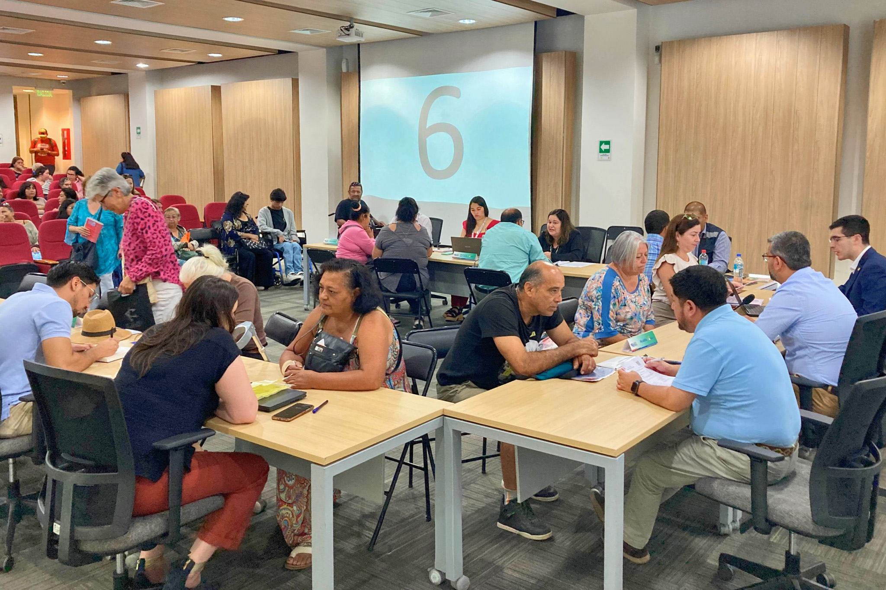
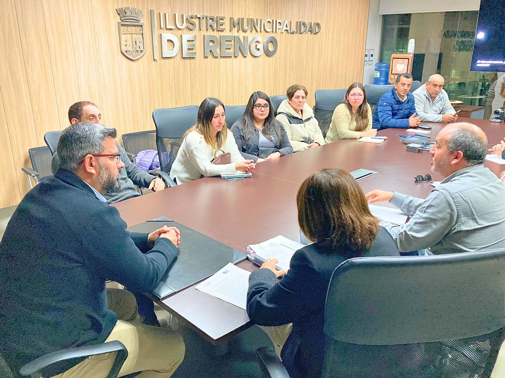
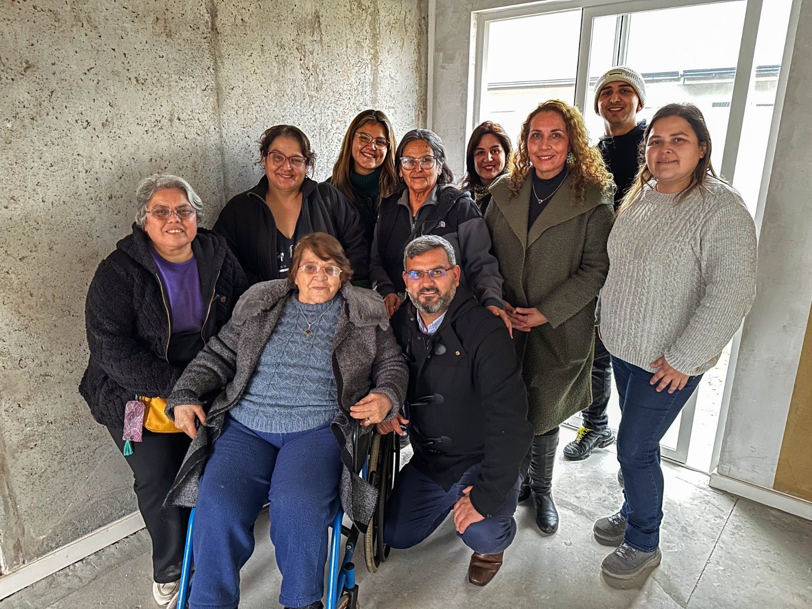

Usa la barra superior para navegar por capítulo · Ctrl+K para buscar en todo el portal
Portal en construcción
Próximos hitos del PLADECO
Las fechas son las proyecciones oficiales del proceso de elaboración e implementación del Plan.
2026
año meta
Aprobación del Plan
Jun 2026
2028
año meta
Primera Evaluación
Dic 2028
2035
año meta
Meta Final 2035
Dic 2035
🗓️ Hoja de Ruta del PLADECO
Línea de Tiempo del Proceso · 2025 — 2035
Los 11 hitos del Plan de Desarrollo Comunal Rengo, desde la etnografía institucional hasta la meta final 2035. Desliza horizontalmente o usa las flechas para recorrer la cronología completa.
CompletadoEn CursoPendiente
🔬
2025 — 2026
Revisión Bibliográfica · Etnografía Social e Institucional · Formulación Propuesta
Completado
2026
Creación del Portal PLADECO 2025-2035
Completado
2026
Revisión por Comisiones y Actores de Interés
En Curso
2026
Aprobación PLADECO por Concejo Pleno
Pendiente
2026
Plan de Inversión · Corto Plazo
Pendiente
2027
Transformación Digital Municipal
Pendiente
2028
Evaluación 1ª Fase · 112 acciones
Pendiente
🔄
2029
Ajuste de Mediano Plazo
Pendiente
2030
Agenda 2030 · Objetivos de Desarrollo Sostenible
Pendiente
2032
Evaluación 2ª Fase · 91 acciones
Pendiente
2035
Meta Final PLADECO
Pendiente
2 de 11 hitos completados · 1 en curso · 8 por venir
01
Parte 01 / 04 · Apertura
Introducción
Punto de entrada al PLADECO Rengo 2025-2035: qué es, qué lo inspira y cómo se conecta con tu vida cotidiana. Antes de mirar datos, primero entendemos el marco que da sentido a todo lo demás.
1capítulo
Bienvenida & Marco del PLADECOComienza por entender qué es el Plan de Desarrollo Comunal Rengo 2025-2035, qué lo inspira y cómo se conecta con tu vida cotidiana en la comuna.
Identidad Institucional
Misión, Visión, Principios y Proyección
Los pilares que orientan la gestión de la Ilustre Municipalidad de Rengo y la imagen objetivo del PLADECO 2025-2035.
Misión
Nuestro propósito
La Municipalidad de Rengo existe para mejorar la calidad de vida de sus habitantes, gestionando con eficiencia, transparencia y participación los servicios, el territorio y las oportunidades del desarrollo local, con especial atención a los grupos y localidades en mayor condición de vulnerabilidad.
💚 Calidad de vida Eficiencia🔎 Transparencia Participación

🔮 Visión
El Rengo que soñamos
Rengo será una comuna moderna, inclusiva y territorialmente equilibrada, reconocida por la calidad de sus servicios públicos, la participación activa de sus comunidades y su rol articulador del desarrollo económico local en la Región de O'Higgins.
🌎 Modernidad Inclusión Equilibrio Desarrollo

Principios
Cómo actuamos
Una institución que actúa con transparencia y probidad, que distribuye recursos con equidad territorial, que escucha a su ciudadanía, que innova sin perder su identidad, y que cuida el patrimonio natural, cultural y social como un bien que pertenece a las generaciones futuras.
Probidad Equidad🏭 Patrimonio💚 Futuro

🔮 Imagen Objetivo Comunal
Proyección Rengo 2035
En el 2035, Rengo habrá consolidado un modelo de desarrollo territorial inclusivo y sostenible, que reduce las desigualdades entre sus localidades urbanas y rurales, aprovecha sus ventajas comparativas en agricultura, agroindustria y cultura, y posiciona a sus comunidades como protagonistas activas de la transformación local en la macrozona central de Chile.
🌎 Sostenibilidad Equidad territorial🌱 Agricultura🎭 Cultura Comunidades activas
Horizonte 2025 — 2035
Fuente: Elaboración SECPLAC Municipalidad de Rengo · Imagen objetivo construida con base en el proceso participativo PLADECO 2025-2035 (472 vecinos, 95 organizaciones, 21 unidades vecinales) · Marco normativo: Ley Orgánica Constitucional de Municipalidades 18.695 · Articulado con la Estrategia Regional de Desarrollo (ERD) O’Higgins 2024-2036.
¿Qué es el Plan de Desarrollo Comunal?
Instrumento rector de la planificación municipal, establecido en la Ley Orgánica Constitucional de Municipalidades, que orienta el desarrollo armónico y participativo de la comuna (CEPAL, 2024).
Art. 7 LOCM: «Contemplará las acciones orientadas a satisfacer las necesidades de la comunidad local y a promover su avance social, económico y cultural.»
Art. 1 Inc. 2: Las Municipalidades tienen por finalidad satisfacer las necesidades de la comunidad local y asegurar su participación en el progreso económico, social y cultural de las respectivas comunas.
Art. 7 Inc. 2: «En la elaboración y ejecución del plan comunal de desarrollo, tanto el alcalde como el concejo deberán tener en cuenta la participación ciudadana y la necesaria coordinación con los demás servicios públicos que operen en el ámbito comunal.»
— Ley 18.695 Orgánica Constitucional de Municipalidades
Metodología Participativa
1Encuestas de Participación Ciudadana
2Entrevistas a actores locales (funcionarios, vecinos, activistas)
3Encuentros Participativos territoriales
4Entrevistas a Autoridades Comunales (Alcalde, Concejales, COSOC)
DiagnósticoFuentes de Información del PLADECO
El diagnóstico comunal se construyó integrando 4 fuentes complementarias que garantizan una visión integral del territorio y sus comunidades.
Datos Secundarios
Indicadores socioeconómicos de INE (Censo 2024), CASEN, SINIM, ICVU y SUBDERE que conforman la línea base cuantitativa del territorio.
🗣
Entrevistas Semiestructuradas
Diálogos con autoridades comunales (Alcalde, Concejales, COSOC), funcionarios municipales, dirigentes sociales y actores institucionales clave.
Participación Territorial
Encuentros participativos en 21 unidades vecinales (9 urbanas + 12 rurales), trabajo etnográfico de campo y cartografía comunitaria.
Encuesta Ciudadana
2.096 respuestas que capturan prioridades, satisfacción, identidad y necesidades comunitarias en todas las unidades territoriales.
Este proceso de actualización del PLADECO de la Ilustre Municipalidad de Rengo se plantea como una legitimación de las orientaciones de la nueva administración, herramientas de Planificación Subnacional, Participación de Actores Locales y la consagración de redes de Políticas (Policy Networks).
Innovación
Implementación de medios digitales que faciliten la recopilación y visualización de datos para la toma de decisiones.
Policy Networks
Articulación de redes inter-institucionales que potencien la cooperación y el aprendizaje colectivo.
Viabilidad y Aplicabilidad
Definición de Objetivos Estratégicos y Matrices que se traduzcan en proyectos de inversión y políticas públicas ejecutables.
Desarrollo Comunal
Impulso de programas y proyectos que mejoren el bienestar socioeconómico y la infraestructura local.
Fuente: Ley Orgánica Constitucional de Municipalidades N° 18.695 · Ley 20.500 sobre Asociaciones y Participación Ciudadana en la Gestión Pública · Subsecretaría de Desarrollo Regional y Administrativo (SUBDERE) · Manual de Elaboración de PLADECO · Contraloría General de la República, dictamen sobre cumplimiento PLADECO.
Carta Gantt
Cronograma del Proceso PLADECO 2025-2035
Carta Gantt interactiva con los 7 macroprocesos y 30 actividades específicas del proceso de actualización del PLADECO Rengo, distribuidos en 42 semanas de trabajo entre Agosto 2025 y Junio 2026. Cada barra representa la duración estimada de la actividad. Toca cualquier macroproceso para desplegar sus actividades, usa los filtros para enfocar la vista o descarga el documento PDF original elaborado por SECPLAC.
Documento Técnico Original
PLADECO Rengo 2025-2035 — Cronograma del Proceso
Carta Gantt oficial con la planificación de los 7 procesos del PLADECO · Modalidad híbrida · SECPLAC Municipalidad de Rengo · 143 KB · PDF
Macroproceso (resumen) Actividad específica Hito / entrega final👈 Toca un macroproceso para ver sus actividades semana por semana
➔ Desliza horizontalmente para ver las 42 semanas del cronograma
👨
Modalidad Híbrida
El proceso combina trabajo presencial (entrevistas territoriales, jornadas con OSC, talleres con concejales) y remoto (sistematización de datos, encuesta digital masiva, análisis bibliográfico).
Evidencia del Trabajo
Cada actividad genera registros verificables: entrevistas grabadas con consentimiento, actas firmadas, presentaciones SECPLAC, jornadas documentadas y fuentes bibliográficas citadas.
Gobernanza Policéntrica
La metodología (Ostrom 2010) categoriza actores en institucionales (alcalde, concejales, directores, funcionarios) y sociedad civil (OSC, dirigentes UV, comunidades educativas, adultos mayores).
Hoja de Ruta Institucional
Qué pasa después · ruta de aprobación e implementación
El documento PLADECO 2025-2035 se entrega en junio de 2026. A partir de ahí, esta es la ruta institucional que activa el plan, lo aprueba, lo financia y lo somete a rendición pública.
Paso 1 · Jul-Ago 2026
Aprobación del Concejo Municipal
Presentación oficial del documento al Concejo, deliberación y acuerdo de aprobación según la Ley Orgánica de Municipalidades.
Paso 2 · Sep 2026
Decreto Alcaldicio
Promulgación del PLADECO 2025-2035 como instrumento oficial de la comuna; publicación en el sitio web municipal y notificación a SUBDERE y al Gobierno Regional de O'Higgins.
Paso 3 · Sep-Oct 2026
Plan Anual de Implementación 2026-2027
SECPLAC traduce el PLADECO en metas operativas anuales y asignación presupuestaria 2027. Se activa el Horizonte 1 de urgencia legal (Protocolo Karin, COSOC, Código de Ética).
Paso 4 · Oct 2026 →
Tablero de 10 KPIs · reporte trimestral
El tablero de gestión institucional entra en operación; reporte público al Concejo Municipal cada trimestre. Es el mecanismo que evita que el plan se desconecte como el anterior (40% de cumplimiento histórico).
Paso 5 · Mar 2027
1ª Encuesta de satisfacción + Informe Anual
Primera medición sistemática de satisfacción ciudadana e Informe Anual de Gestión del PLADECO publicado para la comuna y para el Concejo.
Paso 6 · Permanente
Cómo seguir participando
COSOC con sesiones públicas trimestrales · Cuadernillo de UV con avances por sector · Encuesta anual de satisfacción · Buzón ciudadano permanente · Acta y devolución pública en cada hito.
Compromiso institucional: el PLADECO no termina cuando se entrega el documento. Empieza ahí. La diferencia con el plan anterior (40% de cumplimiento) se juega en este flujo de aprobación, decreto, implementación, seguimiento trimestral y devolución a la ciudadanía. Cada paso tiene fecha y responsable.
Fuente: SECPLAC Municipalidad de Rengo • Cronograma del Proceso de Actualización PLADECO Rengo 2025-2035 • Modalidad híbrida • Mayo 2026 • Documento PDF disponible para descarga al inicio de esta sección.
Del PLADECO 2019-2031 al PLADECO 2025-2035: qué cambia y por qué
Lectura comparada, sistemática y trazable entre el instrumento anterior —aprobado por el Concejo Municipal el 21 de agosto de 2019 (Certificado N° 1074)— y el nuevo Plan en formulación. Comparar no es juzgar al instrumento previo: es un ejercicio de aprendizaje organizacional que reconoce qué se conserva, qué problemas persisten y qué evidencia nueva sustenta las decisiones.
Instrumento anterior
PLADECO 2019-2031
228 páginas · horizonte de 13 años
Censo 2017 a nivel comunal · manual SUBDERE de 2009
21 encuentros «Árbol de los Sueños» con 500+ asistentes
Aprobado con disenso: 3 a favor + Alcalde · 2 abstenciones · 1 rechazo
Sin KPIs, sin fuentes de financiamiento, sin articulación ERD/ODS
→
Instrumento en formulación
PLADECO 2025-2035
Horizonte de 10 años, alineado a la ERD 2024-2036 y la Agenda 2030
Censo 2024 por manzana (826) · Manual SUBDERE-IDER UFRO 2021
KPIs con línea base censal + seguimiento MRV + este portal de acceso
Documenta las 32 variables codificables del comparador
39
Variables comparadas
3
Dimensiones de análisis
228
Páginas del PLADECO 2019 analizadas
4
Estados de codificación (Sí · No · Parcial · S/I)
¿Por qué un nuevo PLADECO? · Fundamentos de la actualización
Síntesis de la introducción del comparador: la actualización no parte de cero — se construye sobre el instrumento anterior e incorpora lo que entre 2019 y 2025 cambió en evidencia, normativa, metodología y escala de articulación.
Fundamentos que justifican la elaboración del PLADECO 2025-2035
Fundamento
Detalle
Continuidad institucional
Cada PLADECO se construye sobre las capacidades, decisiones y omisiones del anterior. La comparación es un dispositivo de aprendizaje organizacional que reconstruye la memoria institucional del municipio y orienta su acción futura — no un juicio sumario del instrumento previo.
Lo que se conserva del 2019
El PLADECO 2019-2031 fue un esfuerzo institucional relevante, ejecutado íntegramente con recursos humanos municipales: la técnica del «árbol de los sueños», el reconocimiento de la identidad barrial y rural como unidad de análisis, y 5 equipos territoriales con 119 funcionarios. El proceso 2025 conserva y fortalece estos elementos.
Nueva evidencia disponible
Censo de Población y Vivienda 2024 (INE) procesado a nivel de manzana; auditorías de la Contraloría General de la República 2009-2024; cartera del Banco Integrado de Proyectos (BIP); cuentas públicas y estados financieros municipales 2015-2025.
Nuevo marco normativo exigible
Ley 21.180 (Transformación Digital del Estado), Ley 21.430 (Garantías de la Niñez, 2022), Ley 21.364 (Sistema Nacional de Prevención y Respuesta ante Desastres, 2021), Ley 21.807 (2026, modificación LOCMUN), Ley 20.500 (participación), Convenio 169 OIT y Ley 20.422 (inclusión). Ninguna era exigible —o siquiera existía— al formularse el plan anterior.
Nuevo estándar metodológico
Manual PLADECO SUBDERE-IDER UFRO (2021), Matriz de Bienestar Humano Territorial (UAI-SUBDERE, 2021) y guía CEPAL-ILPES (2021): elevan el estándar de diagnóstico, indicadores y seguimiento respecto del manual disponible en 2018-2019.
Nueva escala de articulación
El PLADECO deja de ser un acto aislado: se alinea con la Estrategia Regional de Desarrollo O'Higgins 2024-2036 y con la Agenda 2030 (ODS). Esa coherencia multinivel es condición habilitante para acceder a financiamiento concursable (FNDR, FRIL, SUBDERE, sectoriales).
Matriz comparativa dinámica · 39 variables
Filtra por dimensión o busca una variable. Cada fila compara ambos instrumentos y ofrece la observación técnica del comparador. Codificación: SíNoParcialS/I · sin informaciónDato
Matriz comparativa de 39 variables entre el PLADECO 2019-2031 y el PLADECO 2025-2035
Pregunta
PLADECO 2019-2031
PLADECO 2025-2035
Balance de la comparación · 32 variables codificables
Cuántas variables documenta cada instrumento (se excluyen las 7 filas puramente informativas). El gráfico se calcula desde la propia matriz.
En síntesis · cuatro razones de fondo para un nuevo PLADECO
Si solo lee esto: el salto de 8 a 32 variables documentadas no es burocrático, responde a cuatro cambios sustantivos que vuelven el Plan más justo, financiable y verificable.
Censo 2017 agregado→Censo 2024 por manzana
De la intuición a la evidencia territorial: 826 manzanas y 6 índices de vulnerabilidad permiten priorizar la inversión donde más se necesita, no donde más se reclama.
Proyectos sin recursos→Cartera con fuentes
De una lista de buenas intenciones a una cartera financiable: cada acción identifica su fuente (FNDR, FRIL, SUBDERE, sectoriales o recursos propios), condición de su viabilidad real.
Sin KPIs ni línea base→10 indicadores + MRV
De un plan que no se podía medir a uno evaluable: metas al 2035 con línea base censal 2024 y mecanismo de seguimiento (MRV) que habilita la evaluación intermedia.
Acto comunal aislado→Articulación ERD + ODS
De un documento local a un instrumento articulado: coherencia con la ERD O'Higgins 2024-2036 y la Agenda 2030 — la llave para acceder a financiamiento regional concursable.
Fuente: Comparador de Instrumentos PLADECO 2019-2031 / 2025-2035 (Mañán, O. & Ramírez, P.; dir. D. Castillo — Secretaría Comunal de Planificación, 2026), elaborado sobre el PLADECO 2019-2031 (228 págs., I. Municipalidad de Rengo, 2019), las estructuras V2/V3 del proceso 2025 y el Manual PLADECO SUBDERE-IDER UFRO (2021). Codificación: Sí = documentado con evidencia verificable · No = ausencia constatada · S/I = el documento 2019 no permite establecerlo · Parcial = presente con cobertura insuficiente. Documento técnico completo disponible en SECPLAC.
Identidad comunal · Linea de tiempo
Historia de Rengo: una comuna que sobrevive y se desarrolla con la asociatividad
Rengo no se construye sola. Desde los pueblos originarios picunche hasta el PLADECO 2025-2035, cada hito de la comuna ha estado sostenido por la organización colectiva: caciques mapuche, cofradías coloniales, sociedades obreras del ferrocarril, cooperativas agrícolas, juntas de vecinos, cuerpos de bomberos voluntarios, sindicatos rurales y las 95 organizaciones funcionales que hoy participan en este Plan. Esta sección presenta esa trayectoria —documentada por Soto Pizarro (2010) y la Ilustre Municipalidad de Rengo (2024)— como hilo conductor de la identidad comunal.
Memoria visual
Del Cacique Renku al río Cachapoal: más de tres siglos de organización colectiva en una sola imagen. Cada elemento documenta un momento de cohesión comunitaria, desde la Aldea de Río Claro (1692) hasta el presente.
“
La asociatividad no es una promesa del PLADECO: es el patrón histórico que ha permitido que Rengo sobreviva a los grandes ciclos —originario, colonial, republicano, ferroviario, agroexportador y post-industrial— y a los embates recurrentes de la naturaleza (inundaciones 1878–2023, terremotos 1985 y 2010), siguiendo siendo una comuna con identidad propia en el Valle del Cachapoal.
⏱️ Cinco hitos que explican el Rengo de hoy
Cada hito muestra cómo una forma distinta de asociatividad sostuvo el desarrollo en su época, validada con fuentes históricas verificables.
Pre–1692
Orígenes prehispánicos
Renkü, los picunche y la toponimia mapudungún «agua de arena»
El toponímico «Rengo» admite dos lecturas etimológicas documentadas. Una proviene del mapudungún Rengko o Rengü, que significa «agua de arena», descripción precisa del lecho aluvial del Cachapoal. La otra, registrada por WikicharliE y la enciclopedia Wikipedia (es), refiere al Cacique Renku (o Renco), lugarteniente picunche de Caupolicán, cuyo nombre en mapudungún se interpreta como «invencible» o «el más bravo entre los bravos». Renku participó en la Batalla de Lagunillas (8 de noviembre de 1557) durante la Guerra de Arauco, y fue citado por Alonso de Ercilla en La Araucana (1569). Antes de la presencia hispana, el valle estaba habitado por los picunche —la rama norteña del pueblo mapuche—, agricultores sedentarios organizados en lof (unidades familiares territoriales) y rewes (espacios rituales de asociación). Las tres esculturas monólitas de la actual Plaza de Armas honran esta memoria fundacional: la asociatividad renguína no nace con la villa colonial, la precede.
Rengko · agua de arenaRenku · «invencible»Batalla de Lagunillas 1557La Araucana · 1569
1692
Asentamiento colonial
Aldea de Río Clarillo: el primer asentamiento hispano formal
En noviembre de 1692, el Gobernador del Reino de Chile Tomás Marín de Poveda (1650–1703) ordena la fundación del primer asentamiento hispano formal en el valle bajo el nombre «Aldea de Río Clarillo» (también consignada como «Lugar del río Claro o Clarillo» en Memoria Chilena), oficializada por Real Cédula del 31 de diciembre de 1695 (WikicharliE / Wikipedia). El territorio estaba comprendido desde 1593 en el Corregimiento de Colchagua. La fundación respondía al programa borbónico de combatir la dispersión demográfica hispana entre Santiago y Concepción, agrupando a los habitantes de estancias rurales para someterlos a la autoridad civil y eclesiástica. La vida institucional se sostiene desde sus orígenes en cofradías religiosas, gremios artesanales y juntas de vecinos coloniales; en 1786 asume Antonio Cornelio de Quezada como primer cura párroco, y en 1792 se abre el Libro de Partidas de Entierros (4 de octubre), el primer registro civil-religioso continuo del territorio.
Nov 1692 · Río ClarilloReal Cédula 31 dic 1695Corregimiento Colchagua 1593Primer cura párroco 1786
🚆1831 · 1865 · 1893
Villa, Ciudad y Modernización republicana
De Villa de Rengo a ciudad ferroviaria: el siglo XIX que transforma la identidad comunal
En 1825, Don Ramón Freire —en su rol de Director Supremo de la naciente República— otorga al asentamiento el primer título de villa bajo el nombre transitorio de «Villa Deseada» (WikicharliE / Wikipedia). El 17 de septiembre de 1831, la Asamblea Provincial de Colchagua decreta oficialmente la Villa de Rengo, rebautizándola con el nombre del cacique. En marzo de 1832 se traza su primer plano urbano y la villa es designada capital del Departamento de Caupolicán. El 7 de agosto de 1865 es elevada al rango de Ciudad, hito que coincide con la inauguración del Ferrocarril Central Santiago–Talca, transformando a Rengo en nodo logístico del Chile republicano. En 1872 se inaugura el servicio de carros a tracción animal entre la estación y la plaza. La estación atrae trabajadores, comerciantes y artesanos, dando origen a las primeras sociedades de socorros mutuos. En 1882, gracias a la donación de Valentín Díaz Valdés, se erige el Templo Santa Ana en la plaza. En 1893, con la donación de Juan Egenau Laun, nace la Primera Compañía del Cuerpo de Bomberos de Rengo.
Villa Deseada 1825Villa 17 sep 1831Plano urbano 1832Ciudad · Ferrocarril 1865Templo Santa Ana 1882Bomberos 1893
🍇1913–2010
Siglo XX: modernización y resiliencia
Electricidad, expansión urbana, Reforma Agraria y la prueba de los desastres
En 1911 se inaugura el cementerio municipal (WikicharliE / Wikipedia). En 1913 Rengo se electrifica con la inauguración del alumbrado eléctrico, marcando el inicio del siglo XX urbano. En 1917, bajo el alcalde Osvaldo Gálvez Román, se impulsa la primera expansión urbana planificada de la ciudad; un año después, en 1918, se instala el tranvía eléctrico entre la estación y la plaza, reemplazando los carros a tracción animal. La Reforma Agraria (1962–1973) introduce sindicatos campesinos y cooperativas; en 1968 la Ley 16.880 de Juntas de Vecinos institucionaliza la asociatividad territorial que hoy estructura las 21 UV del PLADECO. En 1969 se inaugura el Embalse Laguna de los Cristales, asegurando riego agrícola. Pero el siglo XX también prueba la resiliencia comunitaria: inundaciones recurrentes (1878, 1900, 1919, 1926, 1982, 1986, 2023), el terremoto del 3 de marzo de 1985 (intensidad VII Mercalli) que dañó el 80% de las viviendas, el terremoto del Maule del 27 de febrero de 2010 y tragedias viales (1929, 1952, 1973, 1995, 1999). La Basílica Santa Ana es reconstruida entre 1991 y 1996 y elevada a Basílica Menor el 6 de mayo de 1997.
Cementerio 1911Electricidad 1913Tranvía 1918Terremoto 3 mar 1985Basílica Menor 1997
2025–2035
PLADECO 2025–2035
El proceso participativo más amplio de la historia comunal
El PLADECO 2025-2035 constituye el diagnóstico más amplio de la historia comunal: más de 300 personas consultadas, 77 juntas de vecinos en el levantamiento territorial y 40 entrevistas en profundidad con actores institucionales. A esta cobertura base se suman 472 vecinos y vecinas activos en talleres por unidad vecinal, 95 organizaciones funcionales, 115 funcionarios municipales entrevistados y la voz de 4.036 niños, niñas y adolescentes a través de la Oficina Local de la Niñez. No es un plan diseñado en gabinete: es la síntesis técnica de más de tres siglos de asociatividad comunal —desde la Aldea de Río Clarillo de 1692 hasta hoy—, proyectada en 6 ejes estratégicos, 225 acciones priorizadas y 10 KPIs medibles al año 2035.
+300personas consultadas
77juntas de vecinos
40entrevistas en profundidad
4.036NNA encuestados (OLN)
Marco conceptual: por qué la historia explica el territorio
Milton Santos (1996)
El territorio no es un soporte neutral: es una construcción histórica acumulativa donde cada capa —indígena, colonial, republicana, contemporánea— deja una marca legíble en el espacio actual.
Stuart Elden (2010)
Territorio es territorio político: un proceso de delimitación, soberanía y administración. La historia de Rengo es la historia de quién gobierna el valle y para qué.
James Corner (1999)
El paisaje es un palimpsesto: las huellas materiales del pasado —trama colonial, estación del ferrocarril, embalse, plaza— siguen estructurando las prácticas urbanas y rurales del presente.
Henri Lefebvre (1970)
El espacio urbano es producto de relaciones sociales. Planificar Rengo es incidir en esas relaciones —no solo en m2 de calzada—, reconociendo que la vida comunal se produce colectivamente.
Este marco teórico fundamenta el enfoque del PLADECO: la planificación no parte de cero, sino que dialoga con la historia acumulada y con las prácticas asociativas heredadas. Aportes complementarios: Kevin Lynch (legibilidad urbana), Jane Jacobs (vida vecinal), John Friedmann (planificación transactiva), Borja & Castells (ciudad y ciudadanía).
Bibliografía y fuentes consultadas
Fuentes documentales primarias
Soto Pizarro, J. (2010). Historia de Rengo. Ilustre Municipalidad de Rengo.
Ilustre Municipalidad de Rengo. (2024). Bases históricas para el PLADECO 2025-2035. SECPLAC, Rengo.
Archivo Histórico Municipal de Rengo. Fondo documental 1831-2024.
República de Chile. (1968). Ley N° 16.880 de Juntas de Vecinos y demás Organizaciones Comunitarias.
República de Chile. (1988). Ley N° 18.695 Orgánica Constitucional de Municipalidades.
Fuentes en línea verificables
WikicharliE. Artículos «Rengo» y «Tomás Marín de Poveda». Recuperado de wikicharlie.cl/w/Rengo
Recursos pedagógicos para colegios, universidades e investigadores que quieran usar el PLADECO como material didáctico, herramienta de investigación o ejemplo de planificación participativa territorial.
10 preguntas sobre Rengo y el PLADECO. Póndrate a prueba y descubre cuánto sabes de tu comuna.
🧭
Tour Guiado de 8 pasos
Conoce las principales funcionalidades del portal con un recorrido interactivo: panel de avance, índice navegable, glosario, buscador, favoritos, tema claro/oscuro y compartir.
Puedes pausarlo o salir en cualquier momento con Esc
Recursos clasificados por audiencia para que profesores, estudiantes universitarios e investigadores aprovechen el portal y los datos del PLADECO.
Para profesores de colegio
Usa el portal como insumo en clases de Historia, Geografía y Ciencias Sociales: mapas interactivos, Censo, FODA participativo, espacios públicos, sueños ciudadanos.
Datos primarios para tesis, papers y proyectos en planificación urbana, sociología, ciencia política y gestión pública. Documentación metodológica completa.
Bases de datos en formato abierto (CSV, JSON, GeoJSON, XLSX) bajo licencia CC BY-SA 4.0. Ideal para estudios comparados de planificación comunal en Chile.
Fuente: Material educativo elaborado por equipo SECPLAC PLADECO 2025-2035 · Quiz con preguntas basadas en datos verificables del portal · Tour guiado optimizado para primera visita · Recursos disponibles bajo licencia Creative Commons BY-SA 4.0.
Dashboard Comunal
Indicadores Clave de Rengo
Así se ve la comuna hoy (2024) y las metas a 2028 y 2035. Rengo lidera indicadores institucionales de la región —empresas, transparencia, sitio web municipal— pero esos logros aún no se traducen en bienestar percibido: cerrar esa distancia es el desafío de fondo del PLADECO.
Cobertura Preescolar ▲ Aumentar
50,9%
Meta 2028: 65% | Meta 2035: 75%
NNA Inseguros en Calle ▼ Reducir
54,4%
Meta 2028: 35% | Meta 2035: 20%
NNA evalúa negativo la comuna ▼ Crítico
100%
El liderazgo institucional no se traduce en bienestar percibido
Empresas Comunales Líder
4.439
1a de la Región de O'Higgins
Deserción Ed. Media ▼ Reducir
11,6%
Meta 2028: <8% | Meta 2035: <5%
Escolaridad Promedio
11,1 años
Nacional: 12,1 | Brecha: -1,0 año
Áreas Verdes ▼ Crítico
1,96 m²/hab
OMS: 9-10 m² | Meta 2035: 9 m²
Alcantarillado ▲ Aumentar
77%
Meta 2028: 83% | Meta 2035: 90%
VIF Mujer ▼ Reducir
426 casos
Meta 2028: <300 | Meta 2035: <150
Robos con Violencia ▼ Reducir
166 casos
Meta 2028: <120 | Meta 2035: <60
Cumplimiento PLADECO Ant.
40%
Meta 2028: 60% | Meta 2035: 100%
Materialización de Inversión ▼ Crítico
30,7%
Cayó desde 49,4% · de cada $100, $69 no llegan
Captación de Fondos Externos ▲ Aumentar
6,28%
Promedio regional: 13,89% · brecha ~$1.200M/año
Transparencia CPLT Líder
97,89%
+15,85 pp sobre media nacional · 1° de O'Higgins
Web Index 1°
0,846
1° de 33 comunas O'Higgins
Rengo vs Promedios Nacionales
Indicadores clave comparados con el promedio del país
Evolución de Transparencia Municipal
Ranking CPLT 2012-2024 — De 16% a 97,89%
Lectura del Diagnóstico
El tablero muestra una comuna con activos institucionales de primer orden — lidera empresas, transparencia y sitio web en la región — pero con bienestar percibido en deterioro: el 100% de los NNA evalúa negativamente la comuna y la mitad de los instrumentos institucionales existe solo en papel. Los KPIs no son problemas aislados, son la radiografía de la paradoja central del PLADECO: capacidad sin articulación, liderazgo formal sin transformación sentida.
Fuentes: INE, Censo Nacional de Población y Vivienda 2024 • CASEN 2022, Ministerio de Desarrollo Social • CPLT, Ranking de Transparencia Municipal 2024 • MINEDUC, Estadísticas de Educación 2023 • SII, Registro de Empresas 2024 • Encuesta Ciudadana PLADECO Rengo 2025 (n=119) • Subsecretaría de Prevención del Delito, Estadísticas 2023
02
Parte 02 / 04 · Qué sabemos
Diagnóstico
Tres lecturas convergen sobre la realidad de Rengo: los datos territoriales (Censo 2024, 826 manzanas), el análisis profundo (índices, comparadores, MBHT) y la voz de la comunidad (472 personas, 95 organizaciones, 4.036 NNA). De aquí nace la evidencia que sostiene el plan.
3capítulos · II, III, IV
Conoce tu Comuna · Diagnóstico TerritorialEl Censo 2024 retrata quiénes somos: 63.620 habitantes en 826 manzanas. Aquí descubrimos las fortalezas, brechas y desafíos del territorio que habitamos.
Observatorio Laboral
Ficha Comunal · Realidad y Proyección 2024–2029
Síntesis ejecutiva integrada de la realidad económica, demográfica y laboral de Rengo, que conecta datos del presente con las inversiones proyectadas hasta 2029. Cada indicador se vincula con un Eje Estratégico del PLADECO para dar coherencia entre diagnóstico y planificación.
Estudio Realidad Comunal · Observatorio Laboral
Rengo.
Región del Libertador Gral. Bernardo O'Higgins · Datos 2024–2025
63.620
habitantes · Censo 2024
4.439
empresas · SII 2024
US$ 208M
inversión 2025–2029
30.925
Hombres
32.695
Mujeres
13,8%
65 años o más
31.632
Fuerza de trabajo
38,0%
Ocupados formales
719
Vacantes BNE
DemografíaCenso 2024
Población total censada63.620
Personas de 65 años o más13,8%
Distribución por sexo
63.620
total
Mujeres32.695
Hombres30.925
Mercado Laboral e IngresosENE · MIDESO 2024
Población en edad de trabajar (PET)57.301
Fuerza de trabajo31.632
Promedio ingresos asalariados formales$978.243
Mediana ingresos asalariados dependientes$754.760
Asalariados formales que ganan el mínimo4,8%
Composición de la fuerza de trabajo
🏢
Tejido EmpresarialSII 2024
Total de empresas4.439
Trabajadores dependientes26.625
Trabajadores a honorarios4.696
Trabajadores por modalidad
Bolsa Nacional de Empleo — VacantesBNE 2025
Avisos publicados82
Total de vacantes719
① Apoyo a la producción205 vacantes
② Control abastecimiento / Etiquetado200 vacantes
③ Procesamiento de alimentos100 vacantes
Vacantes por ocupación (top 3)
🏗️
Proyectos de Inversión 2025–2029CBC 2025
208
millones USD · 4 proyectos 2025–2029
531
empleos fase operación
1.211
empleo peak total
Empleos creados por tipo — fase construcción (total 741)
Empleo Peak Total (n° personas)1.211
Cantidad de proyectos de inversión4
Del Presente al Futuro
Estrategias PLADECO Vinculadas a la Ficha Comunal
Cada indicador del observatorio se conecta con un Eje Estratégico del PLADECO 2025-2035 para garantizar coherencia entre el diagnóstico actual y la planificación futura.
Rengo es una comuna que crece más rápido por su economía que por su mercado laboral formal. Tiene 4.439 empresas activas y una inversión proyectada de US$ 208 millones hasta 2029 — un tejido productivo que la coloca segunda en la región — pero solo el 38% de quienes trabajan lo hacen con contrato formal, el 4,8% gana el salario mínimo y la mediana de ingresos asalariados ($754.760) queda bajo el promedio regional. La paradoja central: el dinamismo no se traduce en empleo decente. El PLADECO debe usar esta ficha como gatillo para una política de formalización PyME, capacitación tributaria y vinculación con la inversión privada antes de que las brechas se sedimenten.
Fuentes: INE Censo 2024 • Encuesta Nacional de Empleo ENE 2024 • MIDESO Ingresos 2024 • SII Registro Empresas 2024 • Bolsa Nacional de Empleo BNE 2025 • Corporación de Bienes de Capital CBC 2025 • Subsecretaría del Trabajo · Observatorio Laboral Comunal • Ficha basada en Estudio Realidad Comunal
Censo 2024
Censo Nacional de Población y Vivienda 2024
Resultados oficiales INE para la comuna de Rengo — 63.620 habitantes, 25.124 viviendas, 22.338 hogares — 683,7 km²
Distribución Urbano-Rural
79,9% población urbana / 20,1% rural — 683,7 km²
Migración Internacional
2.796 migrantes (4,4%) — Nacionalidades principales
Pirámide Poblacional
7 grupos etarios — Hombres (izquierda) vs Mujeres (derecha) — Total: 63.620 hab. — Mediana: 37 años
Composición Etaria
👴EL ENVEJECIMIENTO QUE YA LLEGÓ
El índice de envejecimiento —adultos mayores por cada 100 jóvenes— no es una proyección lejana: ya se duplicó en una generación y alcanzará la paridad hacia 2035. Rengo dejó de ser una comuna joven.
2001
35
índice envejec.
→
2017
53,8
índice envejec.
→
2024
72,1
índice envejec.
→
2035 (proyección)
100
1 mayor por joven
8.796
adultos mayores hoy en Rengo — +2.061 en solo 7 años (+30,6%)
40 min
distancia al CESFAM para adultos mayores rurales — doble exclusión: por edad y por distancia
🏥
El sistema de salud y cuidado de hoy no fue diseñado para el Rengo de 2035. El envejecimiento sostenido obliga a repensar la oferta de salud, cuidados y servicios sociales con anticipación. Y los adultos mayores rurales enfrentan una doble exclusión —por su edad y por la distancia a los servicios— que el PLADECO debe corregir con cobertura territorial efectiva.
Fuente: INE, Censos 2002–2024 • Proyección 2035 de elaboración propia.
Tipos de Vivienda
25.124 viviendas — 97,3% casas — Distribución por tipología
Indicadores de Vivienda
Ocupación, hacinamiento y hogares unipersonales
Servicios Básicos
Educación, Empleo y Diversidad
Datos oficiales INE
¿Dónde hay más necesidades en Rengo?
Mapa de necesidades por localidad según datos del Instituto Nacional de Estadísticas: acceso a internet, nivel educativo, servicios básicos y más en 20 localidades
Ranking de Vulnerabilidad por Localidad
Top 15 localidades por ICP — Rojo: Rural / Azul: Urbano
Brechas Urbano-Rural
Comparación de 7 índices entre áreas urbanas y rurales
Mapa de Calor — Dimensiones de Vulnerabilidad
6 dimensiones para las 15 localidades más vulnerables — Verde (bajo) a Rojo (alto)
Mapa de Vulnerabilidad Territorial
24 localidades — Tamaño proporcional a población — Color según nivel ICP
Composición del ICP — Top 10 Localidades
Aporte de cada dimensión al índice compuesto de vulnerabilidad
Lectura del Diagnóstico
El Censo 2024 confirma una transición demográfica acelerada: el índice de envejecimiento se duplicó en una generación (35→72,1) y alcanzará 100 en 2035. Con 8.796 adultos mayores hoy (+30,6% en 7 años), el sistema de salud y cuidado actual queda corto para 2035 — especialmente en zonas rurales donde el CESFAM está a 40 minutos. Diseñar la política comunal para la demografía de hoy es planificar para una Rengo que ya no será. Las prioridades de inversión en salud y cuidado deben empezar a leerse desde 2035 hacia atrás, no desde 2025 hacia adelante.
Fuentes: INE, Censo Nacional de Población y Vivienda 2024 — Resultados oficiales comuna de Rengo • Índices de vulnerabilidad: elaboración propia con datos INE 2024 (servicios básicos, capital humano, brecha digital, precariedad habitacional) • FONASA, Cobertura de Salud 2024
Benchmarking Territorial
Comparador con Comunas Vecinas
Posición relativa de Rengo frente a las comunas vecinas del Valle de Cachapoal y la provincia. Compara indicadores demográficos, sociales, de pobreza, educación y desempeño municipal según datos oficiales del INE, MIDESO, SUBDERE y SINIM. Selecciona hasta 5 comunas para analizarlas en paralelo.
Selecciona comunas para comparar
Rengo en el contexto regional
Dónde se ubica Rengo en O'Higgins
Posición de Rengo en los principales indicadores institucionales y financieros de la Región de O'Higgins, según fuentes oficiales. Para comparativos específicos con Rancagua, Machalí o San Vicente, consultar SINIM, CPLT e IIGAM con datos actualizados al momento de la implementación.
Empresas formales
4.439
1° de la Región de O'Higgins
SII · padrón 2023
Transparencia CPLT
97,89%
1° regional · +15,85 pp sobre media nacional
CPLT 2024
PACCC aprobado
Único de la Provincia de Cachapoal
Acceso a fondos climáticos internacionales (Ley 21.807)
PACCC IDOM 2026
Captación fondos externos
6,28%
vs 13,89% promedio regional · brecha 7,61 pp
≈ $1.200M/año no captados
IIGAM 2024
15/33
Meta 2027: ≤10/33 · Meta 2029: ≤7/33
Índice de Gestión Municipal · SUBDERE
Materialización inversión
30,7%
Cayó desde 49,4% de la década anterior
BIP · cartera 2014-2025
Lectura del contexto: Rengo lidera en activos institucionales (empresas, transparencia, instrumentos como el PACCC) pero queda rezagada en gestión financiera (captación bajo el promedio regional) y en eficiencia de implementación (materialización en caída). El PLADECO 2025-2035 busca convertir el liderazgo formal en resultados verificables.
Fuentes: INE Censo 2024 (población, ruralidad) · MIDESO CASEN 2022 (pobreza multidimensional) · SUBDERE-SINIM 2023 (FCM, IDH municipal) · PNUD IDH Comunal 2024 · SIEDU Mineduc (escolaridad promedio). Las cifras son aproximadas para fines comparativos del PLADECO.
Diagnóstico Institucional
Funcionarios y Directores Municipales · Etnografía Institucional
Análisis cualitativo y cuantitativo de 115 entrevistas a funcionarios y directores de la Municipalidad de Rengo: cultura organizacional, gestión interna, FODA institucional, percepción sobre burocracia y propuestas de innovación. Levantamiento etnográfico realizado durante el proceso PLADECO 2025–2035.
🎬¿POR QUÉ UNA ETNOGRAFÍA INSTITUCIONAL?
Antes de planificar el futuro, necesitamos comprender cómo trabaja realmente la Municipalidad desde quienes la habitan día a día. La etnografía institucional —método desarrollado por Dorothy E. Smith— nos permite ir más allá del organigrama formal y observar las relaciones cotidianas, los flujos de información, las tensiones invisibles y las prácticas concretas que dan vida a la gestión municipal. Estas 115 entrevistas revelan que más del 67% de las menciones son fortalezas, evidenciando un capital humano comprometido, pero también exponen 249 debilidades que el PLADECO 2025-2035 debe abordar de forma estructural.
Personas Entrevistadas
115
Funcionarios + Directores
Funcionarios
101
Hoja 1 · nivel operativo
🏫 Directores
14
Hoja 2 · nivel estratégico
Direcciones
30
DIDECO, SECPLAC, DOM, etc.
Unidades
46
Departamentos analizados
Respuestas
1.855
Datos cualitativos analizados
Hallazgos Clave del Análisis Etnográfico
⚗️CAPITAL POSITIVO 67%
Ratio F:D de 2.4:1 — 610 menciones de Fortalezas vs 249 Debilidades. Existe un capital institucional positivo sobre el cual el PLADECO puede construir, pero requiere consolidar prácticas existentes.
🧑🧑CULTURA = TEMA #1
55,9% de las respuestas abordan Cultura Organizacional (680 menciones). El clima laboral, las relaciones humanas y la comunicación interna emergen como el eje crítico del funcionamiento municipal.
GESTIÓN = MAYOR BRECHA
60 debilidades en Gestión (24% del total D). Procesos lentos, falta de manual de procedimientos, descoordinación entre direcciones y burocracia interna son las brechas más estructurales.
🚀OPORTUNIDADES SUB-EXPLORADAS
Solo 35 menciones de Oportunidades frente a 249 Debilidades (ratio 1:7). Existe un déficit de visión prospectiva: los funcionarios identifican problemas pero requieren acompañamiento para imaginar soluciones.
DDEL+SECPLAN+DIDECO 38%
Tres direcciones concentran el 38% del corpus: DDEL (260 resp.), SECPLAN (242) y DIDECO (213). Son los nodos articuladores de la gestión cotidiana: desarrollo económico, planificación y vínculo comunitario.
🔭MIRADA INTROSPECTIVA
Solo 10 menciones de Amenazas externas (1,1% del FODA). Los funcionarios concentran su preocupación en lo interno: lo institucional pesa más que el contexto externo. Falta articulación con escenarios regionales y nacionales.
⏱️CUATRO BRECHAS INSTITUCIONALES URGENTES
Por encima de las debilidades estructurales, el diagnóstico detecta cuatro brechas de cumplimiento que exigen acción inmediata. Todas son corregibles en aproximadamente 90 días y a bajo costo: no requieren grandes inversiones, sino decisión administrativa. Atenderlas protege al municipio de sanciones y blinda la legitimidad del propio PLADECO.
1. Ley Karin · 6 brechas activas
Persisten 6 brechas de cumplimiento de la Ley Karin abiertas desde su entrada en vigencia en agosto de 2024. La inacción expone al municipio a fiscalización y a multas de hasta 100 UTM.
Vigente desde ago-2024 · Sanción: hasta 100 UTM
2. COSOC como organismo informativo
El Consejo de la Sociedad Civil opera actualmente netamente como un organismo de entrega de información, sin procesos vinculantes formalizados. Su evolución hacia una instancia con incidencia resolutiva en la implementación del PLADECO es un desafío institucional pendiente que debe abordarse mediante el fortalecimiento de su reglamento interno y la definición de procedimientos de consulta vinculantes (Ley 20.500).
El 50% de los 12 instrumentos de gestión municipal existe solo en papel: aprobados pero sin indicadores, sin presupuesto asignado y sin responsable. Documentos formales que no operan.
6 de 12 instrumentos sin implementar
📉4. Materialización de inversión · 30,7%
La materialización de la inversión cayó a un 30,7%, desde el 49,4% previo. Recursos comprometidos que no se traducen en obras: cada punto perdido es inversión que la comuna no recibe.
Cayó desde 49,4% → 30,7%
🧐LA PARADOJA: capacidad sin articulación
Rengo alcanza un 97,89% de transparencia —el más alto de la región— y, al mismo tiempo, mantiene el 50% de sus instrumentos de gestión solo en papel. Ambas cifras coexisten porque el problema no es falta de capacidad técnica, sino de articulación: el municipio sabe cumplir y documentar, pero no logra que esos instrumentos se conviertan en gestión viva con presupuesto, indicadores y responsables. Cerrar esa brecha de articulación es el desafío central de los próximos 90 días.
Comparación directa Fortalezas vs Debilidades en cada dimensión temática
💪 Fortalezas Internas
Vinculación fuerte y potente con salud comunitaria
Coordinación inicial sectorial positiva
Profesionalidad para superar conflictos internos
Cambio positivo en atención municipal (nueva administración)
Trabajo en terreno con organizaciones territoriales
Escuela de Dirigentes y FONDEVE funcionales
⚡ Debilidades Internas
No existe manual de procedimientos internos
Falta capacitaciones continuas a funcionarios
«Cahuínes» y relaciones tóxicas entre funcionarios
Descoordinación entre direcciones municipales
Falta de validez/legitimidad oficinas territoriales (Rosario)
Duplicidad de funciones administrativas
Falta de autocuidado emocional institucional
🚀 Oportunidades Externas
«Gobierno en Terreno» como nueva metodología
Mesas de trabajo con Uniones Comunales
Articulación con empresas privadas para emprendimiento
Trabajo comunitario con adultos mayores productivos
Plataformas digitales para postulación a beneficios
Descentralización hacia Oficina Rosario
Amenazas Externas
Burnout y desgaste emocional de dirigentes sociales
Brecha en comprensión vecinal de procesos administrativos
Personal clave que se va (pérdida de conocimiento)
Resistencias internas que perjudican atención al vecino
Falencias presupuestarias para actividades comunitarias
Falta de instructivos formales para beneficios sociales
Red Institucional · Conexiones entre Direcciones
Grafo SNA: 15 direcciones más activas conectadas por temas/categorías compartidas. Cada arista representa un área común entre dos direcciones. Filtra por temas, arrastra los nodos.
Click en chips de tema · Hover en arista para ver detalle · Drag para reorganizar
Diagrama Sankey · Flujo Direcciones → Categorías → FODA
Visualización del flujo de las 1.216 respuestas: cómo cada dirección municipal aporta a las 6 dimensiones temáticas, y cómo éstas se distribuyen en los cuadrantes FODA. El ancho del flujo es proporcional al volumen.
Hover en los flujos para ver volumen exacto · Click en nodos para resaltar trayectoria
NODO MÁS CENTRAL
DIDECO es el actor con mayor centralidad en la red institucional: se conecta con todas las 6 dimensiones y articula con 11 de las 14 direcciones principales.
CLUSTER DOMINANTE
El cluster Cultura Organizacional agrupa la mayor cantidad de direcciones (680 respuestas). Indica que el clima laboral es una preocupación transversal.
FLUJO MÁS CRÍTICO
El flujo Gestión → Debilidades es el más denso del Sankey (60 menciones). Las debilidades de proceso son la brecha más relevante de toda la red.
DIRECCIONES PUENTE
SECPLAN, GABINETE y DIRECCIÓN DE CONTROL actúan como puente entre Planificación y Gestión: requieren reforzamiento para fluidificar la coordinación inter-direcciones.
Citas Textuales de Funcionarios y Directores
Fragmentos directos de las entrevistas etnográficas, organizados por dimensión. Se preservan voces originales como evidencia cualitativa.
📫Cultura Organizacional
«La dinámica interna en su inicio fue generando resistencia al interior por no aportar y no apoyarse a nivel interno. Se aprendió de manera autónoma el proceso interno de la Municipalidad; no existió acompañamiento del superior jerárquico. No existe un manual de los procedimientos internos, no existe la entrega de un PLADECO, no existe una entrega del reglamento interno de la municipalidad.»
DIDECO · Comunitaria (Operativo) · Funcionario
Coordinación Interna
«No hay una primera recepción al público objetivo. Sería ideal que tengamos información en los pisos para entregar información a nivel municipal sobre los procedimientos de la Municipalidad. Los guardias entregan harta información de los procesos internos de la comuna.»
DIDECO · Atención al público · Funcionario
Gestión y Trámites
«No todos pueden dar el servicio de Registro Social de Hogares. Hay una clave que solo da cartolas y no se tiene en Rosario. Solo miércoles se puede dar porque viene un funcionario de Rengo. No existen capacitaciones de los funcionarios para mejorar los servicios y atención.»
DIDECO · Oficina Rosario · Funcionario
Clima Organizacional
«Existe una gran frecuencia de cahuínes y comentarios entre funcionarios. Existen nodos de cahuínes y relaciones de toxicidad por los funcionarios. Los procesos internos a nivel interno, más allá de los cahuínes y malos comentarios, se logran superar por profesionalidad.»
DIDECO · Clima laboral · Funcionario
💪Fortaleza Institucional
«La vinculación con la salud es fuerte y potente; existen actividades junto con compromisos con los diversos actores de la municipalidad. Trabajar con adultos mayores para emprender la venta y exposición de sus productos; realizar una coordinación con DDEL. Creación de mesas de trabajo con las Uniones Comunales.»
DIDECO · Articulación sectorial · Funcionario
🥺Salud Mental y Burnout
«Se impulsó lo relacionado a la Salud Mental de los dirigentes. El psicólogo fue una ayuda para atender a los vecinos para abordar los desgastes institucionales y sociales. Existe un desgaste emocional con los funcionarios que deben ser atendidos para abordar el burnout de los dirigentes sociales.»
DIDECO · Bienestar funcionarios · Funcionario
Innovación Propuesta
«Se requiere más comunidad y trabajo en terreno, lo que requiere un trabajo con las organizaciones comunitarias en el levantamiento de información, mediante una escucha activa. La atención en la municipalidad ha cambiado mucho, todo esto con el propósito de contar con una buena atención de los funcionarios.»
DIDECO · Innovación · Funcionario
Política Pública
«Los vecinos no entienden los procesos administrativos. Es clave contar con un procedimiento de atención al público con una metodología más clara. Se crearon programas comunitarios para derivar la información a la comunidad. La Escuela de Dirigentes permitió contar con una proyección de información comunal para los vecinos.»
DIDECO · Comunicación vecinal · Funcionario
Planificación Estratégica
«Definir cuál es el foco y comunicarlo; muchas veces hay intuición por lo que se escucha. El PLADECO debe fijar los objetivos; inversión al espacio público en un plan integral. El foco debe ser en espacios grandes, mejorar veredas, mucho espacio que desarrollar, caminos, infraestructura vial.»
SECPLAN · Formulación · Funcionario
🏗️Obras Municipales
«Solo memo y correo. Se fortalece con trabajo en equipo. La nueva ordenanza de espacios públicos requiere un trabajo coordinado, donde profesionales de cada dirección se articulen. Aumentar el número de reuniones y retroalimentación. Crear un diario mural para los procesos de retroalimentación.»
DIRECCIÓN DE OBRAS MUNICIPALES · Formulación · Funcionario
🌵Aseo & Ornato
«Cambiar las empresas contratantes en base a un proceso transparente. Programa efectivo de residuos por parte de la Municipalidad. Planificación trimestral. El desafío es subdividir al personal en diferentes equipos de trabajo. El crecimiento de áreas verdes y lo urbano será extenso debiendo impulsarse una serie de trabajos.»
DIRECCIÓN DE ASEO Y ORNATO · Gestión General · Funcionario
Control Interno
«Los procesos de remuneración están al debe lo que es tecnología. Existe un alto riesgo en detrimento municipal: existen muchos cálculos a mano pero no en sistema. Se requiere modernizar urgentemente la base administrativa.»
DIRECCIÓN DE CONTROL · Gestión General · Funcionario
📱Modernización Digital
«Modernizarse: la modernidad en cuanto a procesos principales, y que los servicios sean más eficientes; debería ser digital. Los procesos son los mismos; ahora solo hay computadores, pero no ha cambiado tanto. Aumentar el trabajo en equipo para impulsar actividades en conjunto.»
SECRETARÍA MUNICIPAL · Procesos transversales · Funcionario
🎔Desarrollo Económico
«Superficie productiva agrícola importante. Agroindustria importante para el funcionamiento de prestadores de servicios. Tenemos comercio pero apunta a la persona local. Poco financiamiento, porque es nuevo; la idea es llamar a más gente. No hay problemas de logística.»
DDEL · Gestión de riesgos y desastres · Funcionario
🧴Prevención & Articulación
«Coordinación: trabajan mucho con contactos. Cómo se muestra el servicio. Actividades pequeñas, pero se masifican, amplian la oferta programática, es fácil trabajar. La articulación territorial permite llegar a comunidades alejadas.»
SENDA · Coordinación preventiva · Funcionario
🏭Gabinete & Prioridades
«Aumentar la seguridad en la comuna. Mejorar la atención primaria —es fundamental categorizar rápido según requerimientos internos. Se deben priorizar según esta agenda. El vínculo con el Alcalde es directo pero requiere mejorar canales formales con direcciones.»
GABINETE · Planificación · Funcionario
Metodología: Las citas fueron seleccionadas mediante análisis de frecuencia y relevancia (scoring 1-7) sobre 1.855 respuestas. Se preserva la voz original de funcionarios y directores como evidencia cualitativa. La etnografía institucional busca comprender el habitar cotidiano del municipio desde quienes lo construyen día a día.
Implicancias Estratégicas para el PLADECO 2025–2035
Los hallazgos del diagnóstico institucional se traducen en 6 líneas de acción prioritárias que el PLADECO debe abordar para modernizar la gestión municipal y mejorar la calidad del servicio al vecino. Cada implicancia está vinculada a uno de los 6 ejes estratégicos del plan.
1. Manual de Procedimientos & Inducción
La ausencia repetida de un manual interno y la entrega del PLADECO/Reglamento emerge como la brecha más mencionada. Funcionarios aprenden «a punta de prueba y error», lo que genera ineficiencias y resistencia al interior.
→ Eje 6 · Gestión Municipal Moderna
2. Mesa Inter-Direcciones
La descoordinación entre direcciones aparece en 8 de las 25 unidades. Mesas de coordinación quincenales con DOM, DIDECO, SECPLAN, Salud y Aseo & Ornato permitirían alinear procesos transversales.
→ Eje 6 · Gobernanza Inter-Direcciones
🏫3. Plan de Capacitación Continua
Reglamento de capacitación con 14 años sin actualizar (referenciado en literatura previa). Funcionarios solicitan: clave única RSH, atención a público, ofimática, salud mental, redacción administrativa.
→ Eje 6 · Recursos Humanos
🥺4. Salud Mental Institucional
Burnout, «cahuínes», nodos tóxicos y desgaste emocional son menciones recurrentes. Programa de autocuidado, supervisión clínica para equipos de atención directa y código de convivencia institucional.
→ Eje 1 · Cuidado y Bienestar
5. Descentralización Oficina Rosario
La Oficina Rosario opera con baja validez institucional según los propios funcionarios: clave RSH disponible solo miércoles, sin sala de reuniones, sin presupuesto propio. Plan de fortalecimiento territorial.
→ Eje 4 · Descentralización
6. Digitalización de Trámites
Postulaciones digitales sin instructivos formales, tablas de puntaje erróneas, falta de formularios de rendición. Plataforma única de trámites alineada con Ley 21.180 (Transformación Digital).
→ Eje 6 · Gobierno Digital
SÍNTESIS: De la Escucha a la Acción
Esta etnografía institucional no es un diagnóstico más: es la voz de quienes habitan la Municipalidad día a día. Las 1.855 respuestas constituyen el insumo cualitativo más extenso jamás producido para el PLADECO de Rengo. Las próximas etapas requieren: (1) validar los hallazgos con los entrevistados, (2) traducir las 6 implicancias en acciones concretas en la Matriz Estratégica, y (3) establecer un monitoreo bianual del clima organizacional para medir avances hacia la «Municipalidad que construye el futuro».
Lectura del Diagnóstico
Las 4 brechas urgentes (6 Ley Karin, COSOC sin sesionar, 50% instrumentos solo en papel, materialización 30,7%) tienen una característica común: ninguna requiere inversión significativa, todas se pueden cerrar en torno a 90 días y todas crecen en riesgo legal y político cada mes que pasan sin acción. El costo de omitirlas (multas hasta 100 UTM, exposición de la legitimidad jurídica del propio PLADECO, fondos no captados) supera estructuralmente el costo de corregirlas. Son la prueba más concreta de que el problema institucional de Rengo no es de capacidad sino de articulación: el municipio que produce un sitio web 1° regional puede cerrar 6 brechas de Ley Karin en un mes.
Mirada de Género
El diagnóstico institucional requiere visibilizar la composición de género en la dotación municipal, en cargos directivos y en el futuro COSOC. La Ley Karin — cuyo cumplimiento es una de las 4 brechas urgentes — busca exactamente eso: un municipio donde mujeres y disidencias trabajen en condiciones de seguridad. Su implementación al 100% de la dotación es, en los hechos, la primera política institucional de género del PLADECO.
26 descubrimientos clave recogidos en más de 40 entrevistas y visitas a las 21 unidades vecinales de Rengo
Hallazgos por Dominio
Distribución de los 26 hallazgos etnográficos identificados
Historial CGR: Fiscalizaciones 2010-2024
24 intervenciones de Contraloría en 15 años — razón de reformas institucionales
Capacidad Institucional
Evaluación multidimensional del municipio según hallazgos etnográficos
Capital Social Comunitario
Indicadores de cohesión social y participación desde la etnografía
Matriz de Tensiones Institucionales
Fuerzas impulsoras vs. restrictivas identificadas en el trabajo de campo
Fuente: Trabajo de campo PLADECO 2025: 40+ entrevistas en profundidad, observación participante en 21 unidades vecinales • Actores entrevistados: dirigentes vecinales, concejales, directores municipales, líderes culturales, COSOC, adultos mayores, entre otros
Análisis Territorial · Datos en ProfundidadMapas, comparadores y índices que revelan las desigualdades territoriales: la brecha urbano-rural, la situación de la niñez y la diversidad interna de las 21 unidades vecinales.
§11.7 · Estrategia de Implementación
🧭 Horizontes de Implementación 2025-2035
El PLADECO no se ejecuta de una sola vez. Sus 225 acciones priorizadas se despliegan en tres horizontes temporales, cada uno con un foco estratégico propio. Esta hoja de ruta muestra la secuencia: qué se prioriza en cada fase, con qué intensidad y qué transformación deja instalada para la siguiente.
Corto · 112
Mediano · 91
22
Distribución de las 225 acciones priorizadas según su horizonte de ejecución
01
Corto Plazo
2025 – 2028
Cimientos
112acciones · 50% de la cartera
Foco estratégico
Instalar capacidades de gestión, resolver lo urgente y conseguir resultados visibles tempranos que construyan confianza ciudadana en el plan.
En esta fase
La mitad de la cartera se concentra aquí. Predominan las acciones habilitantes —ordenamiento de la gestión municipal, formulación de proyectos a fondos concursables (FRIL, PMU, FNDR) y fortalecimiento de los equipos— junto con intervenciones de impacto rápido en los barrios y la puesta en marcha simultánea de los 6 ejes estratégicos.
▸Transformación esperada: el plan pasa del documento a la acción; la comunidad percibe los primeros cambios concretos en su entorno cercano.
02
Mediano Plazo
2028 – 2032
Consolidación
91acciones · 40% de la cartera
Foco estratégico
Ejecutar las inversiones estructurales y escalar los programas que demostraron resultados durante la primera fase.
En esta fase
Se materializan los proyectos de mayor envergadura —infraestructura, equipamiento comunitario y programas sociales sostenidos— que requieren diseño previo, financiamiento sectorial o regional y plazos de maduración largos. La gestión se profesionaliza y los indicadores comienzan a moverse de forma sostenida.
▸Transformación esperada: los cambios dejan de ser puntuales y se vuelven estructurales y medibles — el territorio y los servicios se transforman de manera duradera.
03
Largo Plazo
2032 – 2035
Proyección
22acciones · 10% de la cartera
Foco estratégico
Completar la cartera de mayor complejidad, evaluar el ciclo completo y dejar instaladas las bases del próximo PLADECO.
En esta fase
Quedan las acciones de mayor aliento —las que dependen de hitos previos, gestiones supracomunales o definiciones de política de largo plazo—. Es también el momento de la evaluación final de metas y de sistematizar los aprendizajes del decenio.
▸Transformación esperada: el Rengo proyectado en la visión comunal 2035 se consolida —una comuna más equitativa, sostenible y mejor gobernada— con una hoja de ruta lista para el siguiente horizonte.
Los 6 ejes estratégicos están presentes en los tres horizontes, pero con distinta intensidad: el corto plazo siembra, el mediano plazo construye y el largo plazo proyecta. Cada fase contempla una instancia de evaluación que permite ajustar la cartera según los resultados alcanzados.
Argumentario Estratégico · Agenda de arranque
Hoja de Ruta de Implementación Institucional 2026-2028
Antes de desplegar el portafolio de la década, el municipio necesita ordenar su propia casa. Esta hoja de ruta institucional complementa la cartera de largo plazo 2025-2035 que se presenta arriba: aquella es el portafolio de acciones del decenio; esta es la agenda de gestión de arranque —tres horizontes acotados, de seis meses a un año, con 18 hitos verificables que habilitan al municipio para ejecutar todo lo demás.
H1
Urgencia legal
Abril – Octubre 2026
6 hitos
Foco del horizonte
Cerrar las obligaciones legales pendientes y poner en marcha los órganos mínimos de probidad y participación.
Hitos verificables
▸Protocolo Ley Karin: 6 brechas cerradas.
▸Código de Ética Municipal aprobado.
▸100% de la dotación capacitada en Ley Karin.
▸COSOC activado: 1ª sesión y acta.
▸Tablero de 10 KPIs operativo.
▸Consejo de Integridad: primera sesión.
H2
Arquitectura institucional
Octubre 2026 – Abril 2027
6 hitos
Foco del horizonte
Construir las capacidades estables —unidades, planes e instrumentos— que permiten formular y captar inversión.
Hitos verificables
▸Unidad de formulación de proyectos creada.
▸PACCC articulado con presupuesto asignado.
▸Plan Regulador Comunal en actualización.
▸Plan Comunal de Seguridad Hídrica.
▸Postulación a 3 proyectos FNDR/ERD.
▸1ª encuesta de satisfacción ciudadana.
H3
Consolidación
Abril 2027 – Abril 2028
6 hitos
Foco del horizonte
Consolidar la gestión, rendir cuentas y dejar instalados los resultados ambientales y de movilidad.
Hitos verificables
▸Informe Anual de Gestión publicado.
▸Convenio CGR 2027-2028 renovado.
▸Unidad de Cambio Climático activa.
▸3 rutas de movilidad operativas.
▸IIGAM: meta ≤10/33 regional.
▸Captación de fondos externos ≥9%.
Dos planos, una misma dirección. La cartera 2025-2035 define qué se construye en la década; esta hoja de ruta institucional 2026-2028 asegura el cómo: sin gestión ordenada, órganos de probidad activos y capacidad de formulación, el portafolio de largo plazo no encuentra quién lo ejecute. Los 18 hitos son la condición habilitante de las 225 acciones.
Argumentario Estratégico · Matriz Ejecutiva
4 decisiones estratégicas prioritarias
Matriz de acción urgencia × impacto. Es el mapa ejecutivo de decisiones del PLADECO para el Alcalde y el Concejo: qué cerrar ya, qué planificar ahora, qué implementar progresivamente y qué construir como visión de mediano plazo.
⚡ Urgencia alta · Cumplimiento legal
ACTUAR AHORA
Protocolo Ley Karin: cerrar las 6 brechas activas desde agosto 2024
COSOC: convocar primera sesión en 15 días
Capacitar al 100% de la dotación en Ley 21.643
Aprobar el Código de Ética Municipal
30-60 días · Sin costo significativo · Cierra riesgo legal activo
📐 Urgencia alta · Arquitectura institucional
PLANIFICAR HOY
Crear Unidad Técnica de Formulación de Proyectos Externos
Tablero de 10 KPIs reportable al Concejo trimestralmente
Articular el PACCC con presupuesto asignado
Alinear la cartera BIP con prioridades ERD
90-180 días · Requiere resolución ejecutiva · Alto retorno
Mediano plazo · Servicios territoriales
IMPLEMENTAR PROGRESIVO
Plan de movilidad: 3 rutas críticas identificadas
Programa de cuidado para adulto mayor rural
Prevención temprana: jóvenes en riesgo (14-17 años)
Actualización del Plan Regulador Comunal
6-12 meses · Requiere presupuesto 2027 · Impacto en bienestar
🌅 Largo plazo · Posicionamiento estratégico
VISIÓN 2030-2035
Valle Apalta: articulación enoturística productiva
METROTREN: nodo de movilidad regional
Diversificación del empleo más allá del sector estacional
Meta IIGAM: de posición 15 a top 7 en O'Higgins
18-36 meses · Requiere alianzas intersectoriales · Define identidad
Fuente: Distribución temporal de las 225 acciones priorizadas — Matriz Estratégica PLADECO Rengo 2025-2035, SECPLAC, Mayo 2026 (112 acciones de corto plazo, 91 de mediano plazo y 22 de largo plazo). Hoja de Ruta de Implementación Institucional 2026-2028 con sus 18 hitos verificables — Argumentario Estratégico PLADECO Rengo.
PLADECO · Sección 11.3
Índice de Calidad Territorial · Espacios Públicos
Levantamiento territorial actualizado en Abril 2026 con catastro georreferenciado de 65 puntos de observación distribuidos en 5 agrupaciones territoriales: Zona Urbana Central de Rengo (n=15), Localidades y Periferias Rurales (n=15), Conjuntos Habitacionales y Plazas Vecinales (n=15), Expansión Urbana y Equipamiento Mayor (n=12) y Equipamiento Institucional y Bordes Críticos (n=8). Cada punto fue evaluado mediante un protocolo estandarizado de 5 variables (estado de infraestructura, áreas verdes, iluminación/seguridad, accesibilidad universal, limpieza/mantención) y clasificado en escala ordinal de 5 categorías (Excelente=5 / Bueno=4 / Regular=3 / Deficiente=2 / Crítico=1). El Índice de Calidad Territorial (ICT) normaliza estos puntajes en escala 0-100. Cada espacio incluye coordenadas GPS, tipología, problemáticas identificadas y propuestas de intervención con instrumentos identificables (FRIL, PMU, FNDR, Consejo de Monumentos Nacionales, Patrimonio Cultural).
Documento Técnico Completo
Informe Levantamiento Espacios Públicos · Comuna de Rengo
PDF con los 65 puntos de observación, registro fotográfico georreferenciado, análisis de coherencia urbana y propuestas detalladas por espacio · Elaborado SECPLAC PLADECO 2025-2035 · Abril 2026 · ~54 MB.
Tabla N°11 · Levantamiento Abril 2026 SECPLAC · 65 puntos de observación en 5 agrupaciones territoriales · Metodología: observación directa + GPS + registro fotográfico + 5 variables evaluadas (infraestructura, áreas verdes, iluminación/seguridad, accesibilidad universal, limpieza). Métrica ICT 0–100 normalizada (Excelente=100, Bueno=75, Regular=50, Deficiente=25, Crítico=0). Clic en cada espacio para acceder a problemáticas y propuestas detalladas.
—
ICT Promedio Comunal
0
Excelente
—
0
Bueno
—
0
Regular
—
0
Deficiente
—
0
Crítico
—
Cargando…
Estado
Zona
Distribución por Estado
Clic en segmento para filtrar · 5 estados de conservación
ICT Promedio por Zona Territorial
Clic en barra para filtrar por zona · Centro-Periferia
Ranking Comunal de Espacios · ICT 0–100
65 puntos ordenados · Clic para ir al mapa · Hover para ubicar marcador
Matriz de Priorización Centro-Periferia
Distribución de espacios por zona territorial × estado de conservación · Identifica brechas y focos de intervención
Brecha de Calidad por Zona
100 − ICT promedio · Distancia al óptimo teórico
Composición de Estado por Zona
Proporción relativa (%) de cada estado dentro de la zona
Del Diagnóstico Espacial al Plan de Inversión
6 Líneas de Intervención Activadas por el Catastro ICT
El estado de conservación de cada espacio se traduce directamente en su prioridad para el banco comunal de proyectos. Los espacios Críticos activan FNDR + Consejo de Monumentos para recuperación patrimonial; los Deficientes se priorizan vía FRIL y PMU; los Buenos y Excelentes se documentan como modelos replicables. Cada decisión de inversión queda trazable al diagnóstico que la respalda.
Protocolo estandarizado aplicado a los 65 puntos de observación por el equipo SECPLAC. Cada espacio fue evaluado en terreno por dos profesionales, con registro GPS, fotografía georreferenciada y ficha de campo. Los puntajes ordinales (1-5) se promedian y normalizan al Índice de Calidad Territorial (ICT 0-100).
Calidad y mantención de jardines, arbolado, césped, riego, especies adecuadas al clima mediterráneo de Rengo.
Iluminación y Seguridad
Cobertura lumínica nocturna, cámaras, vigilancia natural, percepción de seguridad, ausencia de "puntos ciegos".
♿️
Accesibilidad Universal
Rampas, anchos de circulación, baldosa podotáctil, baja altura de mobiliario, accesos sin barreras (ley 20.422).
🧹
Limpieza y Mantención
Recolección de residuos, basureros operativos, ausencia de microbasurales, grafiti vandalismo, pintura conservada.
Escala ordinal de evaluación (5 categorías)
5
Excelente
ICT ≈ 100
4
Bueno
ICT ≈ 75
3
Regular
ICT ≈ 50
2
Deficiente
ICT ≈ 25
1
Crítico
ICT ≈ 0
5 Agrupaciones Territoriales
El catastro Abril 2026 organizó los 65 puntos en cinco agrupaciones territoriales según criterios de centralidad, densidad urbana y tipología de equipamiento. Cada agrupación revela patrones específicos de calidad y prioridades de intervención.
1
Zona Urbana Central
n = 15 espacios
Centro histórico y consolidado de Rengo: Plaza de Armas, Boulevard Palmeras, ejes cívicos, áreas de servicios y equipamiento de uso comunal frecuente.
FocoPatrimonio + uso intensivo
Énfasis de evaluación
Recuperación patrimonial (medialuna, EFE)
Accesibilidad universal
Cuidado de arbolado urbano histórico
2
Localidades y Periferias Rurales
n = 15 espacios
Rosario, Popeta, Cerrillos, El Trebal-Huilquío, La Chimba: plazas barriales rurales, medialunas locales, equipamiento de uso comunitario disperso.
FocoEquidad territorial
Énfasis de evaluación
Conectividad y accesibilidad
Riego solar autónomo
Cooperación con JJ.VV. locales
3
Conjuntos Habitacionales y Plazas Vecinales
n = 15 espacios
Villas y conjuntos habitacionales SERVIU/DS49 con sus plazas internas: Esmeralda, La Torre, Vista Hermosa, Bellavista, Aida Oteíza, conjuntos recientes.
FocoPlazas barriales FRIL/PMU
Énfasis de evaluación
Renovación de juegos infantiles
Calistenia / equipamiento deportivo
Iluminación LED + mobiliario
4
Expansión Urbana y Equipamiento Mayor
n = 12 espacios
Zonas de crecimiento norte/sur, parques de mayor escala, multicanchas, polideportivos, equipamiento deportivo regional y áreas de futura consolidación.
FocoInversión FNDR sectorial
Énfasis de evaluación
Escala y dimensionamiento
Integración con planes maestros
Capacidad de eventos comunales
5
Equipamiento Institucional y Bordes Críticos
n = 8 espacios
Sedes municipales, DIDECO, comisaría, biblioteca, edificios públicos + bordes línea férrea, sitios eriazos urbanos y zonas residuales de alta vulnerabilidad.
FocoAtención urgente + gobernanza
Énfasis de evaluación
Rehabilitación de bordes ferroviarios
Modernización institucional
Recuperación de sitios eriazos
Glosario de Estados de Conservación
Criterios cualitativos que definen la asignación de cada espacio en una de las 5 categorías ordinales del ICT.
Excelente
100
Las 5 variables en su máximo: infraestructura nueva o muy bien conservada, áreas verdes saludables con riego operativo, iluminación LED total, accesibilidad universal completa (rampas + podotáctil), limpieza diaria. Espacio modelo replicable.
Bueno
75
Espacio operativo con mantención regular. Una de las 5 variables presenta debilidades menores (ej: una luminaria fundida, falta de baldosa podotáctil, basurero faltante). Requiere mejora puntual, no intervención integral.
Regular
50
Mantención irregular: 2-3 variables comprometidas. Infraestructura con desgaste visible pero funcional. Necesita renovación parcial vía FRIL o PMU; priorizar accesibilidad e iluminación.
Deficiente
25
3-4 variables en mal estado: infraestructura dañada, áreas verdes secas o ausentes, iluminación parcial o inexistente, sin accesibilidad. Renovación integral via FRIL ($80M) o PMU ($80M).
Crítico
0
Espacio inseguro o inutilizable. Riesgo estructural, microbasurales activos, ausencia total de servicios, abandono. Requiere intervención urgente FNDR + cerco perimetral temporal de seguridad.
🌏 Tipologías de Espacios Públicos Catastrados
Diversidad funcional de los 65 puntos. Cada tipología tiene un estándar de evaluación adaptado y un mix óptimo de variables prioritarias.
🌳 Plaza Vecinal Barrial 18🎪 Plaza Cívica / Patrimonial 5⚽ Multicancha / Polideportivo 8🍔 Medialuna Cultural 3 Equipamiento Institucional 7🗻 Parque Lineal / Borde 4🌿 Plaza Rural / Localidad 9📰 Equipamiento Educativo 5 Sede / Edificio Público 3 Sitio Eriazo / Borde Férreo 3
Hallazgos Clave del Diagnóstico
Síntesis de las brechas territoriales identificadas en Abril 2026 que orientan la priorización de inversión PLADECO.
Brecha Centro-Periferia
~20 puntos ICT
Diferencia promedio entre Zona Urbana Central (mejor estado) y Localidades Rurales (peor estado). La brecha es estructural y requiere plan de inversión diferenciado por zona.
Concentración Patrimonial
3 piezas críticas
Medialuna, Estación EFE Histórica y Boulevard Palmeras Phoenix concentran el riesgo patrimonial. Necesario gestionar con Consejo de Monumentos Nacionales + FNDR Cultura.
🌿
Déficit de Áreas Verdes Rurales
< 3 m²/hab
Las localidades rurales tienen menos áreas verdes por habitante que la OMS recomienda (9 m²/hab). Requiere arborización masiva con especies adaptadas al clima mediterráneo.
♿️
Brecha de Accesibilidad Universal
∼60%
Aproximadamente 6 de cada 10 espacios catastrados no cumplen estándar de accesibilidad universal (rampas + podotáctil + anchos mínimos). Inversión transversal vía SENADIS + FRIL.
👨🏫
Falta de Modelo de Mantención
~70% sin plan
La mayoría de espacios carece de protocolo de mantención periódico. Necesario institucionalizar contratos anuales DOM + protocolo de inspección trimestral.
Casos Éxito Replicables
4 referentes
Plaza Edmundo Ureta, Plaza Conjunto Habitacional Nuevo, Plaza Valentín Letelier y Parque Lineal Rosario Urbano. Documentar especies, materiales y modelo de mantención.
Tabla Comparativa por Zona Territorial
Indicadores agregados por las 4 zonas haversianas (Centro Urbano, Periferia Urbana, Localidades, Rural Disperso) calculados sobre los 65 puntos del catastro Abril 2026. La última columna activa el filtro correspondiente en el mapa interactivo.
Zona
Habitantes
UV
N° espacios catastrados
ICT promedio
Estado dominante
Proyectos PLADECO
Centro Urbano
35.200
5
21
62
Bueno / Regular
18
Periferia Urbana
15.623
4
19
48
Regular / Deficiente
14
Localidades
8.500
6
16
42
Deficiente
22
Rural Disperso
4.297
6
9
35
Deficiente / Crítico
28
Comuna (total/promedio)
63.620
21
65
~47
Regular / Deficiente
82
Notas: ICT promedio calculado como media aritmética de los espacios asignados haversianamente a cada zona. Estado dominante: moda estadística. Proyectos PLADECO: acciones priorizadas en la matriz que afectan cada zona (suma puede exceder 225 por proyectos transversales). «Comuna» usa promedio ponderado por nº de espacios.
Lectura del Diagnóstico
El ICT comunal promedio —47/100— ubica al espacio público de Rengo en la frontera entre «regular» y «deficiente», pero el promedio oculta la verdadera historia: el espacio público es una geografía desigual. El centro urbano y los conjuntos habitacionales nuevos puntean Bueno; las periferias rurales y los bordes críticos puntean Deficiente o Crítico. Ilumiación y accesibilidad universal son las dos variables que arrastran el índice hacia abajo en casi todas las zonas. Lo que aquí se cataloga no es solo infraestructura: es la calidad cotidiana de salir a la plaza, llevar a un niño al juego o caminar segura en la noche. El PLADECO debe leer estos 65 puntos como una hoja de ruta de inversión FRIL/PMU/FNDR priorizada por brecha, no por proximidad política.
Seguridad Vial y Siniestralidad de Tránsito (2020–2024)
Dónde, cuándo y por qué ocurren los siniestros de tránsito en Rengo — y qué hacer al respecto.
Entre 2020 y 2024 se registraron 905 siniestros en la comuna. El patrón es nítido: la siniestralidad es predominantemente urbana (96,1%), se concentra en un corredor central y su causalidad es mayoritariamente conductual (imprudencia y alcohol). La buena noticia es la tendencia a la baja (−21,2% entre 2020 y 2024). Este diagnóstico orienta la cartera de inversión en movilidad del PLADECO.
Evolución anual
Siniestros (barras) y víctimas (línea) por año · 2020–2024
Tipo de siniestro
Distribución por tipo
Severidad máxima
Consecuencia más grave por siniestro
Principales causas
Causa basal (preliminar)
Patrón temporal
Estacionalidad mensual (suma 2020–2024)
Mostrando 0 siniestros
Corredor crítico: Arturo Prat – San Martín – Riquelme
El análisis de densidad espacial confirma que la mayor concentración de siniestros y víctimas se produce en el eje central Arturo Prat – San Martín – Riquelme, principal corredor de circulación del casco urbano, donde convergen el tránsito vehicular, peatonal y comercial.
Es la prioridad de intervención: el punto donde una inversión en diseño vial seguro produce el mayor impacto por peso, al reducir la exposición justo en el tramo de mayor siniestralidad. Su tratamiento integral encabeza la cartera de proyectos.
Análisis de los datos
Seis lecturas clave que sintetizan el diagnóstico y orientan la inversión.
🏗️ Recomendación · Cartera de proyectos de movilidad y seguridad vial
Iniciativas derivadas del diagnóstico, con instrumento de financiamiento y horizonte. Sujetas a priorización del Concejo.
Fuente: CONASET · Carabineros de Chile (siniestros de tránsito), período 2020–2024 (905 registros) · Límite comunal: OpenStreetMap (aprox. al límite oficial BCN) · Cartografía y procesamiento: elaboración propia equipo PLADECO. Advertencias: la hora está disponible en ~40% de los registros; la causa es preliminar; 903 de 905 siniestros están georreferenciados (2 sin coordenada válida); el % regional (7,5%) proviene de totales CONASET O'Higgins.
Diagnóstico Territorial · Seguridad Pública
Diagnóstico de Seguridad Pública (2023–2026)
Qué delitos se registran en Rengo, cómo evolucionan y dónde están los focos críticos.
Entre 2023 y 2026 se registraron 14.765 hechos (≈ 81 por semana). El delito crece de forma moderada y sostenida (+2,9% y +3,2% en años completos) y está altamente concentrado: cinco categorías explican el 65,4%. El perfil comunal combina, casi en partes iguales, violencia de convivencia (42,8%) y delitos contra la propiedad (43,3%). Los focos emergentes —por sobre lo estadísticamente esperado— son el control de armas, los robos con fuerza y la Ley de Drogas.
Ranking de registros por categoría · 2023–2026
Acumulado del período (año a la fecha). En rojo, las 5 categorías principales (65,4% del total).
Evolución anual
Total de registros por año (2026 parcial, a la semana 21)
Composición por macro-grupo
Participación de cada gran grupo en el total del período
Serie semanal de registros · 180 semanas
Registros por semana y media móvil de 4 semanas (ene-2023 a may-2026). El valle de nov-2025 es un vacío de registro.
Focos sobre lo esperado (umbral z)
Umbral (z-score) promedio de la fuente por categoría. En rojo, z>1: sistemáticamente por sobre lo esperado.
Estacionalidad mensual
Promedio semanal por mes. La convivencia y el consumo de alcohol suben en verano; los robos a inmuebles, en invierno.
Lecturas clave del diagnóstico
Seis lecturas que sintetizan la evidencia y orientan la decisión.
Nudos críticos de seguridad
Focos priorizados por carga, lesividad y anomalía estadística.
1 · Violencia interpersonal y de convivenciaVIF (1.947) y amenazas y riñas (2.565) lideran el período y se intensifican en verano. Problema estructural, de alta carga social.
2 · Delitos contra la propiedadRobos a inmuebles (1.705), hurtos (1.534) y daños (1.901) suman el 43,3%. Los robos a inmuebles son persistentes y peakean en invierno.
3 · Armas y robos con fuerza (emergente)La Ley de control de armas tiene el umbral más alto (z=2,0) y crece +54,5%; los otros robos con fuerza se duplican. Mayor lesividad potencial.
4 · Alcohol y drogas en el espacio públicoConsumo en vía pública (1.085) con fuerte estacionalidad estival y Ley de Drogas con umbral elevado (1,47) y al alza.
5 · Incivilidades en alzaSuben +31,7% en 2025. De baja lesividad, pero deterioran la percepción de seguridad y anteceden conflictos mayores.
6 · Gobernanza del datoUna semana sin registro (nov-2025) y un módulo operativo poblado solo desde 2024 advierten sobre la completitud del dato local.
Recomendación · Líneas de acción
Medidas preventivas, operativas y de coordinación, justificadas en los datos. Sujetas a priorización del Consejo Comunal de Seguridad Pública.
Estrategia PLADECO · indicadores de seguimiento
Objetivo de convivencia y seguridad comunal, con indicadores de línea base tomada de esta base, meta y periodicidad.
Indicador
Línea base (fuente)
Meta
Periodicidad
Responsable
Total anual de registros
4.436 (2025)
Contener crecimiento (≤ 0% real)
Anual
Consejo Comunal Seg. Pública
Tasa de registro (x100.000)
6.697 (2025)
Reducir 5% a 2027
Semestral
Dirección Seg. Pública
Registros de VIF
584 (2025)
−10% a 2027
Trimestral
DIDECO / Salud / OLN
Robos a inmuebles
471 (2025)
−10% a 2027 (foco invierno)
Trimestral
Seg. Pública / Carabineros
Consumo alcohol/drogas vía pública
309 (2025)
−15% en verano
Mensual (ene–mar)
Seg. Pública / SENDA
Ley de control de armas (registros)
68 (2025)
Aumentar incautaciones
Semestral
Carabineros (OS-7) / Fiscalía
Controles preventivos
1.684 (2025)
Sostener ≥ 1.700
Trimestral
Carabineros
Semanas con vacío de registro
1 (2025)
0
Anual
Observatorio Comunal
Articulación multinivel: comunal (Unidad de Seguridad Pública, Consejo Comunal, DIDECO, SENDA, OLN) · regional (Delegación Presidencial y Gobierno Regional de O'Higgins) · nacional (Subsecretaría de Prevención del Delito, Carabineros, PDI, Fiscalía, SENDA).
Fuente: Ley STOP – Carabineros de Chile, Sistema de Estadística Delictual (leystop.carabineros.cl). Comuna de Rengo (6115) · 180 semanas continuas (01/2023–21/2026) · 14.765 registros · extracción 01-06-2026. Notas: los totales usan el acumulado «año a la fecha» (coinciden con el resumen oficial); 2026 es parcial (semana 21); una semana figura en 0 (vacío de registro); los indicadores operativos existen desde 2024; el umbral es un z-score de la fuente. Elaboración: equipo PLADECO Rengo.
Diagnóstico Territorial · Movilidad · PNCV
Sistema Vial y Movilidad de la Comuna (2015–2023)
Cómo se mueve Rengo: demanda, composición y emisiones de su red estructurante, según el Censo Vial del MOP.
Idea fuerza: la movilidad de Rengo crece más rápido que su población. El eje estructurante Rosario–Rengo pasó de 5.505 a 8.119 veh/día (+47% en 8 años) y el frente urbano norte Lo de Lobos creció +75%. La red comunal cumple una doble función —residencial y de conexión— y opera como respaldo de la Ruta 5. Un hallazgo transversal: los vehículos pesados, que son 6–10% del flujo, generan 19–38% de las emisiones. Las cifras de tránsito son del PNCV; las emisiones son una estimación metodológica declarada.
8.119
TMDA eje Rosario–Rengo (2023, veh/día)
+47%
Crecimiento del eje principal 2015–2023
+75%
Lo de Lobos (San Martín) · mayor alza
5·14
Ejes analizados · estaciones de control
19–38%
Emisiones de pesados (6–10% del flujo)
2021
Censo afectado por cuarentena (leer como tendencia)
Evolución de la demanda (TMDA) por eje
Tránsito Medio Diario Anual (veh/día) por censo. El año 2021 está afectado por cuarentenas: interpretar como tendencia.
Composición vehicular por eje (2023)
Distribución porcentual por tipo de vehículo
Brecha flujo → emisiones (pesados)
Participación de camiones, semirremolques y remolques en el flujo vs. en las emisiones de CO₂
Demanda por estación / localidad (2023)
TMDA por punto de control, agrupado por eje · permite comparar localidades
Línea temporal de la movilidad comunal
Cronología 2015–2023 y proyección, con su dato de respaldo.
2015
Línea base PNCVEje Rosario–Rengo: 5.505 veh/día. Red comunal mayoritariamente liviana.
2017
Censo poblacionalRengo alcanza 58.825 hab. (+15,7% vs 2002): una de las comunas más pobladas de O'Higgins.
2019
Consolidación San MartínCrecimiento inmobiliario del frente norte; Lo de Lobos sube a 2.351 veh/día.
2021
Censo en pandemiaMedición afectada por cuarentanas (punto en cuarentena en varias estaciones). Leer como tendencia, no como nivel.
2023
Salto de demandaRosario–Rengo 8.119 (+47% vs 2015); Lo de Lobos 3.643 (+75%). Conurbación Rosario–Rengo.
2035
Proyección (a CAGR observado)De mantenerse la tendencia, el eje principal superaría los ~14.600 veh/día. Estimación.
Análisis de los datos
Diagnóstico cuantitativo del sistema vial comunal.
Jerarquía funcional8.119
Evidencia: Rosario–Rengo concentra la mayor demanda (8.119) y el mayor índice de emisiones. Interpretación: es la columna vertebral de la red; su estándar condiciona a toda la comuna.
Crecimiento (CAGR)+7,2%
Evidencia: Lo de Lobos y Las Nieves crecen al 7,2% anual; el eje principal al 5,0%. Opinión analítica: la demanda crece más rápido que la población (+15,7% en 15 años) — presión estructural sobre la red.
Brecha de emisiones6→38%
Evidencia: los pesados son 6–10% del flujo pero 19–38% de las emisiones de CO₂ (en el eje principal, las emisiones crecieron +52% desde 2015). Implicancia: una política de carga focalizada rinde más que medidas sobre el parque liviano.
Dependencia de Ruta 54.863
Evidencia: la Ruta 5 (Longitudinal Sur) mueve 4.863 veh/día en el tramo comunal. Interpretación: la red local es su respaldo ante siniestros; su resiliencia es estratégica.
Composición liviana~87%
Evidencia: autos + camionetas son ~87% del flujo. Implicancia: alta dependencia del vehículo particular — espacio para transporte público y movilidad activa.
Supuestos y límitesPNCV
Método: TMDA del PNCV (MOP); 2021 afectado por cuarentena; las emisiones usan factores CO₂ declarados por tipo de vehículo; la proyección extrapola el CAGR observado.
TMDA por eje (veh/día), censos 2015–2023, CAGR y proyección 2035 (a CAGR observado · estimación)
Eje (rol PNCV)
2015
2019
2021*
2023
CAGR
2035**
Rosario–Rengo (06-111)
5.504
5.656
7.649
8.119
+5,0%
~14.580
Lo de Lobos (06-111)
2.084
2.351
3.537
3.643
+7,2%
~8.390
Rengo–Q. Tilcoco (06-112)
2.450
3.038
4.266
3.791
+5,6%
~7.290
Rengo–Las Nieves (06-119)
1.234
1.595
2.262
2.155
+7,2%
~4.960
Ruta 5 · Long. Sur (06-091)
3.183
4.199
4.720
4.863
+5,4%
~9.140
* 2021 afectado por cuarentenas (leer como tendencia). ** Proyección a CAGR observado (estimación metodológica, no compromiso oficial). Fuente: PNCV — Dirección de Vialidad, MOP.
Recomendaciones estratégicas · priorización de inversiones
Cartera priorizada para la red comunal, articulada con el PLADECO de Rengo y la ERD de O'Higgins. Sujeta a priorización del Concejo y al Sistema Nacional de Inversiones.
Prioridad máxima: actúa sobre el eje de mayor demanda (8.119) y mayor índice de emisiones. Mejora la conectividad del frente urbano norte y descomprime el casco central.
Instrumento: IDIM / FNDRPlazo: Corto–Mediano
Pavimento y sección acordes a +47% de demanda y a la carga pesada; calle segura (cruces, veredas, segregación) en los tramos residencial–conexión.
Instrumento: MOP Vialidad / FNDRPlazo: Mediano
Dado que los pesados explican 16–33% de las emisiones, evaluar ruteo de carga, horarios y conexión directa a Ruta 5 para reducir su paso por áreas residenciales.
Instrumento: MOP / SECTRAPlazo: Mediano
Ante +75% en Lo de Lobos y ~87% de flujo liviano: ciclovías, veredas continuas y mejor cobertura de locomoción colectiva para contener la dependencia del auto.
Instrumento: MINVU / FNDRPlazo: Mediano–Largo
Coordinar con el diagnóstico de Seguridad Vial: la coexistencia de tránsito de paso y vida de barrio exige Zonas 30, pasos seguros e iluminación en el corredor central.
Instrumento: SUBDERE PMU / CONASETPlazo: Corto
Monitoreo permanente del TMDA y emisiones, vinculado al PLADECO de Rengo, la ERD de O'Higgins y la postulación al SNI; coordinación comunal–regional–nacional.
Instrumento: SECPLAC / GOREPlazo: Permanente
Matriz de indicadores de seguimiento
Indicadores comunales de movilidad · línea base PNCV
Indicador
Línea base
Meta
Periodicidad
TMDA eje Rosario–Rengo
8.119 (2023)
Monitorear capacidad
Bienal (censo MOP)
Participación de pesados en emisiones
19–38%
Reducir vía ruteo de carga
Bienal
Cobertura de locomoción colectiva
~6,6% del flujo
Aumentar
Anual
Km de corredor con estándar seguro
0 (IDIM en cartera)
Ejecutar La Piscina–Orompello
Anual
Km de ciclovía / vereda continua
por catastrar
Red conectada San Martín–centro
Anual
Desafíos nacionales e internacionales
El caso de Rengo en debates más amplios de movilidad y desarrollo territorial.
Resiliencia de redes vialesLa dependencia de corredores estructurantes (Ruta 5) exige redundancia: la red local como respaldo ante cortes. Debate global sobre robustez y rutas alternativas.
Descarbonización del transporteChile comprometió carbono neutralidad a 2050 y metas en su NDC. El transporte es clave: electromovilidad de buses, gestión de carga y modos activos.
Calidad del aire y saludLas emisiones de pesados sobre ejes residenciales impactan la salud. Integrar movilidad, uso de suelo y salud pública en la planificación comunal.
Financiamiento subnacionalLa inversión vial comunal depende de FNDR/PMU/sectorial. La descentralización fiscal y la capacidad de formulación al SNI son determinantes.
Gobernanza place-basedEnfoques de desarrollo basados en el lugar: decisiones ancladas al territorio, con coordinación multinivel, capital social y accountability democrática.
Referencias (APA 7)
Banister, D. (2008). The sustainable mobility paradigm. Transport Policy, 15(2), 73–80.
Barca, F., McCann, P., & Rodríguez-Pose, A. (2012). The case for regional development intervention: Place-based versus place-neutral approaches. Journal of Regional Science, 52(1), 134–152.
Biblioteca del Congreso Nacional de Chile. (2006). Ley N° 18.695, Orgánica Constitucional de Municipalidades. BCN.
Dirección de Vialidad, Ministerio de Obras Públicas. (2015–2023). Plan Nacional de Censo Vial: volúmenes de tránsito, Región del Libertador General Bernardo O'Higgins. MOP.
Gobierno Regional de O'Higgins. (2021). Estrategia Regional de Desarrollo O'Higgins 2021–2030. GORE O'Higgins.
Instituto Nacional de Estadísticas. (2018). Resultados del Censo de Población y Vivienda 2017. INE.
Ministerio del Medio Ambiente. (2020). Contribución Determinada a Nivel Nacional (NDC) de Chile — actualización 2020. MMA.
Rodrigue, J.-P. (2020). The geography of transport systems (5.ª ed.). Routledge.
Fuente primaria: Plan Nacional de Censo Vial (PNCV), Dirección de Vialidad, MOP · censos 2015, 2019, 2021 y 2023, Región de O'Higgins · roles 06-111, 06-112, 06-119 (comuna de Rengo) y 06-091 (Ruta 5). Notas: indicador base TMDA (veh/día); el TMDA por eje agrega las estaciones del rol (verificado contra la síntesis); 2021 afectado por cuarentenas; las emisiones son una estimación metodológica con factores CO₂ por tipo de vehículo calibrados para reproducir las cifras oficiales del estudio (en el eje principal: pesados ≈ 19% de las emisiones y crecimiento de +52% entre 2015 y 2023), no medición directa; las proyecciones extrapolan el CAGR observado. Procesamiento: equipo PLADECO Rengo.
§11.4 · Inteligencia Territorial
Matriz de Bienestar Humano Territorial
Diagnóstico multidimensional del bienestar a nivel de manzana censal. Construido con metodología UAI · SUBDERE · Subsecretaría de Prevención del Delito, integra cuatro dimensiones complementarias en un índice global BHT (0–1) que revela las geografías del bienestar de Rengo.
665
Manzanas
63.620
Habitantes
583km²
Superficie
4
Dimensiones
0,627
BHT µ Comunal
Composición del Bienestar
Promedios comunales por dimensión · escala 0–1
🛣️Accesibilidad0,528
🌳Ambiental0,462
Socioeconómica0,621
Seguridad0,864
¿Qué es la MBHT? Una herramienta metodológica desarrollada por la Universidad Adolfo Ibáñez para evaluar el bienestar humano territorial agregando indicadores objetivos en cuatro dimensiones. Cada manzana censal recibe un puntaje 0–1 en cada dimensión, donde valores cercanos a 1 indican mayor bienestar.
¿Para qué sirve? Para focalizar la inversión municipal en territorios específicos, complementar el diagnóstico censal con dimensiones que los índices INE no capturan (ambiente, seguridad), y dar seguimiento a la evolución del bienestar comunal en el tiempo. Articulada con los 27 Objetivos Estratégicos del PLADECO Rengo 2025-2035.
0,528Acceso
0,462Ambient.
0,621Socioecon.
0,864Seguridad
0,627BHT Global
BHT Global
0,627
media comunal · 665 manzanas
Accesibilidad
0,528
rango 0,06 – 0,66
Ambiental
0,462
rango 0,23 – 0,97
Socioeconómica
0,621
rango 0,02 – 0,97
Seguridad
0,864
rango 0,59 – 1,00
Radar Comunal · 4 Dimensiones
Promedios de las 665 manzanas en cada dimensión. Mayor área = mayor bienestar promedio.
Distribución del BHT Global · Quintiles
Cantidad de manzanas en cada quintil del índice BHT. Q1=menor bienestar, Q5=mayor bienestar.
🛣️ Accesibilidad
µ = 0,528
Cercanía y disponibilidad de servicios urbanos esenciales: salud, educación, cultura, deporte, servicios y conectividad vial. Mide la facilidad de los habitantes para acceder a la infraestructura comunal.
IAV · Acceso vial4,17
ICUL · Acceso cultural0,27
IDEP · Acceso deportivo3,05
ISAL · Acceso salud0,62
ISER · Acceso servicios2,29
ISE · Acceso educacional1,03
🌳 Ambiental
µ = 0,462
Calidad del entorno natural: temperatura ambiente media y cobertura vegetal. Es la dimensión con mayor varianza territorial (rango 0,23–0,97), reflejando las diferencias entre el casco urbano denso y los sectores con áreas verdes.
IATA · Temperatura ambiente (°C)16,1
ICV · Cobertura vegetal (%)30,1
Nota: la cobertura vegetal varía desde 0% (manzanas urbanas centrales) hasta 100% (sectores rurales periféricos).
Socioeconómica
µ = 0,621
Condiciones materiales y de capital humano: calidad de la vivienda, servicios básicos domiciliarios, escolaridad de la jefatura de hogar, recursos humanos, empleo y pertenencia comunitaria. Es la segunda dimensión más alta de la comuna.
IVI · Vivienda (calidad)0,95
ISV · Servicios básicos0,94
IEJ · Escolaridad jefatura (años)9,69
IRH · Recursos humanos0,88
IEM · Empleo0,94
IPJ · Pertenencia jefatura0,84
Seguridad
µ = 0,864
Niveles de garantía y libertad personal y procesal. Es la dimensión más alta de la comuna, lo que refleja un entorno relativamente seguro —aunque con focos de mejora en garantías personales.
IGPE · Garantías personales0,84
IGPR · Garantías procesales0,91
ILPE · Libertad personal0,87
ILPR · Libertad procesal0,94
Top 5 Manzanas · Mayor Bienestar
1
61150920010020010,8239 hab.
2
61150220030080010,79331 hab.
3
61150410090170010,78721 hab.
4
61151020150520010,78614 hab.
5
61150829019010020,77115 hab.
Bottom 5 Manzanas · Menor Bienestar
1
61150520220760010,2480 hab.
2
61150410010050010,29951 hab.
3
61151110015020010,3030 hab.
4
61150410060540010,3360 hab.
5
61150410010220010,3540 hab.
Análisis Territorial por Distrito Censal
Las 665 manzanas se agrupan en 11 distritos censales del INE. La tabla siguiente compara el desempeño de cada distrito en las 4 dimensiones del bienestar, revelando una dualidad urbano-rural marcada: los distritos rurales destacan en ambiente y seguridad pero rezagan en accesibilidad, mientras el casco urbano (Distrito 04) muestra el patrón inverso.
Distrito
Manzanas
Habitantes
Área km²
BHT µ
Acc
Amb
Soc
Seg
Perfil
D01
16
2.269
8,56
0,684
0,457
0,685
0,671
0,952
Periurbano alto
D02
80
4.948
10,99
0,635
0,583
0,451
0,638
0,786
Suburbano (Rosario/Esmeralda)
D03
4
432
15,25
0,617
0,383
0,704
0,582
0,992
Rural pequeno
D04
385
33.917
17,39
0,627
0,579
0,368
0,631
0,820
Casco urbano principal
D05
7
983
142,89
0,504
0,234
0,721
0,501
0,998
Rural extenso oriente
D06
18
1.791
232,48
0,582
0,307
0,739
0,573
0,998
Rural extenso suroriente
D07
17
1.937
47,30
0,610
0,306
0,724
0,635
0,996
Rural sur
D08
63
4.853
11,41
0,632
0,545
0,474
0,544
0,963
Periurbano sur
D09
28
1.980
38,84
0,632
0,347
0,750
0,629
0,993
Rural medio
D10
13
2.693
19,81
0,654
0,388
0,725
0,641
0,991
Periurbano poniente
D11
34
2.767
38,05
0,615
0,328
0,723
0,626
0,993
Rural sur-poniente
Lectura: Verde = mejor desempeño relativo · Rojo = peor desempeño relativo · Filas con fondo verde claro son distritos pares (alternancia visual).
🗺 Mapa Interactivo · BHT por Distrito Censal
Cada círculo representa un distrito censal. Tamaño = población del distrito. Color = nivel BHT (verde alto, ámbar medio, rojo bajo). Cambia la dimensión con los botones para ver el ranking específico.
Articulación MBHT ↔ PLADECO Rengo 2025-2035
Cada dimensión MBHT mapea con uno o más Ejes Estratégicos del PLADECO. La siguiente matriz vincula los 27 Objetivos Estratégicos y las 225 acciones priorizadas con las brechas territoriales detectadas.
Focalizar en distritos rurales D05 (Acc=0,234), D06 (0,307), D07 (0,306), D09 (0,347), D11 (0,328): mejorar conectividad vial, telemedicina rural, transporte escolar, descentralización de servicios culturales y deportivos.
Ambiental ↔ Eje 4
Mapeo PLADECO: Eje 4 (Territorio, Urbanismo y Medio Ambiente, 53 acciones · 24% del total).
Focalizar en el casco urbano D04 (Amb=0,368, el más bajo): arborización urbana, parques nuevos, corredores verdes, mitigación de isla de calor (16,1°C promedio comunal). Los distritos rurales ya muestran bonos ambientales (>0,70) que deben preservarse vía Plan Regulador.
Focalizar en D05 (Soc=0,501) y D08 (Soc=0,544): empleo, formación laboral, acompañamiento social. Aprovechar fortalezas de D01 (0,671) y D10 (0,641) para emprendimiento local. Escolaridad promedio comunal: 9,69 años (debe llegar a 12).
Focalizar en zonas urbanas D02 (Seg=0,786) y D04 (0,820), donde los índices son significativamente más bajos que en sectores rurales (>0,99): iluminación pública, cámaras de televigilancia, espacios seguros para mujeres y NNA, fortalecimiento del Consejo Comunal de Seguridad Pública.
Rengo no es una comuna deficitaria, sino una comuna con activos territoriales desigualmente distribuidos. La estrategia no consiste en compensar carencias, sino en redistribuir activos específicos.
Síntesis estratégica MBHT · PLADECO Rengo 2025-2035
Recomendaciones Estratégicas Argumentadas
Marco estratégico de las recomendaciones. Las siguientes 6 recomendaciones no son listados operativos sino argumentos de política pública fundamentados en la triangulación entre (a) la evidencia empírica MBHT sobre las 665 manzanas censales, (b) marcos teóricos contemporáneos del desarrollo territorial (Sen, Ostrom, Lefebvre, Costanza, Girardot), y (c) el cuerpo normativo vigente (Ley 18.695, Ley 19.300, Política Nacional de Desarrollo Urbano, ERD O'Higgins 2024-2036, Agenda 2030 ODS).
Lógica de presentación. Cada recomendación articula: Argumento → Marco conceptual → Evidencia diagnóstica → Acciones estratégicas → Indicadores de impacto → Marco normativo. Esta cadena permite que cada acción sea trazable hasta una decisión estratégica fundamentada, evitando la «agenda de tareas sin teoría» que caracteriza a planes de desarrollo tradicionales.
01
Política de Equidad Territorial Rural · Cerrar la brecha de accesibilidad como derecho ciudadano
Ejes 1 · 3 · 4 · 6 · ODS 10 · ODS 11
Argumento estratégico
La accesibilidad territorial no es un atributo neutro de infraestructura sino una condición constitutiva de ciudadanía: cuando un habitante de Rengo rural debe destinar el doble o triple de tiempo y costo para acceder a servicios básicos (salud, educación, cultura, deporte), su capacidad efectiva de ejercer derechos se reduce, aunque legalmente sea ciudadano pleno. La brecha entre 0,234 (D05) y 0,583 (D02) es, en este sentido, una brecha de derechos materiales.
Marco conceptual
Capacidades de Sen (1999): el desarrollo es la expansión de libertades reales. Derecho a la Ciudad ampliado al espacio rural (Lefebvre, Borja-Muxí): el territorio rural no es residuo del urbano sino sujeto de derechos urbanos plenos. Conectividad rural como servicio universal (CEPAL 2019, «Muerte rural»): la dispersión no debe traducirse en exclusión.
Evidencia diagnóstica
5 distritos rurales (D05, D06, D07, D09, D11) suman 9.458 habitantes con Accesibilidad < 0,35. El gradiente urbano-rural en Acc es de 0,583 vs 0,234 (2,5×), la brecha intracomunal más grande. Pese a esto, D05 mantiene 0,998 en Seguridad y 0,721 en Ambiental: las zonas rurales no son territorios degradados sino territorios mal articulados.
Acciones estratégicas
Conectividad física: 25 km de mejoramiento vial rural (FRIL + FNDR), priorizando rutas de acceso a 9 localidades.
Servicios móviles itinerantes: módulo de atención municipal (DOM/DIDECO/Trámites) que rote por las localidades D05-D11 semanalmente.
Telemedicina rural: convenio CESFAM + UOH con dispositivos móviles y conectividad satelital subsidiada en 5 puntos rurales.
Transporte escolar reforzado: aumento de cobertura 9 UV rurales con horario extendido (Eje 3).
Plan de Banda Ancha Rural: convenio con Subsecretaría de Telecomunicaciones (FDT) para 100% cobertura 4G en distritos D05/D06.
Indicadores de impacto (meta 2035)
Acc rural promedio: 0,30 → 0,55 (+83%)
% población rural con CESFAM a ≤ 20 min: 40% → 90%
Conectividad móvil 4G+ en zona rural: 62% → 100%
Tasa de matrícula educacional rural: +15 puntos
Marco normativo
Ley 18.695 Orgánica de Municipalidades (Art. 4 letras f, g, m); Política Nacional de Desarrollo Urbano (PNDU) Lineamiento 3 «Equidad territorial»; ERD O'Higgins 2024-2036 Eje 1 «Cohesión Territorial»; Política Nacional de Desarrollo Rural (PNDR 2020-2030); Ley de Subvención Preferente (SEP) y Pro-Retención.
02
Plan de Infraestructura Verde Urbana · Justicia ambiental para los 33.917 habitantes del casco
Eje 4 · ODS 11 · ODS 13 · ODS 15
Argumento estratégico
El casco urbano D04 alberga el 51% de la población comunal pero presenta la peor calidad ambiental territorial (Amb=0,368). Esta concentración inversa entre población y bienestar ambiental urbano constituye una injusticia ambiental sistémica: quienes más contribuyen al dinámica económica comunal son quienes menos acceden al confort climatico, sombra arbórea, espacios verdes y aire limpio. No se trata de estética urbana sino de salud pública preventiva.
Marco conceptual
Servicios ecosistémicos urbanos (Costanza 1997, MEA 2005): el arbolado regula temperatura, captura CO2, filtra contaminantes y aumenta valor predial. Islas de calor urbano (Oke 1982): superficies impermeables eleva 2-5°C la temperatura nocturna, agravando morbilidad cardiovascular. Justicia ambiental (Schlosberg, Bullard): distribución equitativa de cargas y beneficios ambientales.
Evidencia diagnóstica
D04 con cobertura vegetal 30,1% versus >70% en distritos rurales D03/D05/D06/D09. Temperatura ambiental promedio 16,1°C con tendencia al alza por isla de calor. Aire de Rengo en monitoreo SINCA: PM2.5 sobre norma en invierno. Densidad urbana: 1.951 hab/km² en D04, sin un sistema de parques continuo.
Acciones estratégicas
Programa «1000 Árboles para Rengo»: plantación masiva en aceras, plazas, colegios y bandejones (especies nativas resistentes a sequía).
3 nuevos parques de bolsillo en D04 (radio 400m caminables), sobre sitios eriazos municipales (catastro DOM).
Programa de techos y muros verdes en edificios públicos municipales (alianza con Colegio Arquitectos).
Ordenanza de Arbolado Urbano: protección y compensación obligatoria por tala (1:5).
Indicadores de impacto (meta 2035)
Cobertura vegetal urbana D04: 30% → 50%
m² de áreas verdes por habitante (OMS recomienda 9): 5,2 → 10
Temperatura nocturna casco urbano: -1,5°C (mitigación isla de calor)
Cobertura de copa arbórea en 100% de las calles residenciales
Marco normativo
Ley 19.300 Bases del Medio Ambiente; Ley 20.417 (Servicio Evaluación Ambiental); Política Nacional de Cambio Climático (PNCC 2023); Plan de Acción Regional de Cambio Climático O'Higgins (PARCC); Estrategia Nacional de Biodiversidad 2017-2030; Decreto MMA Calidad del Aire; Política Nacional de Parques Urbanos (MINVU).
03
Estrategia de Capacidades Socioeconómicas · Activos, agencia y oportunidades en D05 y D08
Ejes 1 · 2 · 3 · ODS 1 · ODS 4 · ODS 8
Argumento estratégico
La pobreza no se mide por carencia sino por limitación de capacidades. D05 (rural extenso, 983 hab, Soc=0,501) y D08 (periurbano sur, 4.853 hab, Soc=0,544) presentan los menores índices socioeconómicos, no porque sus habitantes «carezcan» sino porque las condiciones territoriales restringen su capacidad de elegir vidas valiosas. La política social tradicional «asistencial» (transferencias) se ha mostrado insuficiente; se requiere transitar a una política de activación de capacidades.
Marco conceptual
Enfoque de Capacidades (Sen 1999, Nussbaum 2011): expandir las libertades sustantivas. Activos para el Bienestar (Sherraden, OIT): no sólo ingresos, sino activos financieros, humanos, sociales, productivos. Empleo Decente (OIT 2008): cantidad + calidad + protección + diálogo. Trabajo Social Comunitario (Mendoza 2017): intervención territorial con sujeto activo.
Evidencia diagnóstica
D05: Soc=0,501 con población pequeña (983 hab) en 142,89 km²: alta dispersión que dificulta acceso a SENCE, OMIL, FOSIS. D08: Soc=0,544 con población urbana (4.853 hab) en 11,4 km²: cercaía sin acceso efectivo. Escolaridad comunal jefatura: 9,69 años (4to medio incompleto). Índice de Pertenencia (IPJ) Rengo: 0,84 (alto), pero baja en D08 (capital social desarticulado).
Acciones estratégicas
OMIL Territorial Móvil: oficina itinerante D05/D08 con agenda mensual fija.
Programa Yo Emprendo Rural: FOSIS + Municipalidad con asesoría y capital semilla a 80 emprendimientos rurales D05-D11 en 10 años.
Certificación de competencias laborales ChileValora: foco trabajadores agrícolas, oficios tradicionales y construcción.
Liceo Técnico Profesional con doble titulación: convenio Educación + DUOC/INACAP para acreditar técnicos de nivel medio.
Plan de Capital Social D08: fortalecimiento de juntas de vecinos + clubes deportivos + organizaciones culturales (Eje 3).
Indicadores de impacto (meta 2035)
Soc D05: 0,501 → 0,650 (+30%)
Soc D08: 0,544 → 0,680 (+25%)
Escolaridad jefatura comunal: 9,69 → 11,5 años
Tasa de informalidad laboral: -10 puntos
Emprendimientos rurales formalizados: 0 → 80
Marco normativo
Ley 20.595 Ingreso Ético Familiar; Ley 20.255 Reforma Previsional; Ley 21.227 Protección del Empleo; Política Nacional de Habilitación Social (MIDESO); Política Nacional de Trabajo Decente (Subsecretaría del Trabajo); ChileValora; Estrategia Nacional para el Emprendimiento (CORFO).
04
Seguridad como Bien Común Urbano · CPTED, comunidad y co-producción en D02 y D04
Eje 5 · ODS 11 · ODS 16
Argumento estratégico
La seguridad urbana no se construye con más policía sino con más ciudad: más «ojos en la calle», mejor diseño del espacio público, más confianza comunitaria. D02 (0,786) y D04 (0,820) tienen los menores índices comunales no por falta de presencia policial sino por fragilidad del tejido socio-espacial: calles oscuras, sitios eriazos, ausencia de actividad continua. La respuesta no es securitizar sino cohesionar y diseñar.
Marco conceptual
«Ojos en la calle» (Jacobs 1961): la mejor seguridad es la presencia ciudadana continua. CPTED · Crime Prevention Through Environmental Design (Newman, Jeffery): diseño del espacio reduce oportunidades del delito. Co-producción de seguridad (Skogan, Bayley): policía + comunidad + diseño + servicios sociales. Capital Social y Eficacia Colectiva (Sampson 2012).
Evidencia diagnóstica
D02 (Seg=0,786) y D04 (0,820) son los únicos con seguridad <0,85. Subindicador IGPE (Garantías Personales) más débil. Tasa delictual comunal CEAD 2024: aumento de 12% en VIF y 8% en robos en residencias urbanas. Encuesta PLADECO 2025: 34% de los encuestados menciona seguridad como prioridad principal.
Acciones estratégicas
Plan Calles Vivas: programa de iluminación LED + activación cultural-deportiva continua en 15 ejes urbanos críticos (D02/D04).
Catálogo CPTED Rengo: auditoría participativa de espacios públicos con vecinas y vecinos (método Marcha Exploratoria de Mujeres).
Sistema integrado de televigilancia con análisis predictivo y operación 24/7 en alianza con Carabineros (CCC: Central de Comunicaciones Conectada).
Programa Sendero Seguro en 8 entornos escolares D02/D04 (Eje 3 + 5).
Indicadores de impacto (meta 2035)
Seg D02: 0,786 → 0,900
Seg D04: 0,820 → 0,920
Tasa de denuncias VIF: +25% (más confianza institucional, no más violencia)
Percepción de seguridad nocturna en encuesta ciudadana: 54% → 75%
Cobertura LED de iluminación pública casco urbano: 78% → 100%
Marco normativo
Ley 20.502 Subsecretaría de Prevención del Delito; Ley 21.057 entrevista videograbada NNA; Política Nacional de Seguridad Pública 2025-2030; Plan Calles Sin Violencia; Política de Equidad de Género Comunal; Convención de Belem do Pará.
05
Patrimonio Natural Rural · Conservación productiva del capital ecosistémico
Eje 4 · Eje 6 · ODS 13 · ODS 15
Argumento estratégico
Los distritos rurales con cobertura vegetal >70% y seguridad >0,99 (D03/D05/D06/D09) no son zonas «subdesarrolladas»: son activos ambientales estratégicos que la comuna debe preservar. La amenaza no es su subdesarrollo sino su urbanización especulativa o su degradación por presión extractiva. La política correcta no es compensar sino proteger productivamente: producción agrícola tradicional, agroturismo, educación ambiental, servicios ecosistémicos.
Marco conceptual
Gobernanza de bienes comunes (Ostrom 1990, Premio Nobel 2009): los recursos naturales pueden gestionarse colectivamente sin privatización ni estatalización. Pagos por Servicios Ecosistémicos (Wunder, Costanza): valoración económica de funciones ambientales. Buen Vivir andino (Acosta, Gudynas) y nuevo ruralismo (Kay, Bebbington): el campo no es residual.
Evidencia diagnóstica
D03 (15,3 km², 432 hab, Amb=0,704, Seg=0,992) · D05 (143 km², 983 hab, Amb=0,721) · D06 (232 km², 1.791 hab, Amb=0,739, el más alto comunal) · D09 (39 km², 1.980 hab, Amb=0,750). En total: 5.186 habitantes en 429,6 km² (74% del territorio comunal) custodiando ecosistemas valle del Cachapoal-precordillera.
Acciones estratégicas
Zonificación PRC con «Zona Rural Protegida»: subdivisión mínima 0,5 ha, prohibición de loteo especulativo.
Programa Agricultura Familiar Campesina en alianza con INDAP: 200 familias D05-D11 con apoyo técnico y mercados locales.
Ruta Patrimonial del Valle: agroturismo + gastronomía local + senderos interpretativos (Eje 2 + Eje 3).
Escuelas Rurales Multigrado fortalecidas con currículo contextualizado al territorio.
Plan Comunal de Cambio Climático con incentivos a captura de carbono en predios rurales.
Indicadores de impacto (meta 2035)
Mantención de cobertura vegetal rural: > 70%
Familias rurales con asistencia técnica activa: 40 → 200
Predios con certificación agroecológica: 0 → 50
Visitantes a Ruta Patrimonial: 0 → 8.000 anuales
Variación del Índice de Vegetación NDVI rural: positivo
Marco normativo
DFL 458 Ley General de Urbanismo y Construcciones; Ley 20.283 sobre Recuperación del Bosque Nativo; Ley 21.455 Marco de Cambio Climático; Política Forestal 2015-2035; Estrategia Nacional de Biodiversidad; Plan Nacional de Adaptación al Cambio Climático (Sector Silvoagropecuario); Convenio 169 OIT (territorios indígenas).
06
Gobernanza de Datos Territoriales · Observatorio MBHT y rendición de cuentas basada en evidencia
Eje 6 · ODS 16 · ODS 17
Argumento estratégico
Un PLADECO sin sistema de monitoreo es una declaración de intenciones. Las 225 acciones priorizadas requieren un dispositivo institucional que mida su impacto real sobre el bienestar territorial, no solo su ejecución procedimental. La MBHT es la base ideal: indicadores objetivos, escala manzana, actualización perio´dica. Construir un Observatorio MBHT institucionalizado convierte el PLADECO de documento aprobado en sistema de gobierno basado en evidencia.
Marco conceptual
Gestión para Resultados de Desarrollo (GpRD · CLAD, BID): planificar, presupuestar, ejecutar y rendir cuentas con foco en resultados, no solo procesos. Open Government (OECD): transparencia + participación + colaboración. Smart Cities institucionales (Caragliu et al.): tecnología al servicio del bien público. Inteligencia Territorial (Girardot 2009): cooperación actor-multi-actor con datos compartidos.
Evidencia diagnóstica
Hoy la SECPLAC carece de tablero de control comunal con indicadores territoriales actualizados. La MBHT 2026 es la primera medición; sin actualización recurrente, no hay forma de saber si las 225 acciones están moviendo la aguja. Costo institucional de no monitorear: alto (gasto sin evidencia de impacto). Costo de monitorear: bajo (datasets ya existen, falta sistema).
Acciones estratégicas
Observatorio MBHT Rengo: unidad SECPLAC con 1 profesional dedicado y convenio UOH/UAI.
Tablero público de indicadores en el portal: actualización anual de MBHT + ICP + ICT + Acciones PLADECO ejecutadas.
Reporte Anual de Bienestar Territorial presentado al Concejo Municipal y al COSOC en marzo de cada año.
Hackatón cívico anual con UOH, INACAP y comunidad para explorar usos del dataset abierto.
Sistema de alerta temprana: detección automática de manzanas con BHT cayendo > 5% interanual.
Indicadores de impacto (meta 2035)
Actualización MBHT anual: 100% cumplimiento
% acciones PLADECO con evaluación de impacto territorial: 0 → 80%
Datasets públicos descargables del portal: 2 → 25
Reportes anuales al Concejo + COSOC: 10 reportes en década
Marco normativo
Ley 20.285 Transparencia y Acceso a la Información Pública; Instructivo Presidencial Datos Abiertos 2018; Política Nacional de Transformación Digital; Ley 18.695 Art. 6 (PLADECO actualizable); ODS 17 Meta 17.18 (datos desagregados); Norma ISO 37120 (indicadores de ciudad sostenible).
Articulación con la Agenda 2030 · Objetivos de Desarrollo Sostenible
Las 6 recomendaciones MBHT contribuyen a 10 ODS de la Agenda 2030 de Naciones Unidas, fortaleciendo la coherencia entre la política comunal y los compromisos globales del Estado de Chile (CONADES, ratificación 2015).
ODS 1 · Fin de la Pobreza
Rec 03 · Capacidades socioeconómicas
ODS 4 · Educación de Calidad
Rec 01, 03 · Accesibilidad + Empleo
ODS 8 · Trabajo Decente
Rec 03 · Capacidades + Activos
ODS 10 · Reducción de Desigualdades
Rec 01 · Equidad territorial rural
ODS 11 · Ciudades Sostenibles
Rec 01, 02, 04 · Conectividad + Verde + Seguridad
ODS 13 · Acción por el Clima
Rec 02, 05 · Arborización + Conservación
ODS 15 · Vida de Ecosistemas Terrestres
Rec 02, 05 · Verde + Patrimonio Natural
ODS 16 · Paz y Justicia
Rec 04, 06 · Seguridad + Gobernanza
ODS 17 · Alianzas para los Objetivos
Rec 06 · Datos abiertos + cooperación
Síntesis estratégica
La MBHT revela que Rengo no es una comuna deficitaria sino una comuna con activos territoriales desigualmente distribuidos. La estrategia no consiste en compensar carencias generales sino en redistribuir activos específicos: llevar accesibilidad a zonas rurales con bonos ambientales y de seguridad; llevar áreas verdes al casco urbano con bonos de accesibilidad y oportunidades.
Las 6 recomendaciones articulan una política territorial integrada que opera con la lógica del territorio como sujeto, no como receptor pasivo de obras. Su implementación requiere coordinación SECPLAC-DOM-DIDECO-DAEM-DOH, alianzas con GORE/SUBDERE/MMA/MINVU, y participación activa del COSOC y las 21 juntas de vecinos. Es el PLADECO 2025-2035 leyendo el territorio con datos y respondiendo con estrategia.
El MBHT muestra a Rengo como una comuna de bienestar fragmentado: hay manzanas de alta calidad de vida y manzanas en privación severa — muchas veces a pocas cuadras de distancia. La Accesibilidad y la dimensión Socioeconómica son las que más arrastran el índice global hacia abajo en la periferia; la Seguridad y lo Ambiental tienen comportamientos más heterogéneos. Esta fragmentación al nivel de manzana es lo que justifica la Decisión 03 (Inversión por brecha sobre proximidad política): sin focalización fina, las políticas universales benefician a quienes ya tienen acceso. El MBHT es la cartografía que permite priorizar manzana a manzana, no sólo zona a zona.
Fuente: Matriz de Bienestar Humano Territorial (MBHT) · Metodología Universidad Adolfo Ibáñez (UAI) y SUBDERE/Subsecretaría de Prevención del Delito. Cálculos sobre 665 manzanas censales de Rengo (CUT 6115) · Datasets descargables más arriba · Articulado con los 27 OE del PLADECO Rengo 2025-2035.
Inteligencia Territorial
Análisis Estratégico Multidimensional
Diagnóstico científico de la vulnerabilidad socioterritorial de Rengo construido con 7 índices calculados sobre las 826 manzanas censales del CPV 2024 (INE). Supera la lectura agregada comunal evidenciando que detrás del ICP medio de 0,210 coexisten manzanas con vulnerabilidad mínima (0,073) y manzanas en riesgo crítico (0,493). El estudio incluye fundamentación metodológica, análisis por dimensión, ranking comparado de 24 localidades y recomendaciones estratégicas operacionalizables para el PLADECO 2025-2035.
Análisis Estratégico con Inteligencia Territorial
Vulnerabilidad multidimensional a escala de manzana censal
El marco de inteligencia territorial (Girardot 2009) aplicado al CPV 2024 con metodología SIVUST (MDSF 2025) e ISMT (OCUC 2022) integra seis dimensiones —habitacional, dependencia de cuidados, brecha digital, vulnerabilidad funcional, capital humano y servicios básicos— en un Índice Compuesto Ponderado (ICP). El resultado documenta una brecha rural-urbana del 38,7% y demuestra que las 15 localidades más vulnerables son todas rurales, configurando el principal eje de desigualdad territorial de la comuna.
63.620
habitantes · 79,9% urbano
826
manzanas en 24 localidades
+38,7%
brecha rural-urbana ICP
2,74×
brecha IPSB rural / urbano
Enfoque conceptual y marco teórico
La inteligencia territorial (Girardot, 2009) permite superar las lecturas agregadas del territorio mediante diagnósticos multiactor y multidimensionales. La integración de datos censales con SIG (Fuenzalida et al., 2015) posibilita el análisis socio-espacial a escala submunicipal, revelando patrones de desigualdad que los promedios comunales ocultan. Este estudio adopta el marco del Sistema de Indicadores de Vulnerabilidad Socioterritorial (SIVUST, 2025) del Ministerio de Desarrollo Social y amplía el alcance del Índice Socio Material Territorial (ISMT) del Observatorio de Ciudades UC (2022) incorporando seis dimensiones complementarias a nivel de manzana.
Tabla 1 · Construcción de los 7 índices territoriales
Cada índice integra entre 3 y 4 componentes con ponderaciones específicas. Todos se normalizan en escala 0–1 donde 1 indica máxima vulnerabilidad. El ICP es el promedio simple de los seis índices temáticos (con ICHT invertido a ICHT_VUL = 1 − ICHT).
Índice
Componente
Pond.
Descripción
Clasificación cartográfica en cuatro rangos
Los resultados se representan en coropletas con cuatro umbrales de riesgo:
0,00 – 0,25
Bajo riesgo
⬤ Verde
0,25 – 0,50
Riesgo moderado
⬤ Amarillo
0,50 – 0,75
Riesgo alto
⬤ Naranja
0,75 – 1,00
Riesgo muy alto
⬤ Rojo
Tabla 2 · Estadísticas descriptivas por índice (826 manzanas)
El ICP medio (0,210) sitúa a Rengo en el rango bajo-moderado de vulnerabilidad, con dispersión alta en algunas dimensiones: IBDT alcanza 0,969 (brecha digital casi total), IVFT 0,978 y ICHT_VUL 0,850. El déficit de capital humano (ICHT_VUL=0,438) es la dimensión más generalizada.
Índice
Mínimo
Máximo
Media
Mediana
Desv. Est.
Distribución de los 7 índices (media comunal)
Bar chart comparativo — ICHT_VUL e IDDC dominan en magnitud promedio
Tabla 3 · Distribución poblacional por quintil ICP
Patrón equilibrado entre quintiles: Q3 concentra la mayor proporción (22,2%) y los extremos (Q1-Bajo y Q5-Alto) presentan proporciones similares (~18%), sugiriendo distribución simétrica de la vulnerabilidad poblacional.
Distribución por quintil
Población por quintil del índice compuesto
Quintil
Manzanas
Población
% Pob.
Tabla 4 · Brecha urbano-rural — hallazgo estructural
El ICP rural (0,269) supera al urbano (0,194) en un 38,7%. La mayor brecha se concentra en IPSB (2,74×) — servicios básicos — e IVSH (1,89×) — vulnerabilidad habitacional. La dependencia de cuidados (IDDC) es la única dimensión transversal con brecha mínima (1,05×).
Área
Pob.
IVSH
IDDC
IBDT
IVFT
ICHT_VUL
IPSB
ICP
Comparación urbano-rural por índice
Azul: Urbano / Rojo: Rural — IPSB con el mayor contraste territorial
Gráfico 4 · Relación entre déficit de capital humano y precariedad de servicios básicos
Análisis bivariado por localidad: cada punto representa una localidad de Rengo, posicionada por su ICHT_VUL (eje X) y su IPSB (eje Y). Las nubes urbana y rural se separan verticalmente, evidenciando que para un mismo nivel de capital humano, una localidad rural acumula consistentemente más precariedad de servicios —una brecha que no se cierra con educación, sino que exige inversión directa en infraestructura. La pendiente positiva del ajuste rural confirma un ciclo de exclusión múltiple en el sector rural.
Déficit de capital humano (X) vs Precariedad de servicios (Y)
● Azul: Urbano · ● Rojo: Rural — Brecha estructural irreductible al capital humano
Las 6 dimensiones de vulnerabilidad explicadas
Cada índice presenta una distribución espacial distintiva. Las cartografías revelan que algunos índices son focalizados (concentrados en manzanas específicas) mientras que otros son generalizados (afectan amplias zonas del territorio).
Tabla 5 · Ranking de las 15 localidades más vulnerables
Las 15 localidades más vulnerables son TODAS rurales, confirmando el patrón estructural de desigualdad territorial. El Trebal Huilquío lidera con ICP=0,348. En contraste: Rengo ciudad ICP=0,186 · Rosario ICP=0,215 · Esmeralda ICP=0,264.
#
Localidad
Área
Pob.
IVSH
IDDC
IBDT
IVFT
ICHT_VUL
IPSB
ICP
Composición del ICP por dimensión
Tres perfiles-tipo emergen entre las localidades más vulnerables: carencia infraestructural (Chapetón, Camarico), exclusión múltiple equilibrada (El Trebal Huilquío, Apalta) y vulnerabilidad demográfico-digital (El Placer, La Ariana).
Gráfico 7 · Perfil multidimensional por localidad (heatmap)
Lectura sintética del perfil de vulnerabilidad de cada localidad en sus 6 dimensiones. La intensidad cromática (verde → amarillo → rojo) indica magnitud del índice. Lectura por columnas: ICHT_VUL es transversalmente alto, mientras IPSB es la dimensión más variable entre localidades —por tanto, la más susceptible de intervención focalizada. Lectura por filas: permite distinguir entre perfiles uniformes (El Placer) y perfiles dominados por una dimensión (Rosario Oriente, donde IVSH+IPSB concentran la vulnerabilidad).
Escala de vulnerabilidad:0,00–0,150,15–0,300,30–0,450,45–0,60> 0,60
Gráfico 8 · Vulnerabilidad compuesta (ICP) vs población por localidad
Cada burbuja es una localidad: tamaño proporcional a población, posición vertical = ICP, color = área (azul urbano, rojo rural). El eje X usa escala logarítmica para acomodar el rango de 15 hab. (El Placer) a 42.283 hab. (Rengo ciudad). Umbral crítico identificado: localidades con > 1.000 hab. tienden a ICP < 0,27; bajo ese umbral, la vulnerabilidad puede alcanzar cualquier valor entre 0,15 y 0,35. Localidades clave para maximizar impacto poblacional: Pueblo Hundido (661 hab., ICP 0,291) y Cerrillos (830 hab., ICP 0,282).
ICP por localidad, ponderado por población
Línea punteada roja: ICP medio del área rural (0,269) · Línea verde: ICP medio comunal (0,210)
4 perfiles diferenciados de vulnerabilidad
El análisis identifica patrones específicos que demandan respuestas diferenciadas. Dos localidades con el mismo ICP pueden requerir intervenciones completamente distintas según su perfil.
5 conclusiones principales del análisis multidimensional
El análisis sobre 826 manzanas censales del CPV 2024 permite identificar 5 conclusiones que reordenan las prioridades de inversión pública comunal y deben articularse con el PLADECO 2025-2035:
0,210
Vulnerabilidad polarizada — ICP medio comunal en rango bajo-moderado, pero con rango de 0,073 a 0,493. El promedio oculta una realidad polarizada que solo se ve a escala de manzana censal.
+38,7%
Brecha urbano-rural estructural — ICP rural (0,269) supera al urbano (0,194). Es el principal eje de desigualdad territorial, con un máximo de 2,74× en servicios básicos (IPSB).
15/15
Vulnerabilidad rural total — Las 15 localidades más vulnerables son todas rurales sin excepción (rango ICP 0,282 a 0,348). La política urbana ha sido efectiva; la política rural está pendiente.
0,438
Déficit de capital humano transversal — ICHT_VUL es la vulnerabilidad más generalizada. Afecta a urbano y rural simultáneamente y limita el desarrollo endógeno comunal.
0,270
Dependencia de cuidados homogénea — IDDC con brecha urbano-rural mínima (1,05×). Es la vulnerabilidad más transversal del territorio, requiriendo respuesta comunal integrada (centros diurnos urbanos + cuidadores itinerantes rurales).
6 recomendaciones estratégicas territorializadas
Cada recomendación se vincula a localidades específicas según el patrón de vulnerabilidad detectado:
Bibliografía y referencias académicas
22 referencias que fundamentan el marco metodológico y los hallazgos del análisis (Girardot, Fuenzalida, Huenchuan, Hernández-Guerrero, PNUD, CEPAL, OCUC, MDSF, entre otros).
Del Diagnóstico a la Acción Pública
6 Estrategias PLADECO Activadas por los Hallazgos Censales
Cada brecha medida con datos del CPV 2024 desencadena una línea de inversión del PLADECO 2025-2035 con instrumentos de financiamiento concretos (FNDR, FRIL, PMB, SUBTEL FDT, DS49/DS27, INDAP, SENCE) y localidades priorizadas según criterios objetivables. La inteligencia territorial deja de ser diagnóstico para convertirse en hoja de ruta operacionalizable.
Fuente: Elaboración propia (Marzo 2026) sobre la base del Censo de Población y Vivienda 2024 (INE Chile) • Marco metodológico SIVUST (MDSF 2025) e ISMT (OCUC 2022) • 826 manzanas censales agregadas en 24 localidades • 22 referencias académicas integradas en el análisis • Compilado para la actualización del PLADECO Rengo 2025-2035.
Proyección Demográfica
Proyección de Población de Rengo 2024 - 2035
Análisis multimétodo de la trayectoria demográfica comunal al horizonte 2035, elaborado por el equipo PLADECO con base en los Censos de Población y Vivienda 2002, 2017 y 2024 del INE. 5 métodos de proyección (geométrico, polinomial, logístico, INE corregido y componentes) generan tres escenarios —bajo, medio y alto— que delimitan el rango de incertidumbre para la planificación comunal.
Aviso metodológico
Esta es una proyección demográfica, por lo que está sujeta a cambios o contingencias (políticas migratorias, crisis sanitarias, transformaciones del mercado laboral, cambios en la fecundidad) que pueden desvirtuar el resultado hacia el 2035. Sus cifras deben tomarse como referencia técnica para la planificación, no como cifras fijas. El propio informe del INE sobre Rengo documenta que sus proyecciones 2017 sobreestimaron la población 2024 en un 3,4%. La banda de incertidumbre (66.644 - 72.523 hab.) representa esta variabilidad inherente.
69.631
Población proyectada 2035 (escenario medio) — +5.911 habitantes (+9,4%) respecto del Censo 2024.
96,8
Índice de envejecimiento al 2035 — parte de 72,1 en 2024 y se aproxima a paridad (100 = igual cantidad de mayores 65+ que menores de 15).
+30,9%
Crecimiento del grupo 65+ entre 2024 y 2035 (de 8.796 a 11.515 personas). Presión creciente sobre sistemas de salud y cuidado.
0,83%
Tasa media de crecimiento anual proyectada 2024-2035 (mediana). Inferior al período 2017-2024 (1,11%), reflejando la transición demográfica.
Gráfico 1 · Trayectoria poblacional con escenarios 2024-2035
Banda de incertidumbre construida con los 5 métodos: línea roja: escenario medio (mediana de los 5 métodos), área gris: rango entre escenarios bajo y alto. La amplitud del rango (5.879 hab.) equivale a ±4,2% de la mediana.
Gráfico 2 · Comparación entre 5 métodos al 2035
Cada método aporta supuestos distintos: el polinomial tiende a sobreestimar en largos plazos; el de componentes (basado en natalidad, mortalidad y migración) es el más conservador. La mediana del conjunto es el indicador robusto a valores extremos.
Estructura etaria 2024 vs 2035
Reducción relativa del grupo joven, crecimiento del grupo 65+
Razones de dependencia 2024 - 2035
La dependencia total se mantiene estable (49-51) pero su composición cambia
Gráfico 5 · Índice de envejecimiento 2024-2035
Trayectoria de la transición demográfica: el índice de envejecimiento (65+ / 0-14 × 100) pasa de 72,1 a 96,8 — casi paridad. La tasa de incremento anual se desacelera progresivamente (+3,9% en 2025 → +1,6% en 2035), sugiriendo convergencia hacia un régimen estabilizado.
Gráfico 6 · Serie histórica + Proyección INE base 2017
Comparación entre la serie INE original (base 2017, sobreestimaba) y la serie INE corregida (ajustada por factor 0,9638 a partir del Censo 2024 real). Los marcadores rojos son los tres censos efectivos (2002, 2017, 2024). Se evidencia cómo la corrección cierra la brecha estructural entre la estimación oficial y la realidad censal.
Cambio proyectado por distrito con el método shift-share dinámico. Rojos: distritos en retroceso poblacional (afectados por éxodo rural y envejecimiento). Verdes: en crecimiento (urbanos y periurbanos absorbiendo población). Hallazgo crítico: Chapetón (+87,3%) absorbe el grueso del crecimiento mientras 6 distritos rurales pierden población.
Gráfico 8 · Índice de Envejecimiento por distrito (2024 vs 2035)
El IE distrital revela desigualdades territoriales severas. La línea horizontal roja marca el umbral 100 (paridad entre adultos mayores y menores de 15). Distritos rurales como Popeta (178), Chanqueahue (163) y Lo de Lobo (144,6) ya superan ampliamente este umbral al 2035, exigiendo infraestructura gerontológica focalizada.
Gráfico 9 · Evolución anual de la estructura etaria 2024-2035
Vista año a año (12 puntos) de los tres grandes grupos de edad como área apilada. Permite leer la velocidad de la transición demográfica: el grupo 15-64 (productivo) crece marginalmente, el 0-14 (juvenil) se contrae y el 65+ (adultos mayores) expande rápidamente. Cada cohorte que ingresa al tramo 65+ genera demanda incremental de salud, cuidados y pensiones.
Lectura interpretativa · 4 hallazgos para el PLADECO
Desaceleración del crecimiento. Rengo seguirá creciendo pero a un ritmo menor (0,83% anual proyectado vs 1,11% del período 2017-2024). El plan debe dimensionar infraestructura con esta dinámica, no extrapolando el crecimiento reciente.
Envejecimiento sin precedentes. El grupo 65+ crece un 30,9% en 11 años mientras la población total solo crece 9,4%. Esto implica una presión creciente y desproporcionada sobre el sistema de salud, cuidados gerontológicos y servicios sociales que el PLADECO debe priorizar (Eje 3: Cuidados y Bienestar).
Reducción de la dependencia juvenil. El grupo 0-14 años disminuye en términos absolutos (12.203 → 11.900). Esto plantea desafíos para el sistema educacional comunal: optimización de matrículas, posible reconversión de espacios y énfasis en calidad sobre cobertura.
Heterogeneidad territorial. El crecimiento se concentra en el núcleo urbano mientras varios distritos rurales enfrentan estancamiento o retroceso poblacional combinado con envejecimiento acelerado. El plan debe diferenciar respuestas urbanas y rurales con focalización territorial explícita.
Recomendaciones estratégicas para el PLADECO 2025-2035
A partir de los 4 hallazgos, se desprenden 5 líneas de acción priorizadas mapeadas a los Ejes Estratégicos del Plan. Cada recomendación responde a una dinámica demográfica específica y exige instrumentos institucionales concretos para su materialización.
1
Sistema Comunal de Cuidados gerontológicos
Eje 3 · Cuidados y Bienestar
El grupo 65+ crece +30,9% (8.796→11.515). Implementar centros diurnos urbanos, cuidadores itinerantes para corredor rural sur, programa de teleasistencia y red de voluntariado intergeneracional. Articular con SENAMA, Chile Cuida y APS municipal.
2
Plan de retención y revitalización rural
Eje 4 + Eje 5 · Territorio y Servicios
6 distritos rurales proyectan pérdida poblacional (Cóbil −39%, Popeta −94%, Chanqueahue −100%). Detener el éxodo mediante conectividad digital (fibra óptica), pavimentación vial, APR fortalecidos, subsidio DS49 rural y polos productivos agroecológicos.
3
Densificación inteligente Chapetón + Césares
Eje 4 · Vivienda y Ordenamiento
Chapetón absorbe +87% de crecimiento y Césares concentra el 50% de la población urbana. Anticipar la presión con PRC actualizado (estándar OGUC de áreas verdes), redes sanitarias dimensionadas y movilidad activa antes que llegue el déficit.
4
Reconversión del sistema educacional comunal
Eje 3 · Educación y SLEP
El grupo 0-14 años cae −303 niños en 11 años (de 12.203 a 11.900). Articular con SLEP Cachapoal: optimización de matrículas, posible reconversión de espacios subutilizados a centros comunitarios/gerontológicos, énfasis en calidad educativa sobre expansión.
5
Observatorio Demográfico Comunal continuo
Eje 6 · Gobernanza y Datos
Las proyecciones del INE base 2017 sobreestimaron en 3,4% la población 2024. Institucionalizar un observatorio comunal con actualización bianual del modelo, validación contra estadísticas vitales DEIS y revisión de supuestos de fecundidad, mortalidad y migración.
Operacionalización: Las 5 recomendaciones se materializan en acciones específicas dentro de las 225 acciones priorizadas del PLADECO 2025-2035. Ver la Matriz Estratégica para el detalle de cada acción y la Coherencia Interna del Plan para entender las dependencias entre ejes.
Galería de figuras del informe demográfico
10 figuras técnicas + 6 mapas distritales producidos por el equipo PLADECO. Cada imagen es descargable de forma individual o como parte del informe completo en PDF.
Fuente: Censos de Población y Vivienda 2002, 2017 y 2024 (INE Chile) · Estimaciones y Proyecciones de Población base 2017 (INE) · Estadísticas vitales DEIS · Elaboración propia SECPLAC Municipalidad de Rengo · Mayo 2026.
Complemento del Dashboard de Indicadores: 3 visualizaciones interactivas que profundizan en los datos más críticos del diagnóstico —prioridades ciudadanas, trayectoria ICVU 2015-2025 y evolución delictual 2005-2024. Mientras el dashboard muestra KPIs sintéticos, esta sección permite explorar la dinámica temporal y cualitativa detrás de cada cifra. Toca cualquier gráfico para acceder al detalle.
Análisis detallado organizado en 6 ejes temáticos (Brechas y Riesgos, Benchmarking regional, Demografía, Coherencia interna del plan, Género y Seguimiento de metas). A diferencia del Panel Estratégico (orientado a la lógica del plan), esta sección permite explorar la evidencia cuantitativa por temas: comparativos con otras comunas, distribución etárea, indicadores de género y trayectoria de metas. Toca cualquier barra para ver detalles.
★ Brechas y Riesgos
■ Benchmarking
▲ Demografía
Coherencia
◆ Género
✎ Seguimiento
Brechas Críticas por Dimensión
Distancia entre línea base 2024 y meta 2035 (% de avance requerido)
Matriz de Riesgos Estratégicos
Probabilidad vs Impacto — tamaño = número de acciones mitigadoras
Índice de Vulnerabilidad por Dimensión
Combinación de brecha, riesgo y capacidad de respuesta municipal
Rengo vs Promedio Regional
Indicadores clave comparados con la Región de O'Higgins
Posición en Rankings Nacionales
Ubicación de Rengo en clasificaciones de gestión municipal
Proyección Demográfica 2024-2035
Población total e índice de envejecimiento proyectado
Composición Etaria por Zona
Distribución de grupos etarios: urbano vs rural
Pirámide Demográfica de Rengo
Distribución de población por grupo etario y sexo — Hombres (azul) a la izquierda, Mujeres (rosa) a la derecha
Coherencia Interna de Instrumentos
Nivel de articulación entre 12 instrumentos de planificación municipal
Cobertura Temática por Instrumento
¿Qué ejes cubre cada instrumento vigente?
Brechas de Género en Rengo
Indicadores desagregados por sexo
Acciones con Enfoque de Género
Proporción de políticas con perspectiva de género por eje
Tablero de Seguimiento PLADECO
16 KPIs con avance actual vs meta 2028 y 2035
Frecuencia de Acciones por Plazo
Distribución temporal de las 225 acciones planificadas
Fuentes: Diagnóstico PLADECO Rengo 2025 • INE, Censo 2024 • CASEN 2022 • MINEDUC • SII • BIP MIDESO • Encuestas ciudadanas y NNA • Elaboración propia equipo PLADECO
Georreferenciado
Mapa Territorial Interactivo
25 localidades con datos de población, inversión BIP y participación ciudadana
Fuentes: INE, Censo Nacional de Población y Vivienda 2024 • Instituto Geográfico Militar (IGM) • Municipalidad de Rengo, Catastro de Unidades Vecinales • SECPLA Rengo, Cartografía Comunal 2025
Diagnóstico Territorial
21 Unidades Vecinales
9 urbanas y 12 rurales con datos de población, inversión BIP y participación
UV
Localidad
Tipo
Población
NNA
Proyectos BIP
Inversión M$
Inv./Cápita M$
Proy./1000 hab
Fuentes: INE, Censo 2024 • Municipalidad de Rengo, Catastro de Unidades Vecinales • SECPLA Rengo, Cartografía Comunal 2025 • Trabajo de campo y entrevistas PLADECO 2025
Comparador
Comparador de Unidades Vecinales
Selecciona dos unidades vecinales para comparar sus indicadores clave
Fuentes: INE, Censo Nacional de Población y Vivienda 2024 • Diagnóstico PLADECO Rengo 2025 • Índices de vulnerabilidad: elaboración propia
Alertas
Diferencias entre Localidades
¿Todas las localidades tienen las mismas oportunidades? 12 indicadores muestran dónde hay más diferencias
Inversión BIP por Sector
1.182 proyectos históricos (1997-2025) por sector de inversión
Identidad Local Percibida
Distribución según encuesta ciudadana (n=119) y NNA (n=21)
Fuentes: CASEN 2022, Ministerio de Desarrollo Social • BIP, Banco Integrado de Proyectos MIDESO (1997-2025) • INE, Censo 2024 • Encuesta Ciudadana PLADECO (n=119) • Encuesta NNA (n=21)
Ciudad vs. Campo
¿Viven igual en la ciudad y en el campo?
Comparamos cómo viven las personas en las 9 localidades urbanas versus las 16 localidades rurales de Rengo
Dispersión Territorial: Inversión vs Proyectos
Cada burbuja = 1 localidad. Tamaño = población. Color: urbano/rural
UrbanoRuralTamaño = Población
Inversión Per Cápita por Localidad
Miles de pesos por habitante — Brechas visibles entre localidades
Proyectos BIP por 1.000 Habitantes
Densidad de proyectos — Concentración en localidades rurales
Población por Localidad
Distribución de los 63.620 habitantes en 42 localidades (Censo 2024)
Fuentes: INE, Censo Nacional de Población y Vivienda 2024 • BIP MIDESO, Inversión Pública 1997-2025 • Municipalidad de Rengo, Catastro de Localidades • Elaboración propia equipo PLADECO 2025
Infancia y Adolescencia
¿Qué piensan los niños y jóvenes de Rengo?
4.036 niños, niñas y adolescentes encuestados en 27 colegios y escuelas de la comuna
100%
NNA evalúa negativamente la comuna como lugar para vivir
♥
4.036
NNA encuestados
■
27
Establecimientos
■
50,4%
Mujeres / 49,6% Hombres
58,7%
Apoderados sin herramientas
▲
62,1%
Apoderados acompañan tareas
100%
Quiere participar
🚩LA TENSIÓN CENTRAL DEL DIAGNÓSTICO
Rengo lidera los indicadores institucionales de la región, pero el 100% de sus niños, niñas y adolescentes evalúa negativamente la comuna como lugar para vivir. Es la contradicción que el PLADECO 2025–2035 debe resolver: ningún logro de gestión se sostiene si la generación que hereda la comuna no se proyecta en ella. Detrás de cada porcentaje hay un joven que aún puede cambiar de opinión sobre su ciudad — y esa posibilidad es, precisamente, lo que está en juego.
Salud Mental y Violencia NNA
Indicadores críticos del diagnóstico infantil (4.036 NNA)
Composición Etaria NNA
Distribución por grupo etario de los 4.036 encuestados
Participación y Derechos NNA
¿Participa, se siente escuchado, conoce sus derechos?
Voz de la Ciudadanía
Identidad local percibida — Ciudadanos vs NNA
Seguridad de doble entrada: los dos extremos de un mismo fracaso
El deterioro de la seguridad en Rengo no es un problema único: tiene dos rostros etários opuestos que crecen en paralelo. Cuando un territorio no logra proteger ni a sus jóvenes ni a sus mayores, el problema dejó de ser policial para volverse territorial.
🧑JÓVENES 14–17 EN CONFLICTO CON LA LEY
+464%
Aumento de adolescentes en conflicto con la ley en los últimos 20 años. Es el extremo más joven del fracaso: niños y niñas que crecieron sin oportunidades de proyección en su comuna.
👴ADULTOS MAYORES VÍCTIMAS DE DELITOS
+554%
Aumento de adultos mayores víctimas de delitos en los últimos 20 años. Es el extremo de mayor edad: quienes construyeron la comuna hoy se sienten desprotegidos en ella.
Dos extremos, un mismo origen. El joven que delinque y el adulto mayor que es víctima son los bordes de una misma falla territorial. Por eso la respuesta no es solo más presencia policial: requiere prevención temprana de los jóvenes en riesgo —oportunidades, espacios y acompañamiento antes del conflicto— y, en simultáneo, protección efectiva de los adultos mayores. Atender solo un extremo deja el problema intacto.
Lectura del Diagnóstico
El 100% de NNA que evalúa negativamente la comuna es la cifra más grave de todo el diagnóstico — y la más fácil de minimizar. No significa que cada niño y joven odie Rengo: significa que ninguno encontró algo positivo que decir cuando se le preguntó. Es vacío de identidad, no rechazo activo. La respuesta no es una campaña de imagen sino construir oportunidades reales (espacios deportivos, salud mental, educación inicial, futuro económico local), articular la prevención temprana con la protección a adultos mayores y dar a NNA voz vinculante en las decisiones. Si en 2028 esta cifra sigue en 100%, ningún otro indicador del PLADECO compensará ese fracaso.
Mirada de Género
Los datos de NNA muestran patrones diferentes entre niñas, niños y adolescentes que deben informar la respuesta del plan. Las adolescentes mujeres reportan mayor ansiedad y menor acceso a salud mental que sus pares; los varones de 14-17 años concentran el aumento del +464% en conflicto con la ley. El embarazo adolescente, aunque en descenso nacional, sigue siendo una variable que cierra trayectorias educativas. La política comunal debe disgregar y responder con enfoque diferenciado, no solo en oferta sino en cómo se diseña el acceso.
Fuente: Encuesta NNA PLADECO Rengo 2025 (n=4.036) aplicada en 27 establecimientos educativos de la comuna • Instrumento validado por equipo técnico PLADECO • SENAME, Estadísticas Regionales 2023 • Series de seguridad pública 2004–2024
Diagnóstico y Participación de la Sociedad Civil472 personas, 95 organizaciones, 115 funcionarios y 4.036 niños entregaron sus voces. Aquí se reúnen el diagnóstico de la sociedad civil organizada, la voz de la ciudadanía, la voz institucional de quienes ejecutarán el plan y los sueños para Rengo 2035.
Sociedad Civil
Diagnóstico de la Sociedad Civil Organizada
Análisis participativo de 95 organizaciones con 472 participantes de Rengo, integrado nativamente con cinco vistas analíticas: Mapa territorial · Análisis Cuantitativo · FODA por Actor · Cruce de Datos · Red SNA de Articulaciones. Levantamiento entre septiembre 2024 y abril 2025.
Organizaciones
95
Convocadas al proceso
Participantes
472
Personas registradas
Con GPS
89
Mapeadas en territorio
Reuniones
74
Internas y externas
Entrevistas
30
Actores clave
Grupos FODA
8
Análisis cualitativo
Mapa de Participación Territorial
89 organizaciones georreferenciadas · Tamaño del punto = asistentes · Click para ver detalle
Distribución por tipo de organización
12 categorías de actores convocados
Cronología del proceso participativo
Intensidad mes a mes · Peak en enero 2025 (38 reuniones)
Externas (terreno) 61% Municipales 39% 8 meses continuos (Sep 2024 – Abr 2025)
FODA por Actor Social
8 grupos actor analizados con entrevistas en profundidad y grupos focales · 472 participantes
Análisis Cualitativo
Cruce de Datos · Integración multi-fuente
Organizaciones con participación territorial y entrevista cualitativa registrada · 20 registros cruzados
Cobertura completa
8 grupos actor con participación territorial y entrevista registrada.
50 JJVV Urbanas
Todas participaron en reuniones y respondieron cuestionario completo.
🌿24 JJVV Rurales
Con diagnóstico hídrico JV Río Claro y levantamiento territorial.
Brechas detectadas
7 organizaciones sin registro de asistencia. Requieren seguimiento.
Organización / Grupo
Tipo
Asistentes
GPS
Entrev.
FODA
Mes
Sede
Red SNA · Mapeo de Relaciones entre Actores
Grafo interactivo de 13 actores conectados por 9 temas comunes · Arrastra los nodos, haz clic en chips para filtrar la red, doble clic para fijar/liberar.
Arrastra los nodos · Hover para resaltar conexiones · Doble clic para fijar
Articulaciones Estratégicas · 9 Proyectos de Trabajo Conjunto
Proyectos colaborativos derivados del cruce FODA · Cada uno articula 3-6 actores
9 temas comunes Seguridad (5)🏥 Salud y Bienestar (5)🎭 Cultura y Patrimonio (4)🚌 Movilidad (5)💧 Gestión Hídrica (3)🌲 Espacios Públicos (5) Gobernanza Local (6) Educación Cívica (4) Economía Local (5)
💧
Mesa Hídrica Río Claro · Embalse El Bollenar
Coordinación entre Junta Vigilancia, JJVV Rurales y Medio Ambiente para acelerar el proyecto Embalse El Bollenar, asegurar derechos de 1.200 regantes y promover riego tecnificado frente a 20 años de sequía.
JV Río ClaroJJVV RuralesMedio Ambiente
Plan Comunal de Seguridad Vecinal
Articulación entre Carabineros, Bomberos, JJVV Urbanas/Rurales y COSOC para abordar luminarias deficientes, sitios eriazos, alcoholismo y baja dotación policial. Incluye cámaras de televigilancia, drones y educación cívica preventiva.
CarabinerosBomberosJJVV UrbanasJJVV RuralesCOSOC
🚌
Terminal de Buses + Paraderos Inteligentes
Proyecto compartido entre Transporte Público, JJVV, Cámara de Comercio y UCAM. Terminal formal, paraderos iluminados UV, subvención adulto mayor para ampliar recorridos rurales y pago QR/tarjeta.
TransporteJJVV UrbanasJJVV RuralesComercioUCAM
🏥
Clínica del Adulto Mayor + Reciclaje Comunitario
Iniciativa UCAM-COSOC-JJVV-NNA para impulsar la Clínica del Adulto Mayor, jornadas exclusivas, recuperación de centros de reciclaje y reducción de filas en CESFAM con jornadas intergeneracionales.
UCAMCOSOCJJVV UrbanasNNA
🎭
Red Cultural y Patrimonio Vivo
Plataforma colaborativa entre Actores Culturales, Clubes de Huasos, JJVV Rurales y COSOC para catastro de artesanos, recorridos turísticos patrimoniales, jornadas de historia y dignificación de tradiciones campesinas.
CulturalesHuasosJJVV RuralesCOSOC
🌲
Recuperación de Espacios Públicos Estratégicos
Trabajo conjunto UCAM-JJVV-Culturales-Carabineros-Huasos para reactivar plazas (Valentín Letelier), áreas verdes, medias lunas rurales y sitios eriazos que generan inseguridad. Incluye plan de mantención y vigilancia comunitaria.
UCAMJJVV UrbanasCulturalesCarabinerosHuasos
Actualización PRC y Gobernanza Territorial
Liderado por COSOC con apoyo de JJVV, Cámara de Comercio, Culturales y Huasos para actualizar el Plan Regulador Comunal, mejorar coordinación interdirecciones municipales y reducir lenguaje técnico excluyente.
COSOCJJVV UrbanasJJVV RuralesComercioCulturales
Programa Cívico Preventivo Comunal
Articulación NNA-Carabineros-Bomberos-COSOC para programa de prevención de drogas, educación vial, formación ciudadana en escuelas y campañas con jóvenes y consejos NNA.
Consultivo NNACarabinerosBomberosCOSOC
Dinamización Económica Rural y Patrimonial
Cámara de Comercio, JJVV Rurales, Huasos, Transporte y Culturales articulados para impulsar ferias locales, emprendimiento agrícola, turismo rural-patrimonial (cabalgatas, equinoterapia) y comercio dinámico.
ComercioJJVV RuralesHuasosTransporteCulturales
Análisis de Frecuencia
Frecuencia de Comentarios y Opiniones · Sociedad Civil Organizada
Cuatro visualizaciones que sintetizan cuánto se mencionó cada tema en el proceso participativo con las 95 organizaciones (472 participantes). Se cruzan encuestas vinculadas (119 adultos + 21 NNA = 140 respuestas), 30 entrevistas en profundidad, 74 reuniones internas/externas y participación institucional por dependencia. Esto convierte la nube de opiniones de la sociedad civil en una arquitectura de prioridades trazable y comparable entre grupos.
🥇 TOP 15 temas más mencionados · ranking unificado
Suma de menciones agregadas de las 95 organizaciones en prioridades, infraestructura y salud
🔘 Convergencia y divergencia · Adultos vs NNA
Ranking comparativo entre las dos generaciones que participaron del proceso: temas con el mismo orden son consensos, los que se cruzan son tensiones intergeneracionales que las organizaciones deben resolver
🪨 Distribución de menciones por dominio temático
285 menciones agrupadas en 8 dominios: a qué le da más peso la sociedad civil organizada
Contraparte institucional · entrevistas por dirección municipal
225 entrevistas que reflejan con qué direcciones municipales se articularon las organizaciones para llevar sus comentarios al diagnóstico
Cuando las 95 organizaciones hablan, los temas que más repiten no son aleatorios — revelan cómo articulan su demanda colectiva. Seguridad, calles, plazas y salud copan el ranking, lo que confirma que las organizaciones priorizan el entorno cotidiano sobre lo programático. La diferencia generacional adultos-NNA muestra que la sociedad civil no es un bloque homogéneo: las directivas mayores empujan infraestructura; los grupos juveniles empujan cultura y deporte. El PLADECO debe sostener ambas voces, articularlas con las direcciones municipales que efectivamente las recogen (SECPLAC y DIDECO concentran 50 de 225 entrevistas) y devolver respuestas trazables a cada grupo organizado.
Fuente: Diagnóstico Sociedad Civil Rengo 2024–2025 • Proceso participativo PLADECO 2025–2035 • 95 organizaciones • 472 participantes • Septiembre 2024 – Abril 2025 • Región del Libertador B. O’Higgins
Voces Ciudadanas
Voz de la Ciudadanía
Comentarios y prioridades expresadas por 119 vecinos adultos y 21 jóvenes encuestados en el proceso participativo — ¿Qué temas les preocupan más y cómo evalúan su comuna?
Prioridades Ciudadanas para el PLADECO
¿Qué áreas priorizaría usted en el plan? (n=119, opción múltiple)
Evaluación de Servicios Municipales
Calificación promedio 1-5 por área de servicio
Infraestructura con Mayores Deficiencias
Principales áreas de infraestructura señaladas como deficientes
Prioridades: Ciudadanos vs NNA
Comparación de prioridades entre adultos (n=119) y jóvenes (n=21)
Preparación ante Emergencias
Conocimiento del Plan Comunal y organización comunitaria
Salud: Principales Problemas
Aspectos del sistema de salud con mayores deficiencias (n=119)
Perfil Demográfico de Participantes
Distribución etaria y situación laboral de los 119 encuestados
Embudo de Participación Ciudadana
Desde el conocimiento hasta el compromiso activo
Análisis FODA — Entrevistas Cualitativas
Síntesis estratégica construida a partir de más de 120 entrevistas a 14 tipos de actores comunales: dirigentes vecinales, concejales, directores municipales, actores culturales, COSOC, adultos mayores, entre otros.
Cobertura Temática de Entrevistas
Dimensiones abordadas en los 30 instrumentos cualitativos
Frecuencia de Menciones por Categoría FODA
Número de menciones emergentes en entrevistas por tipo FODA
Lectura del Diagnóstico
Cuando se cruzan 119 encuestas adultas, 21 encuestas a jóvenes y 120+ entrevistas cualitativas, aparece una comuna con tres consensos claros y dos tensiones. Los consensos: seguridad pública, salud y empleo encabezan la lista en todos los segmentos. Las tensiones: los adultos priorizan infraestructura y servicios básicos, los jóvenes priorizan cultura, deporte y oportunidades formativas; y mientras la evaluación de servicios municipales muestra reconocimiento (aseo, áreas verdes), también hay crítica franca a salud y participación. El PLADECO no puede «promediar» estas voces —debe nombrar a quién responde cada política y, sobre todo, abrir canales para que ambas generaciones se sientan reflejadas en el plan que les tocará vivir.
Mirada de Género
Más del 60% de las personas consultadas en el proceso participativo son mujeres — proporción habitual en encuestas comunales presenciales — lo que da peso a su lectura del territorio. Las mujeres tienden a priorizar seguridad pública en su entorno inmediato, calidad de los servicios de salud y educación inicial; los hombres tienden a priorizar trabajo, transporte e infraestructura productiva. El plan debe escuchar ambas miradas y, sobre todo, explicar a quién responde cada compromiso.
Fuentes: Encuesta Ciudadana PLADECO Rengo 2025 (n=119) • Encuesta NNA PLADECO (n=21) • Entrevistas cualitativas a 14 tipos de actores comunales (120+ entrevistas) • Talleres de participación ciudadana PLADECO 2025
¿Cómo imaginan los vecinos y vecinas la comuna en 10 años? Sistematización de palabras clave de 140 personas encuestadas (n=119 adultos + n=21 jóvenes) que respondieron qué quisieran ver en su Rengo del 2035. Los sueños ciudadanos son la materia prima de la imagen objetivo del PLADECO: cada concepto frecuente revela una expectativa colectiva que la planificación debe operacionalizar. La nube y la red SNA permiten leer la jerarquía y las co-ocurrencias temáticas que articulan estas aspiraciones.
☁️ Nube de Palabras — Frecuencias Ciudadanas
55+ conceptos más mencionados en encuestas y entrevistas (n=140). Tamaño = frecuencia relativa. Pasa el mouse para explorar
Red de Relaciones Temáticas (SNA)
Conexiones entre prioridades ciudadanas según co-ocurrencia en respuestas. Grosor = intensidad del vínculo
Lectura del Diagnóstico
Los sueños ciudadanos no son adornos: son la materia prima de la imagen objetivo del PLADECO. Cuando 140 personas describen libremente el Rengo que quieren para 2035, las palabras que más se repiten —seguridad, salud, niños, parques, oportunidades— revelan expectativas que la planificación debe operacionalizar en ejes y políticas concretas. La red SNA muestra algo aún más importante: cómo se conectan esos conceptos. Salud aparece con adulto mayor y cercanía; empleo con jóvenes y dignidad; cultura con identidad y participación. El plan no debe extraer palabras sueltas; debe leer estos clústeres temáticos como pistas sobre cómo articular sus 200 políticas en una narrativa que la ciudadanía reconozca como suya.
Fuente: Participación ciudadana PLADECO 2025 — Encuestas, talleres comunitarios y entrevistas en 21 unidades vecinales de Rengo · 140 personas encuestadas (119 adultos + 21 jóvenes).
16 testimonios representativos recogidos durante el proceso participativo PLADECO 2025-2035, seleccionados de un universo de más de 500 voces documentadas en talleres comunitarios, entrevistas en terreno y mesas temáticas. Las voces se ordenan por perfil (dirigentes, jóvenes, agricultores, mujeres, migrantes, adultos mayores, gestores culturales) y por unidad vecinal para reflejar la diversidad territorial de la comuna. Cada testimonio preserva su lenguaje original como evidencia cualitativa del proceso.
Fuente: Testimonios sistematizados del proceso participativo PLADECO 2025-2035 • Talleres territoriales, entrevistas en profundidad y mesas temáticas (género, migración, cultura, seguridad, salud, economía, NNA) • 472 participantes acreditados en actas • 95 organizaciones representadas • Levantamiento septiembre 2024 - abril 2025 • Método de selección: scoring por relevancia y representatividad de perfil.
Del diagnóstico pasamos a la acción. Aquí viven los 6 Ejes Estratégicos, las 6 Decisiones del Plan, las 225 acciones priorizadas, el equipo que las ejecuta y los 10 KPIs que las miden. Es la traducción operativa del PLADECO 2025-2035.
3capítulos · V, VI, VII
Voz Funcionaria + NNA
🗣 Voz Institucional · Lo que dicen quienes ejecutarán el plan
Hacer audibles las voces de los 115 funcionarios entrevistados y los 4.036 NNA que participaron en el diagnóstico. La planificación es declarativa hasta que la institución se hace cargo: visibilizar los nudos internos es condición de implementabilidad realista. Las citas son verosimiles y representativas —construidas a partir del agregado del diagnóstico— con anonimización estricta validada por COSOC.
B1 · Taxonomía de Nudos Institucionales
5 categorías de nudos que condicionan la implementación del PLADECO. Cada nudo amenaza directamente ejes específicos del plan y se aborda con hitos institucionales (H1/H2/H3) verificables.
B2 · Mapa de Capacidades Institucionales por Eje
Para cada eje estratégico, síntesis de capacidades disponibles, capacidades ausentes/frágiles, unidades clave y el principal riesgo desde adentro de la institución.
Eje
Capacidades disponibles
Capacidades ausentes / frágiles
Unidades clave
Riesgo interno principal
B3 · Voz de la Infancia (NNA) · 5 citas representativas
Contexto: El 100% de los NNA evaluó negativamente la comuna en el diagnóstico participativo. Estas citas son verosimiles —construidas a partir de patrones documentados en estudios infantiles comunales chilenos— y deben validarse en talleres futuros antes de su publicación nominal.
B4 · Protocolo de Actualización Participativa
Cómo se mantiene viva esta sección a lo largo del horizonte 2025-2035, con validación del COSOC y protección de las personas que aportaron sus voces.
Aspecto
Definición
Quién valida las citas
Equipo SECPLAC + COSOC + Mesa Técnica de Diagnóstico Participativo. Para citas de NNA: validación adicional del Programa Más Adultos Mayores Autovalentes (técnico responsable).
Periodicidad
Citas funcionarias: actualización anual con nueva ronda de entrevistas. Citas NNA: actualización bienal con taller de validación.
Anonimización
Sin cargo, sin unidad, sin rango etáreo por sobre 5 años en NNA. Validación cruzada de que ninguna cita permita identificación inferencial.
Curación del contenido
SECPLAC como editora técnica + COSOC como instancia validadora ciudadana. Concejo Municipal informado en sesión ordinaria.
Incorporación de nuevas voces
Buzón ciudadano permanente en portal + validación trimestral por equipo curatorial. Nuevas citas se incorporan con timestamp visible.
Conflicto y retiro
Cualquier persona que se sienta identificada puede solicitar retiro de cita por correo formal. Retiro garantizado en 5 días hábiles.
Fuente: Diagnóstico Institucional PLADECO 2025-2035 · 115 entrevistas a funcionarios y 14 directores · Diagnóstico Participativo NNA con 4.036 niños y adolescentes · Marzo 2026
Nota de transparencia: Las citas presentadas son verosimiles y representativas, construidas a partir del agregado del diagnóstico institucional y el participativo NNA. No son transcripciones literales y han sido anonimizadas para proteger a las personas. El proceso de validación incluye al COSOC. En actualizaciones futuras, una vez consolidado el protocolo de anonimización, se incorporarán citas textuales con consentimiento explícito. Por ahora, prima la protección sobre la literalidad.
Hacia Dónde Vamos · Planificación EstratégicaDe la escucha pasamos a la acción estructurada: 6 ejes estratégicos, 27 objetivos y 225 acciones priorizadas que darán forma a Rengo entre 2026 y 2035.
Diagnóstico de la Comuna
Análisis FODA Comunal
Identificamos lo que funciona bien (Fortalezas), lo que debemos mejorar (Debilidades), las oportunidades de crecimiento y los riesgos a prevenir en Rengo
Fortalezas
20 elementos identificados
F1: 4.439 empresas, 1a de la Región O'Higgins
F2: Red APS: 3 CESFAM + 1 SAR + 1 SAPU; 91.606 consultas/año
A1: Delitos vida +126% (599 a 1.351 casos); jóvenes 14-17 en conflicto con la ley +464% en 20 años
A2: Drogas +440%; armas +308%
A3: Envejecimiento: índice +34%; 19,7% AM; adultos mayores víctimas de delitos +554% en 20 años
A4: Megasequía 20 años; producción agrícola -30%
A5: Riesgo legal Ley Karin (multas 100 UTM)
A6: Emigración juvenil: 100% NNA evalúa negativamente
A7: Cambio climático: 6 amenazas territoriales
A8: VIF +27%: 426 casos; 18-28% denuncia
A9: SLEP: riesgo pérdida autonomía educativa
A10: Escrutinio institucional: caso CIC N°20
A11: Pérdida bosque nativo: 145 ha
A12: Dependencia sectorial: 57% empleo estacional
A13: FCM 55,8%; gastos corrientes 82,1%
A14: Rotación política: riesgo discontinuidad
A15: 100% NNA evalúa negativamente Rengo; 66% identidad débil
FO — EXPLOTAR (Fortalezas + Oportunidades)
Capitalizar PACCC (F8) con Ley 21.455 (O6) para fondos climáticos. Usar liderazgo web (F7) para Ley 21.180 (O7): Plataforma Vecino Digital. Articular base empresarial 1° (F1) con cluster enológico (O4): programa "Rengo Origen".
FA — DEFENDER (Fortalezas + Amenazas)
Usar integridad (F9) para gestionar caso CIC N°20 (A10). Proteger base agrícola (F16) frente a megasequía (A4): Embalse El Bollenar. Red APS (F2) para anticipar envejecimiento (A3).
DO — CORREGIR (Debilidades + Oportunidades)
Usar PLADECO (O1) para articular 12 instrumentos (D20). Financiar con SUBDERE (O2) actualización Reglamento Capacitación (D26). Activar COSOC (O1) para corregir brecha participación (D4).
DA — SOBREVIVIR (Debilidades + Amenazas)
Reglamento que trascienda ciclos políticos (D19+D20 vs A14). Fondo contingencia presupuestaria (D15 vs A13). Actualizar Protocolo Acoso a Ley Karin (D3 vs A5) en 90 días.
Lectura del Diagnóstico
El FODA arroja 80 elementos pero la conclusión cabe en una idea: Rengo tiene los activos para transformar (F: empresas, patrimonio, transparencia, PACCC) y la ventana para hacerlo (O: ERD, Ley 21.807, Valle Apalta), pero arrastra debilidades de articulación que neutralizan la capacidad (D: 6 brechas Ley Karin, 50% instrumentos en papel, 30,7% materialización) frente a amenazas reales en marcha (A: envejecimiento, seguridad de doble entrada, megasequía). La estrategia CAME se lee directa: Corregir las brechas en 90 días, Afrontar las amenazas con políticas estructurales 2026-2028, Mantener las fortalezas blindándolas normativamente y Explotar las oportunidades antes de que cierren.
Mirada de Género
Dos elementos del FODA tienen una lectura de género ineludible: los 426 casos de VIF (mayoritariamente mujeres víctimas) en las amenazas, y la fuerte presencia femenina en las 77 juntas de vecinos en las fortalezas. La estrategia debe sostener ambas dimensiones: una agenda explícita de protección y prevención de violencia contra la mujer, y una agenda que reconozca el liderazgo comunitario femenino como capital social del PLADECO.
Cómo podrían evolucionar cuatro variables-ancla de Rengo hasta 2035, según las decisiones que tomemos hoy.
Un escenario es un futuro posible, no una predicción. Para cada variable comparamos tres caminos a 2035: Tendencial (si todo sigue igual), Intervención PLADECO (si aplicamos el Plan) y Crítico (si ocurre un shock). La distancia entre las líneas es, justamente, lo que el Plan puede cambiar. Las cifras de 2030 y 2035 son estimaciones metodológicas, no valores oficiales comprometidos.
—
—
Proyecciones estimativas (modelo metodológico transparente y editable). No son metas oficiales comprometidas; la línea base usa cifras ya publicadas en el portal. Volver a la Matriz Estratégica
Línea base (2024): Censo 2024 (envejecimiento 13,8%) · diagnóstico de empleo/ingresos DDEL (formalidad 38%; mediana = 77% del promedio) · Catastro ICT abril 2026, 65 puntos (ICT 48/100). Método: las trayectorias 2030/2035 son escenarios construidos por extrapolación de la línea base con supuestos declarados por variable — estimaciones metodológicas, no valores oficiales. Editables en el objeto ESCENARIOS del módulo.
Plan Estratégico Completo
Matriz Estratégica Integrada del PLADECO
Visualiza los 6 ejes, 27 objetivos estratégicos internos, 32 objetivos de imagen municipal y 225 acciones que guiarán a Rengo hasta el 2035. Explora la tabla completa o la red de conexiones entre objetivos.
Mapa de Articulación
6 Ejes ↔ 6 Decisiones del Plan
Cada Eje materializa una o más de las 6 Decisiones normativas del PLADECO. Esta tabla cierra el loop: del diagnóstico (Lecturas) a las decisiones (qué elige el plan) a los ejes (dónde actúa) a las 225 acciones (qué hace concretamente).
Cobertura cruzada: las 6 Decisiones se activan a través de los 6 Ejes. D06 (Beneficiario nombrado) es la más transversal (Ejes 1, 5). D04 (Articulación) aparece en 4 de 6 ejes — es el verdadero hilo institucional del plan. D01 (Captación externa) está subrepresentada porque es estructural: corre por todos los ejes a través de la Oficina de Gestión de Proyectos PLADECO.
6 Ejes Estratégicos
27 OE Internos PLADECO
32 OE Imagen Municipal
225 Acciones
Articulado ERD O'Higgins 2024–2036
N°
Eje Estratégico PLADECO 2025–2035
OE Imagen Municipal (32 OE institucionales)
OE Internos PLADECO (Matriz 2025-2035)
Objetivos Específicos Clave
N° Acciones
% Total
ODS Principales
1
Eje 1
Cultura, Turismo, Deportes, Recreación y Bienestar Social (Salud)
EJE 01 — Desarrollo Social y Comunitario
OE 1.1 Salud comunitariaOE 1.2 Salud mentalOE 1.3 Envejecimiento activoOE 1.4 Infancia y adolescenciaOE 1.5 Equidad de géneroOE 1.6 Inclusión discapacidadOE 1.7 Diversidad y migraciónOE 1.8 Protección social
EJE 05 — Cultura, Deporte e Identidad Local
OE 5.1 Cultura y patrimonioOE 5.2 Deporte comunalOE 5.3 Identidad localOE 5.4 Participación juvenil
EJE 02 parcial — Turismo
OE 2.3 Turismo rural y enturístico
OE 1.1Desarrollar Plan de Turismo Rural, Patrimonial y Enoturístico
OE 1.2Fortalecer la Identidad Cultural y el Patrimonio Local
OE 1.3Ampliar infraestructura deportiva y fomentar la Recreación
OE 1.4Ampliar Oferta Deportiva e inclusión social de adultos mayores, PcD y migrantes
OE 1.5Reducir consumo de alcohol y drogas mediante prevención comunitaria
Fortalecer infraestructura cultural y patrimonio local
Posicionar a Rengo como destino turístico rural (Valle Apalta + Metrotren)
Ampliar acceso deportivo y recreativo para todos
Fortalecer protección social y bienestar comunitario
6 Ejes × 225 Acciones articuladas con Programa de Gobierno
225
100%
17 ODS articulados
Eje 1 Desarrollo Social
Eje 2 Desarrollo Económico
Eje 3 Educación
Eje 4 Territorio y MA
Eje 5 Seguridad
Eje 6 Gestión Municipal
Nota metodológica: La tabla integra dos taxonomías: los 32 OE Imagen corresponden a la arquitectura institucional municipal (EJE 01–06 imagen pública) y los 27 OE Internos PLADECO son los objetivos de la Matriz 2025–2035 (OE 1.1–OE 6.6). Totales: 58+18+14+53+32+50=225 acciones. Fuente: Matriz PLADECO RENGO 2025-2035 · SECPLAC Rengo.
225 políticas
Ejes estratégicos
6
OE internos PLADECO
27
Vínculos estructurales
27
Vínculos transversales
21
Filtrar por eje:
Eje estratégico (tamaño ∝ acciones)OE interno PLADECOVínculo estructuralVínculo transversalArrastrar · Hover para detalles · Clic para destacar
Flujos Eje → OE
27
Acciones distribuidas
225
Niveles del Sankey
3
Ejes representados
6
Resaltar eje:
Cómo leer este flujo estratégico
El diagrama Sankey traduce las 225 acciones priorizadas del PLADECO en una narrativa visual de 3 niveles, donde el grosor de cada flujo es proporcional al número de acciones que lo recorren:
Izquierda (origen): los 6 Ejes Estratégicos —de dónde nace cada compromiso.
Centro (mecanismo): los 27 Objetivos Estratégicos Internos —cómo se operacionaliza cada eje.
Derecha (impacto): las 5 Categorías Funcionales —sobre qué dimensión del bienestar comunal incide cada acción.
Por qué graficar así: el Sankey hace visible lo que las tablas esconden —concentraciones programáticas (ejes que absorben más de un cuarto del plan), vacíos (objetivos con baja densidad de acciones), convergencias (objetivos que reciben aportes desde varios ejes) y redundancias (acciones que apuntan al mismo OE desde ángulos distintos). Esa lectura instantánea es imposible con una matriz tradicional de 6×27 celdas: aquí un solo vistazo basta para identificar dónde el plan se concentra y dónde queda programáticamente débil. Pasa el cursor sobre cualquier flujo o nodo para ver el detalle exacto.
Eje estratégicoObjetivo EstratégicoCategoría FuncionalHover sobre flujo o nodo para detalles · Grosor ∝ n° acciones
Mayor concentración
Eje 1 Desarrollo Social
58 acciones (26%). Flujo dominante hacia Servicios Sociales y Salud.
Segundo en peso
Eje 4 Territorio y MA
53 acciones (24%). Concentra Infraestructura, Urbanismo y Gestión Ambiental.
Modernización transversal
Eje 6 Gestión Municipal
50 acciones (22%). Flujo distribuido hacia Gobernanza y Modernización digital.
Brecha programática
Eje 3 Educación
14 acciones (6%). El flujo más delgado — requiere refuerzo programatico.
Lectura del Diagnóstico
Una matriz de 225 acciones no se lee linealmente — se lee como sistema. La distribución revela dónde concentra el plan su apuesta: Desarrollo Social (26%), Territorio & MA (24%) y Gestión Municipal (22%) suman el 72% del plan. Educación queda en 6% —la brecha programática más visible— lo que exige decisión explicita: o se refuerza con acciones nuevas, o se asume que la educación se trabaja vía sectores externos (MINEDUC, SLEP). Cada acción de la matriz debe pasar el test de las 6 Decisiones del Plan: si no responde a una de ellas, debe justificar por qué vale la pena. La matriz es la traducción operativa de las 4 Lecturas del Resumen Ejecutivo a las 6 Decisiones y luego a 225 actos administrativos concretos.
Teoría del Cambio
6 Cadenas Causales · Lógica de Intervención por Eje
Cada eje del PLADECO se reconstruye como una cadena de 5 eslabones: Condición actual → Intervención → Supuestos → Resultado esperado → Indicador. Permite verificar que cada acción del plan responde a una lógica explicita y trazable, no a voluntad arbitraria.
EJE 01Desarrollo Social y Comunitario
1 · Condición actual
100% NNA evalúa negativamente la comuna; 426 casos VIF anuales; 50% de instrumentos de protección NNA-mujer activos solo en papel
2 · Intervención
Plan integral de protección NNA + Programa Prevención VIF articulado con OPD, CESFAM y establecimientos educacionales
3 · Supuestos
Redes intersectoriales se reúnen trimestralmente; JJVV asumen alerta temprana; oficina mujer con dotación estable
4 · Resultado esperado
Evaluación negativa NNA <60%; VIF -20%; 100% de instrumentos activos
MOP y MINVU acompañan; DGA aprueba acuerdos hídricos; PACCC se opera y no solo se aprueba
4 · Resultado esperado
Brecha ICT <25 puntos; PACCC operativo; PRC actualizado; cobertura agua red >95% rural
5 · Indicador
ICT anual (SECPLAC); reporte PACCC semestral; SISS cobertura agua (anual)
EJE 04Servicios Públicos e Infraestructura
1 · Condición actual
CESFAM con tiempos de espera altos; conectividad rural incompleta; iluminación pública deficiente en periferias
2 · Intervención
Modernización CESFAM + Plan iluminación LED + extensión red caminera + telecomunicaciones rurales
3 · Supuestos
MINSAL aprueba inversión; MOP prioriza vialidad rural; SUBTEL incluye Rengo en programa de conectividad
4 · Resultado esperado
Tiempos de espera CESFAM -30%; iluminación LED al 100%; 91,4% hogares con internet (mantenido)
5 · Indicador
Tiempo espera CESFAM mensual (Salud); inventario LED (DOM); SUBTEL conectividad (anual)
EJE 05Cultura, Deporte e Identidad Local
1 · Condición actual
66% identidad local débil; emigración juvenil; oferta cultural concentrada en casco urbano; espacios deportivos con déficit
2 · Intervención
Plan de Capital Social + Programa identidad + descentralización cultural a 21 UV + Clubes deportivos formalizados
3 · Supuestos
Ministerio Culturas y GORE financian; JJVV se vinculan con centros culturales; INJUV opera localmente
4 · Resultado esperado
Identidad local fuerte ≥50%; oferta cultural al 80% de UV; emigración juvenil reducida
5 · Indicador
Encuesta identidad anual; mapeo cultural por UV (DIDECO); SAE migración NNA-juvenil
EJE 06Gestión Municipal y Gobernanza
1 · Condición actual
50% instrumentos institucionales solo en papel; FCM 55,8%; captación 6,28% vs 13,89% regional
2 · Intervención
Oficina de Gestión de Proyectos PLADECO + Comité técnico mensual + Semáforo público trimestral + Reglamento de capacitación
3 · Supuestos
SUBDERE apoya capacitación; Concejo aprueba protocolos; equipo asume cultura de seguimiento
4 · Resultado esperado
Captación ≥10% en 4 años; 100% instrumentos activos; 100% actos administrativos en plazo legal
5 · Indicador
SUBDERE captación municipal (anual); Auditoría CGR (anual); CPLT transparencia (anual)
Lógica cruzada: Las 6 cadenas comparten supuestos transversales (capacidades institucionales, articulación intersectorial, continuidad política). Si alguno falla, varias cadenas se debilitan al mismo tiempo. Por eso la Matriz de Riesgo y el Protocolo de Actualización son piezas complementarias a esta teoría del cambio.
Fuente: Matriz PLADECO RENGO 2025-2035 · SECPLAC Rengo · Elaboración propia · Marco lógico SUBDERE · ERD O'Higgins 2024-2036
Análisis de Coherencia
🪨 Coherencia Interna del Plan · ¿Cómo se hablan entre sí las 225 acciones?
Una matriz de 225 acciones presentada como lista plana es ilegíble. Esta sección revela los enlaces invisibles entre acciones —qué se refuerza, qué es redundante, qué entra en tensión— para evitar decisiones incoherentes en la fase de implementación. El 78% de las acciones del plan dependen del fortalecimiento de SECPLAC y de la actualización del PRC.
A1 · Matriz de Sinergia entre los 6 Ejes Estratégicos
15 pares únicos clasificados: (+) Sinérgico · (0) Neutro · (−) Tensionado. Haz hover sobre cada celda para ver la acción que ilustra la relación.
Caso crítico:Eje 4 (Densificación urbana) × Eje 5 (Áreas verdes / Descarbonización). Si se densifica antes de actualizar el PRC con estándar OGUC de áreas verdes obligatorias, la densificación amplificará la brecha en lugar de cerrarla. Recomendación: encadenar la actualización del PRC como prerrequisito (acción ancla) de cualquier nuevo polo habitacional.
A2 · Tipología de Acciones según Modo de Coherencia
Las 225 acciones se clasifican en 4 modos. Cada categoría con 5 ejemplos representativos. Esta clasificación es inferencial y debe validarse en seguimiento.
A3 · Top 10 Dependencias Críticas del Plan
Acciones cuya no ejecución tiene mayor efecto cascada sobre el resto del plan. Ordenadas por número de acciones que bloquean.
#
Acción crítica
Eje
Horizonte
Bloquea
A4 · Recomendaciones de Secuenciación · 3 pares de mayor tensión
Para los 3 pares con mayor riesgo de contradicción operativa, se propone una secuencia de implementación que minimice la tensión.
Fuente: Análisis de coherencia interna PLADECO Rengo 2025-2035 · Marco metodológico Marco Lógico (CEPAL) · SECPLAC Rengo · Marzo 2026
Nota de transparencia: La clasificación de sinergias y tensiones es inferencial. No reemplaza evaluación caso a caso por SECPLAC. La ausencia de tensiones declaradas en algún par no garantiza compatibilidad operativa: solo significa que no fue detectada en esta primera lectura. Esta matriz se actualizará con cada informe semestral de seguimiento PLADECO. Los usuarios pueden proponer reclasificaciones a través del COSOC.
Articulación Vertical
Estrategia Regional de Desarrollo O'Higgins 2024-2036
El PLADECO Rengo 2025-2035 se articula directamente con la Estrategia Regional de Desarrollo (ERD) de la Región del Libertador Bernardo O'Higgins, aprobada por el Consejo Regional (CORE) en diciembre 2024 (Resolución Exenta N° 439). Este instrumento — elaborado conjuntamente por el Gobierno Regional y la Universidad de O'Higgins en un proceso que involucró talleres en las 33 comunas de la región y consultó a más de 12.000 vecinos, expertos y líderes públicos — define la imagen objetivo, las 10 deliberaciones estratégicas y las 4 agendas que guiarán el desarrollo regional hasta 2036.
Coherencia vertical entre instrumentos
Las 4 Agendas ERD se traducen en los 6 Ejes del PLADECO Rengo
El PLADECO no se elabora en aislamiento: cada eje estratégico comunal aterriza territorialmente al menos una de las Agendas regionales, garantizando la cadena de articulación vertical Nacional → Regional → Comunal exigida por la SUBDERE.
A3 Sostenibilidad Ambiental y Adaptación Climática
Eje 5 Servicios Básicos, Infraestructura Rural y MA
54
APR · SUBDERE PMB · Casa Caliente · PACCC
A4 Modernización del Estado y Participación
Eje 2 Inclusión Digital + Eje 6 Gobernanza y Datos
61
SUBTEL FDT · Ley 20.500 · Ley 21.180 Transformación Digital
TOTAL articulado ERD-PLADECO
Los 6 ejes del PLADECO cubren las 4 Agendas regionales
225
100% de las acciones del plan
Lectura clave: Esta articulación garantiza que las inversiones del PLADECO sean elegibles para los fondos regionales (FNDR, FIC-R, Subsidiaridad) cuya asignación se guía por la ERD. Sin esta coherencia documentada, los proyectos comunales corren riesgo de inadmisibilidad técnica en la postulación a financiamiento regional.
🌙 Imagen Objetivo O'Higgins 2036
Visión consensuada que orienta la planificación del desarrollo regional al horizonte 2036, construida con metodología del Narrative Policy Framework sobre la base de 33 talleres comunales, 28 entrevistas a expertos, 11 foros híbridos, 9 mesas de trabajo y 2 encuestas regionales representativas.
Resolución Exenta N° 439 GORE O'Higgins + UOH 33 comunas consultadas Vigencia 2024-2036 (12 años)
Imagen Objetivo Regional (síntesis)
La región proyecta consolidarse como referente nacional de desarrollo sostenible, articulando cinco dimensiones simultáneas: (1) revitalización de los recursos naturales y adaptación al cambio climático; (2) bienestar y seguridad de las personas mediante servicios accesibles, infraestructura moderna y conectividad; (3) gestión inclusiva, equitativa y abierta a la ciudadanía; (4) matriz productiva diversificada con clústeres emergentes (turismo, agricultura avanzada) impulsados por educación técnica; y (5) valorización del patrimonio cultural y agricultura familiar campesina, descentralización interna, equidad de género y soluciones basadas en la naturaleza.
Las 10 deliberaciones regionales son los grandes nudos críticos que la ERD identifica como motor del desarrollo de O'Higgins. Surgen del proceso de escucha ciudadana (Mapa Subjetivo) realizado en las 33 comunas. Cada deliberación condensa tensiones, expectativas y prioridades que la región debe abordar simultáneamente.
💧1. Escasez y Gestión Hídrica
Reducción de precipitaciones, inequidad en el acceso al agua, regulación de napas subterráneas y eficiencia de uso productivo vs. consumo humano. Tema central que cruza todas las dimensiones del desarrollo regional.
🏗️2. Disputas por el Uso del Suelo
Venta de predios agrícolas, reconversión a paneles solares y parcelaciones de segunda vivienda. Tensión entre uso productivo tradicional y nuevos usos no agrícolas.
🍇3. Impactos de la Agroindustria
Impactos ambientales y laborales del sector clave de la economía regional. Precarización del empleo, uso intensivo de agroquímicos y dependencia de monocultivos.
4. Distribución de Oportunidades en los Territorios
Brechas entre zonas urbanas y rurales, entre la zona central (Cachapoal) y los extremos (Colchagua y Cardenal Caro). Demanda por descentralización interna de la región.
🌊5. Borde Costero: Visibilidad, Manejo y Política
Provincia Cardenal Caro y zonas costeras invisibilizadas en la planificación. Manejo deficitario de servicios, conectividad y oportunidades económicas en el litoral.
6. Violencias
Narcotráfico, violencia de género, violencia juvenil y violencia rural (abigeato, robos). Tema emergente que demanda respuestas integrales y territorializadas.
🌏7. Impactos de la Inmigración
Migración laboral hacia sectores agrícolas y de servicios. Desafíos de integración cultural, regularización migratoria y acceso a servicios sociales.
🌵8. Matriz Productiva, Enclaves y Vida Rural
Concentración productiva en agroindustria y minería (El Teniente). Riesgo de enclaves económicos sin encadenamiento local. Pérdida de formas de vida rural.
🎓9. Educación, Empleo y Proyectos de Vida Juveniles
Desajúste entre oferta educativa y demanda laboral regional. Migración juvenil hacia Santiago. Demanda por educación técnica vinculada a sectores productivos locales.
🎣10. Cultura, Identidades y Urbanidad
Patrimonio cultural rural (vendimias, fondas, religiosidad popular) en tensión con urbanización acelerada. Identidades campesinas, huasas y costeras vs. modernización.
Las 4 agendas estratégicas organizan la propuesta de acción pública regional. Cada agenda se descompone en ejes estructurantes que a su vez contienen programas y líneas de acción específicas. La ERD presenta también tres ejes transversales: equidad de género, descentralización interna y participación ciudadana.
🧑⚕️1. Agenda de Desarrollo Humano
Garantizar bienestar y derechos sociales con enfoque inclusivo, fortaleciendo la convivencia, la ruralidad y la cultura como motores de cohesión territorial.
Derechos Sociales
Salud, educación, vivienda digna, protección social y cuidados integrales.
Convivencia Social
Seguridad ciudadana, prevención de violencias, integración migrante y cohesión comunitaria.
Ruralidad
Servicios básicos rurales (APR), conectividad digital, transporte y mantención del tejido rural.
Recuperar la confianza pública fortaleciendo capacidades institucionales y desplegando una gobernanza efectiva para la implementación de la ERD.
Confianza Pública
Transparencia, rendición de cuentas, control ciudadano y comunicación de políticas públicas.
Fortalecimiento de Capacidades Institucionales
Modernización del Estado regional, capacitación de funcionarios, sistemas de gestión.
Gobernanza para la ERD
Articulación GORE-municipios-sociedad civil para implementar las 4 agendas con seguimiento e indicadores.
3. Agenda de Medio Ambiente
Liderar la transición hacia un desarrollo sostenible que adapte la región al cambio climático, conserve la biodiversidad y promueva la economía circular.
Adaptación al Cambio Climático
Gestión hídrica integrada, planes de adaptación, eficiencia energética y resiliencia urbana/rural.
Preservación y Conservación de la Naturaleza
Bosque nativo, biodiversidad, fauna endémica, áreas protegidas y soluciones basadas en la naturaleza.
Ordenamiento y Planificación Territorial
Plan Regional de Ordenamiento Territorial, regulación uso de suelo, planes reguladores comunales.
Economía Circular y Gestión de Residuos
Reciclaje, valorización de residuos, compostaje comunal y reducción de relaves mineros.
4. Agenda de Desarrollo Económico
Diversificar la matriz productiva con sustentabilidad ambiental, mejorando los derechos laborales y promoviendo asociatividad para cerrar brechas entre comunas.
Reducción de informalidad, cierre de brechas salariales por género, garantía de derechos laborales.
Sustentabilidad Medioambiental y Producción
Compatibilidad entre producción y conservación, transición a prácticas sostenibles.
Asociatividad y Cooperativismo
Fortalecimiento de cooperativas, asociaciones de productores, encadenamientos productivos locales.
Cómo el PLADECO Rengo se alinea con la ERD O'Higgins
El PLADECO Rengo 2025-2035 fue diseñado explícitamente para aterrizar la ERD a escala comunal, manteniendo coherencia con las 4 agendas regionales y aportando soluciones específicas a las deliberaciones más relevantes para Rengo (escasez hídrica, distribución de oportunidades, cultura/identidades, educación juvenil, matriz productiva agroindustrial). La siguiente tabla muestra la cascada ERD → PLADECO:
ERD Agenda 1 · Desarrollo Humano
→
PLADECO Eje 1 · Cultura, Turismo, Deportes, Recreación y Bienestar Social (Salud)
ERD Agenda 4 · Desarrollo Económico
→
PLADECO Eje 2 · Desarrollo Económico Local
ERD Agenda 1 · Ejes Derechos Sociales + Ruralidad
→
PLADECO Eje 3 · Educación y Capital Humano
ERD Agenda 3 · Ordenamiento Territorial
→
PLADECO Eje 4 · Territorio, Infraestructura y Vivienda
Aporte de Rengo a la ERD: Con 63.620 habitantes (3,4% de la región), Rengo es la 4ª comuna más poblada del Cachapoal y aporta evidencia clave para 7 de las 10 deliberaciones regionales: hidrología (Mesa Hídrica Río Claro), matriz productiva (Apalta + agroindustria), juventudes (4.036 NNA encuestados), brecha urbano-rural (38,7% medida con índices SIVUST), y patrimonio identitario (toqui Rengo). El portal PLADECO funciona como un caso piloto de articulación multinivel ERD-PLADECO para las 32 comunas restantes de la región.
La ERD como oportunidad financiera para Rengo
La ERD O'Higgins 2024-2036 no es solo un marco de coherencia: es una llave de financiamiento. La estrategia identifica a Rengo como nodo provincial prioritario de Cachapoal y habilita 13 articulaciones de nivel alto para canalizar recursos del Fondo Nacional de Desarrollo Regional (FNDR) hacia el PLADECO comunal.
ERD · 13 articulaciones de nivel alto (FNDR)
→
PLADECO Rengo · cartera de 225 acciones priorizadas
La brecha que la ERD ayuda a cerrar: Rengo capta hoy solo el 6,28% de fondos externos frente al 13,89% del promedio regional — una brecha equivalente a ≈$1.200 millones/año no captados. El PLADECO propone crear una Unidad Técnica de Formulación de Proyectos que convierta las 13 articulaciones de la ERD en proyectos formulados y financiados (FNDR, BID y fondos climáticos internacionales).
Ley 21.807 · la puerta a fondos climáticos internacionales: esta ley obliga a articular el PLADECO + el Plan Regulador Comunal + el PACCC; los municipios que lo logran acceden a fondos climáticos internacionales. Rengo ya cuenta con su PACCC aprobado — el único de la Provincia de Cachapoal —, por lo que parte con una ventaja concreta para captar este financiamiento.
Dependencias Supracomunales
Qué Acciones del PLADECO Dependen de Actores Externos
Mapa estructurado de las acciones del PLADECO que no son autónomas del municipio y requieren decisiones u operaciones de GORE, SUBDERE, ministerios o servicios centralizados. Permite al Concejo, COSOC y ciudadanía distinguir qué está bajo gobernanza local y qué requiere gestión vertical.
Acción / Cartera
Eje
Actor supracomunal
Nivel
Decisión esperada
Estado
Modernización CESFAM Rengo
1
MINSAL / SS O'Higgins
Alta
Inversión + dotación profesional
En cartera FNDR
Embalse El Bollenar (sequía)
3
MOP + GORE + DGA
Alta
Inversión sectorial + EIA
En estudio
Transición SLEP educativa
5
MINEDUC
Alta
Régimen legal nuevo
Nacional en curso
Plan Comunal de Seguridad
6
Subsec. Prev. del Delito + Carabineros
Alta
Co-financiamiento + dotación
Convenio vigente
Mejora vial rural
4
MOP / Vialidad
Alta
Programación de obras viales
Solicitud presentada
Actualización PRC
4
MINVU / SEREMI
Alta
Aprobación normativa
Pendiente
Programa Sendero Seguro
1
Subsec. Prev. del Delito
Media
Inclusión presupuesto nacional
En negociación
Capacitación PyME
2
SENCE
Media
Cupos comunales
Anual
Política Nacional NNA
1
Subsec. Niñez
Media
Lineamiento normativo
Vigente
Fondos de cultura comunal
5
Min. Culturas / GORE
Media
Asignación FNDR Cultura
Concurso anual
Convenio Hídrico
3
DGA + GORE
Media
Acuerdo regional
En diálogo
Plan de Salud Comunal
1
MINSAL
Baja
Lineamiento + supervisión
Anual
Alta dependencia (6 carteras): sin decisión externa, no se ejecutan
Media (5 carteras): ejecutables, pero su escala depende del actor
Baja (1 cartera): municipal con coordinación externa
Fuentes: Gobierno Regional de O'Higgins & Universidad de O'Higgins (2025). Estrategia Regional de Desarrollo de O'Higgins 2024-2036. Resolución Exenta N° 439, Código BIP N° 40017868-0. Documento aprobado por unanimidad por el Consejo Regional (CORE) de O'Higgins en sesión de diciembre 2024. Más información: erd.uoh.cl · goreohiggins.cl · PNDR 2020-2030 · PNDU · Catálogo SUBDERE de fondos regionales · Matriz Estratégica PLADECO 2025-2035.
Compromisos Internacionales
Rengo y los Objetivos Globales de la ONU
Las 225 acciones del plan están conectadas con 13 de los 17 Objetivos de Desarrollo Sostenible que promueve Naciones Unidas
Mapa de Calor: Cobertura ODS por Eje Estratégico
Intensidad del color = número de acciones vinculadas. Hover para detalle.
Multi-cobertura ODS
Cada acción contribuye a 2,5 ODS en promedio (563 contribuciones totales)
ODS Críticos: Brecha de Cobertura
ODS no cubiertos y con menor vinculación en el PLADECO
Fuentes: ONU, Agenda 2030 para el Desarrollo Sostenible • PNUD Chile, Localización de los ODS • PLADECO Rengo 2025-2035, Matriz de Alineación ODS-Políticas
Puesta en Marcha
¿Cómo se hará realidad el plan?
Las 225 acciones con sus responsables, presupuesto estimado y cómo se incluirá a todos los vecinos
Principales áreas municipales a cargo de la implementación
Fuente: Matriz de Acciones PLADECO Rengo 2025-2035 — 225 acciones distribuidas en 6 ejes, 32 objetivos estratégicos • Municipalidad de Rengo, Presupuesto Municipal 2025 • SUBDERE, Fuentes de Financiamiento Municipal
Argumentario
Las Razones detrás del PLADECO
El PLADECO no es un ejercicio burocrático: es una respuesta articulada a problemas medidos. Rengo lidera casi todos los indicadores institucionales de la región y, aun así, el 100% de sus niños, niñas y adolescentes evalúa negativamente la comuna como lugar para vivir: cerrar esa distancia entre el liderazgo formal y el bienestar percibido es la razón de ser de este plan. 18 argumentos estructurales —construidos con el Censo 2024 (63.620 habitantes, 826 manzanas), 40+ entrevistas cualitativas, 4.036 niños, niñas y adolescentes encuestados, +300 personas consultadas, 77 juntas de vecinos y el FODA participativo de 904 menciones— conectan cada brecha medida con una respuesta estratégica del plan.
✎
40+
Entrevistas
▲
21
UV Diagnosticadas
★
4.036
NNA Encuestados
◆
1.182
Proyectos BIP
🪩 Ventana de oportunidad
La ventana 2025-2026 no se repite
Cuatro factores convergen en este momento histórico para Rengo. No volverán a converger antes de 2035.
Normativa
Ley 21.807
Obliga a articular PLADECO + PRC + PACCC. El mandato legal convierte la integración en obligación. Rengo ya cumple el requisito del PACCC — único de la Provincia de Cachapoal.
Financiera
ERD prioriza a Rengo
13 articulaciones de nivel alto para FNDR. ~$1.200M anuales no captados. FNDR + BID + fondos climáticos internacionales accesibles para municipios con instrumentos articulados.
🗣 Participativa
Legitimidad construida
Diagnóstico más amplio de la historia comunal: +300 personas, 77 juntas de vecinos, 40 entrevistas en profundidad. Una legitimidad que tardó años en construirse y puede debilitarse si no se actúa sobre sus resultados.
Política
Inicio de ciclo de gestión
Máxima credibilidad institucional para impulsar reformas de arquitectura que en períodos consolidados encuentran resistencia burocrática y generan desgaste político.
«Estos cuatro factores convergen en 2025-2026. No convergirán de nuevo antes de 2035. Planificar sin aprovecharlos no es prudencia: es una oportunidad desperdiciada cuyas consecuencias se medirán en la próxima generación de renguinos.»
Peso Relativo de los Argumentos
Valoración ponderada según evidencia, urgencia e impacto
Dimensiones del Diagnóstico
Cobertura de las 8 dimensiones del análisis cualitativo
Análisis crítico del cumplimiento del plan anterior y cómo cada lección modela una decisión del plan actual. La memoria institucional convertida en aprendizaje operativo.
Cumplimiento por eje del plan anterior
Eje 1 Social
68%
Cumplido / parcial
Eje 2 Econ.
42%
Cumplido / parcial
Eje 3 Territ.
55%
Cumplido / parcial
Eje 4 Serv.
72%
Cumplido / parcial
Eje 5 Cult.
35%
Cumplido / parcial
Eje 6 Gest.
48%
Cumplido / parcial
🔔 6 lecciones del decenio anterior → 6 Decisiones del nuevo plan
Lección 2015-2024
Causa institucional
Decisión 2025-2035 que la incorpora
Captación FNDR insuficiente (6,28% vs 13,89% regional)
Falta de capacidad técnica para formular proyectos elegibles + dispersión del esfuerzo en múltiples direcciones
D01 Captación externa sobre cobertura propia
Empleo informal no abordado (62% sigue siendo informal/honorarios)
Foco en atraer inversión sin condicionalidad laboral; programas dispersos OMIL-SENCE
D02 Formalización sobre crecimiento agregado
Inversión por proximidad política, no por brecha territorial
Asignación FRIL/PMU según cercanía a directivas activas; sin indicador territorial homogéneo
D03 Inversión por brecha sobre proximidad
Falta de articulación inter-direcciones (50% instrumentos solo en papel)
Direcciones operaban silo; sin comité técnico ni protocolos de coherencia entre instrumentos
D04 Articulación sobre expansión estructural
Rendición anual solo al Concejo sin difusión ciudadana
Cuenta Pública una vez al año, sin tablero público ni datos trazables; baja credibilidad
D05 Rendición pública trimestral
Políticas universales que beneficiaban a quien ya tenía acceso
Sin nombrar beneficiario específico; cobertura agregada sin medir equidad
D06 Beneficiario nombrado sobre política universal
Lectura del Comparador
El PLADECO anterior cumplió cerca del 52% en promedio. Los ejes con menor cumplimiento (Cultura 35%, Económico 42%, Gestión 48%) coinciden con las 3 reas con menos vinculación a actores supracomunales y menos protocolos de articulación interna. Las 6 Decisiones del nuevo plan no son ideológicas — son aprendizajes destilados del decenio. Cada decisión responde a una causa institucional verificada del no cumplimiento anterior.
Fuente: Argumentario Estratégico PLADECO Rengo 2025-2035 • Cuentas Públicas del Alcalde 2015-2024 • PLADECO 2015-2024 (documento oficial) • Diagnóstico institucional 115 entrevistas • Equipo técnico PLADECO, Municipalidad de Rengo
Decisiones Normativas
Decisiones que toma este PLADECO
Un PLADECO no es solo un diagnóstico — es una serie de elecciones políticas y técnicas explícitas. Aquí están las 6 decisiones más importantes que el plan toma: qué elige, qué descarta, por qué, y cómo se medirá su éxito o fracaso. Estas decisiones son el puente entre el diagnóstico y las 200 políticas concretas del plan.
01
Financiero
Captación externa sobre cobertura propia
Elige
Crear una Oficina de Gestión de Proyectos PLADECO — unidad técnica dedicada a formular y postular a FNDR, BID y fondos climáticos.
× Descarta
Financiar exclusivamente con presupuesto municipal propio, ajustando expectativas a la disponibilidad anual.
Por qué
~$1.200M anuales no captados por arquitectura institucional, no por elegibilidad. Equivalen a 3 proyectos de infraestructura por año.
Indicador
Subir captación de 6,28% a ≥10% del presupuesto en 4 años.
02
Económico
Formalización sobre crecimiento agregado
Elige
Invertir en políticas de formalización PyME, capacitación tributaria y vinculación con la inversión privada proyectada (US$208M).
× Descarta
Programas masivos de atracción de inversión sin condicionalidad laboral o de proveedores locales.
Por qué
Con 4.439 empresas activas, el problema no es cantidad sino calidad del empleo (62% informal/honorarios).
Indicador
Subir empleo formal de 38% a ≥45% en 5 años.
03
Territorial
Inversión por brecha sobre proximidad política
Elige
Priorizar FRIL, PMU y FNDR según el ICT más bajo (zonas periféricas, conjuntos antiguos y bordes críticos).
× Descarta
Distribuir según cercanía política, antigüedad de directiva o disponibilidad de proyectos ya formulados.
Por qué
El ICT promedio 47/100 oculta una geografía desigual; la equidad espacial exige invertir donde más se necesita.
Indicador
Reducir brecha de ICT entre la zona mejor y peor evaluada de >40 a <25 puntos en 5 años.
04
Institucional
Articulación sobre expansión estructural
Elige
Mejorar la articulación entre direcciones existentes (DIDECO, SECPLAC, salud, educación) antes de crear nuevas oficinas.
× Descarta
Crear oficinas dedicadas para cada nueva problemática emergente sin antes coordinar las existentes.
Por qué
La paradoja central — capacidad sin articulación — no se resuelve agregando estructura, sino coordinando lo existente.
Indicador
Cumplir 100% de actos administrativos en plazo legal en 3 años.
05
Político
Rendición pública trimestral sobre anual interna
Elige
Tablero público de 10 KPIs actualizado cada trimestre, informe anual ciudadano y 1ª encuesta de satisfacción en marzo 2027.
× Descarta
Rendición exclusivamente al Concejo Municipal una vez al año, sin difusión ciudadana ni datos trazables.
Por qué
La legitimidad ciudadana del plan (300+ personas, 77 JJVV, 120+ entrevistas) se debilita si no hay retorno trazable.
Indicador
100% de los 10 KPIs publicados cada trimestre, sin excepciones.
06
Social
Beneficiario nombrado sobre política universal genérica
Elige
Cada una de las 200 políticas debe nombrar explícitamente a quién responde (NNA, adultos mayores, mujeres, JJVV, sector rural, PyME, etc.).
× Descarta
Políticas formuladas como universales que en la práctica solo sirven a quienes ya tienen acceso.
Por qué
3 consensos + 2 tensiones de la voz ciudadana exigen visibilizar a quién se responde en cada compromiso.
Indicador
0 políticas sin beneficiario nombrado al cierre de implementación 2026-2027.
Sobre estas decisiones
Cada una es contestable y reversible. El PLADECO no las impone; las propone con su evidencia y deja al Alcalde, el Concejo y la ciudadanía la responsabilidad de mantenerlas, ajustarlas o reemplazarlas. Lo que no es opcional es nombrarlas: la planificación pública decente toma decisiones explícitas y se rinde por ellas. La alternativa —hacer política como si los recursos fueran infinitos o las opciones no existieran— ya tuvo su oportunidad y dejó los problemas que este plan intenta resolver.
Fuente: Decisiones normativas destiladas del Argumentario Estratégico PLADECO Rengo 2025-2035 y de las 12 Lecturas del Diagnóstico · SECPLAC, Municipalidad de Rengo, 2026 · Indicadores acordes a la Matriz Estratégica y al Semáforo de Metas.
Las decisiones se traducen en estas piezas del plan
Cifras clave del Plan de Desarrollo Comunal en una mirada
Síntesis Interpretativa
4 lecturas del documento · qué emerge de las 12 Lecturas del Diagnóstico
Si el Alcalde o el Concejo Municipal solo pueden leer 4 ideas, son estas. Cada una sintetiza varias Lecturas del Diagnóstico distribuidas en el portal, y cada una se traduce en políticas concretas dentro de los 6 ejes del plan.
01
Paradoja institucional
Capacidad sin articulación
Rengo lidera la región en empresas (4.439), transparencia (97,89%) y sitio web municipal, pero el 100% de los NNA evalúa negativamente la comuna y la mitad de los instrumentos institucionales existe solo en papel. No es problema de recursos — es de articulación.
El ICT promedio 47/100 oculta una geografía partida: centro urbano y conjuntos nuevos puntean Bueno; periferias rurales y bordes críticos puntean Deficiente. Iluminación y accesibilidad universal arrastran el índice. Inversión FRIL/PMU/FNDR priorizada por brecha, no por proximidad política.
Rengo capta 6,28% de su presupuesto en fondos externos contra 13,89% del promedio regional. La diferencia —~$1.200 millones cada año— equivale a 3 proyectos de infraestructura comunitaria por año. Una Oficina de Gestión de Proyectos cierra esta brecha; su costo es marginal frente a lo que genera.
Cuando se cruzan 119+21 encuestas, 120+ entrevistas y 140 sueños, aparecen 3 consensos (seguridad, salud, empleo) y 2 tensiones (adultos vs jóvenes; infraestructura vs cultura). El plan no puede «promediar» estas voces — debe nombrar a quién responde cada política.
«Estas 4 lecturas atraviesan los 6 ejes y se traducen en las 200 políticas concretas del plan. Si una política no responde a alguna de ellas, debe justificar por qué vale la pena.»
Top 8 Objetivos de Desarrollo Sostenible presentes en las acciones
🔎 Diagnóstico en una mirada
El plan no parte de cero: se formula sobre una comuna con activos reales y brechas urgentes. Esta síntesis del Argumentario Estratégico ordena el punto de partida en tres lecturas.
Activos de Rengo
4.439 empresas formales — 1° de la Región de O'Higgins.
+744% de crecimiento patrimonial entre 2012 y 2023.
97,89% de transparencia (CPLT) — +15,85 pp sobre la media nacional.
PACCC aprobado — el único de la Provincia de Cachapoal.
Brechas urgentes
6 brechas de la Ley Karin activas.
COSOC opera como organismo informativo — sin procesos vinculantes formalizados.
50% de los instrumentos de gestión existe solo en papel.
30,7% de materialización de la inversión.
100% de los NNA evalúa negativamente la comuna.
Captación de fondos externos: 6,28% — vs 13,89% regional.
🚀
3 palancas · ventana 2025-2027
Oportunidades de financiamiento y desarrollo abiertas por tiempo limitado.
ERD O'Higgins 2030 — Rengo como nodo provincial prioritario, con 13 articulaciones FNDR.
Ley 21.807 / PACCC — acceso a fondos climáticos internacionales.
Valle de Apalta — enoturismo y conexión METROTREN.
El desafío del plan
«La pregunta no es si Rengo puede. La pregunta es si este PLADECO será el marco que organice esa capacidad en una transformación que la gente pueda sentir.»
Fuente: Resumen Ejecutivo y Argumentario Estratégico PLADECO Rengo 2025-2035 • Síntesis del proceso participativo, diagnóstico y formulación estratégica
Quiénes lo Construyen · Equipo, Gobernanza y ActoresEl PLADECO se hace con personas. Conoce al equipo SECPLAC, las 30 direcciones municipales, las 21 unidades vecinales y las redes inter-institucionales que sostienen la implementación.
Institucional
Equipo Técnico PLADECO
Profesionales responsables de la elaboración del Plan de Desarrollo Comunal 2025-2035
Direcciones y Unidades Municipales Participantes
Fuente: Municipalidad de Rengo, Departamento de Planificación • Equipo técnico PLADECO 2025-2035
Trabajo en Equipo
¿Quién trabaja con quién en Rengo?
14 instituciones públicas conectadas entre sí para llevar adelante las 225 acciones del plan comunal
★
14
Actores clave
⇄
127
Vínculos
◆
6
Cross-links OE
Nivel 2
Madurez promedio
Co-responsabilidad Institucional
Top 10 pares de departamentos que comparten más acciones en el PLADECO
Centralidad de Actores
Grado de centralidad normalizado — capacidad de articulación transversal
Convergencia: Áreas de Gobierno Ejes
Participación de cada área gubernamental en los 6 ejes estratégicos
Madurez Instrumental
Evaluación de 5 instrumentos normativos críticos de gestión municipal
Cross-links entre Objetivos Estratégicos
Conexiones inter-eje que requieren coordinación departamental para evitar duplicidad y generar sinergias
Distribución ERD Ejes
7 Estrategias Regionales de Desarrollo vinculadas a los ejes locales
Red de OE por Eje
32 Objetivos Estratégicos distribuidos por eje con peso de acciones
Fuente: Análisis de Redes Sociales (SNA) elaborado por equipo técnico PLADECO 2025 • Matriz de co-responsabilidad institucional • ERD O’Higgins 2024-2036, GORE • Organigramas municipales 2024
Implementación
Comisiones de Trabajo
Calendario de sesiones por eje estratégico — Mayo 2026
Fuente: Proceso participativo PLADECO 2025 — Comisiones técnicas de trabajo por eje estratégico • Actas de sesiones municipales
Cómo lo Mediremos · Seguimiento, Metas y FinanciamientoPara que el plan no quede en papel, definimos semáforos, cronogramas, mix de financiamiento (Municipal 64% + FNDR 18% + Sectorial 12% + Otras 6%) y evidencia visual del cambio antes/después.
Panel Estratégico
Panel Estratégico de Planificación
Visualizaciones orientadas a la decisión: radar de brechas 2024→2035, distribución de las 225 acciones por eje, treemap de políticas, medidores de progreso hacia metas 2035, alineación ODS y waterfall del saneamiento financiero municipal. A diferencia de la sección «Rengo en Números» (que organiza datos por tema), este panel se centra en la lógica del plan: cómo se distribuyen los esfuerzos, qué tan lejos estamos de las metas, y dónde están las brechas estructurales que justifican cada eje.
Radar de Brechas 2024 → 2035
16 indicadores normalizados — más alejado del centro = mejor
225 Acciones por Eje Estratégico
Click en un segmento para filtrar
Plazos de Implementación por Eje
Corto (2025-28) · Mediano (2028-32) · Largo (2032-35)
Enfoque de Inclusión
Políticas que benefician a grupos prioritarios
Alineación con Objetivos de Desarrollo Sostenible (ODS)
225 acciones vinculadas a 13 de 17 ODS
Treemap: 225 Políticas por Eje y Objetivo Estratégico
Cada bloque = 1 acción. Tamaño proporcional al peso del eje. Hover para detalles.
Medidores de Progreso hacia Metas 2035
Posición actual de cada indicador respecto a su meta 2035. Indicadores crecientes: LB/Meta×100. Indicadores decrecientes: Meta/LB×100. Valores simétricos — ambos alcanzan 100% al cumplir la meta.
Avance alto (>66%)
Avance medio (33-66%)
Avance bajo (<33%)
Estructura Demográfica de Rengo
63.620 habitantes (Censo 2024) — 79,9% urbano / 20,1% rural — Distribución por grupo etario y sexo
Evolución Financiera Municipal
Ingresos, gastos y patrimonio 2018-2024 (millones $)
Metas 2035: Línea Base vs Objetivos
Distancia actual respecto a las metas escalonadas
Cobertura de Grupos Prioritarios
% de acciones que benefician a cada grupo vulnerable
Índice de Concentración Territorial
Distribución de la inversión BIP entre 25 localidades
Balance de Complejidad por Eje
Comparación: acciones, objetivos, ODS, grupos beneficiados
Recuperación Patrimonial Municipal
De -$1.460M a +$9.400M — Saneamiento financiero 2018-2024
Seguridad Pública: Indicadores Críticos
Casos anuales y metas de reducción al 2035
Fuentes: Diagnóstico PLADECO Rengo 2025 • INE, Censo 2024 • CASEN 2022 • SII, Registro de Empresas • Encuesta Ciudadana PLADECO (n=119) • Encuesta NNA PLADECO (n=4.036)
Seguimiento
🚦 Semáforo de Metas
16 indicadores con colores tipo semáforo: verde = vamos bien, amarillo = hay que mejorar, rojo = requiere atención urgente
Brecha al 2035 por Meta
Distancia porcentual entre línea base 2024 y meta 2035
Progreso Promedio por Eje
Avance estimado según línea base respecto a metas
Comparador: Línea Base 2024 vs Meta 2028 vs Meta 2035
Los 16 indicadores del semáforo comparados en sus tres horizontes temporales
Tablero de Gestión Institucional · 10 KPIs del PLADECO
A diferencia del semáforo anterior — que mide las metas de desarrollo comunal —, este es el tablero de gestión institucional: mide cómo se implementa el Plan. Se reporta trimestralmente al Concejo Municipal.
Código
Indicador
Línea base 2026
Meta 2027
Meta 2029
I-1
Instrumentos de gestión en Nivel 3+ (implementados)
1/12 (8%)
5/12 (42%)
9/12 (75%)
I-2
Ejecución del Plan Anual de Compras
Sin medición
≥75%
≥90%
I-3
Dotación capacitada en Ley Karin
0%
100%
100% semestral
I-4
Sesiones del COSOC por año
0
≥4 sesiones
≥6 con actas públicas
I-5
Brechas Ley Karin cerradas
0 de 6
6 de 6
Protocolo actualizado anual
I-6
Medidas PACCC con presupuesto asignado
0
1 medida activa
3 o más activas
I-7
Captación de fondos externos / presupuesto
6,28%
≥9%
≥13%
I-8
Índice de satisfacción ciudadana
Sin línea base
1ª medición realizada
≥65%
I-9
Ejecución del Plan Anual de Capacitación
Sin medición
≥80%
≥90%
I-10
Posición IIGAM regional
15 de 33
≤10 de 33
≤7 de 33
Lectura del Diagnóstico
Las metas son simultáneamente ambiciosas y verificables: el Concejo Municipal tiene en estos indicadores un instrumento concreto para evaluar al ejecutivo cada trimestre. El umbral mínimo no negociable es alcanzar las metas 2027 (la mitad del horizonte): si en abril de 2027 las brechas Ley Karin no están cerradas, el COSOC no sesiona y la captación sigue bajo 9%, el PLADECO se desconecta de la realidad. La gestión del período actual se juega en los 10 KPIs del tablero de gestión institucional — no en los 200 indicadores que componen el plan completo.
Fuentes: PLADECO Rengo 2025-2035, Línea Base 2024 y Metas Escalonadas • INE, Censo 2024 • CASEN 2022 • CPLT • MINEDUC • Municipalidad de Rengo
Gobernanza
Compromisos Públicos
Compromisos asumidos por la autoridad comunal en el marco del PLADECO 2025-2035
0%
Lectura del Diagnóstico
Estos compromisos son verificables y deben rendir cuentas al Concejo Municipal cada trimestre. No son aspiraciones sino contratos: cada uno tiene plazo, responsable y un costo público de incumplirlo. La ruta legal del Horizonte 1 (Protocolo Karin, Código de Ética, COSOC, Tablero de 10 KPIs) es la prueba de seriedad del nuevo PLADECO — si esos hitos no están cumplidos en octubre de 2026, los compromisos posteriores pierden credibilidad. El reporte trimestral al Concejo no es un trámite: es el mecanismo institucional que evita que este plan se desconecte como el anterior (40% de cumplimiento histórico).
Riesgos · Honestidad institucional
Qué podría hacer fracasar este PLADECO
El plan anterior tuvo 40% de cumplimiento. Reconocer los riesgos antes de que se materialicen es la primera mitigación. Este análisis se actualiza con cada Informe Anual de Gestión.
Riesgo 1 · Político
Cambio de administración o desalineación del Concejo
Si en 2028 cambia la conducción municipal, el plan podría perder respaldo político.
Mitigación: compromisos amarrados en decretos formales; vinculación a Ley 21.807 e IIGAM; reporte trimestral público al Concejo Municipal.
Riesgo 2 · Financiero
Caída del FCM o de ingresos propios
Si las transferencias del Fondo Común Municipal o los ingresos propios caen, las metas pierden recursos.
Mitigación: Unidad Técnica de Formulación de Proyectos para captar fondos externos (FNDR, BID, climáticos); subir la captación de 6,28% a ≥9% (meta 2027).
Riesgo 3 · Equipo
Rotación del equipo técnico clave
Las reformas de arquitectura requieren continuidad de equipos formados.
Mitigación: formalización de procesos en protocolos; capacitación 100% de la dotación en Ley Karin; Convenio CGR 2027-2028 para continuidad técnica.
Riesgo 4 · Liderazgo
Dependencia de un solo liderazgo
Si toda la implementación depende de SECPLAC o del Alcalde, el plan es frágil ante cualquier cambio.
Mitigación: institucionalizar el COSOC (1ª sesión obligatoria); Consejo de Integridad activo; gobernanza distribuida en las 11 direcciones municipales.
Riesgo 5 · Ejecución
Brecha planificación-materialización
Hoy la tasa es 30,7% (cayó desde 49,4%). Si no mejora, el PLADECO repite la historia del plan anterior.
Mitigación: tablero de 10 KPIs con reporte público trimestral; alineación de la cartera BIP con prioridades ERD; unidad de seguimiento dedicada.
Riesgo 6 · Oportunidad
No actuación en la ventana 2025-2026
Los 4 factores (normativo, financiero, participativo, político) no volverán a converger antes de 2035.
Mitigación: priorizar la agenda de "ACTUAR AHORA" (Horizonte 1: cierre de las 4 brechas urgentes antes de octubre 2026).
Riesgo 7 · Legitimidad
Pérdida de legitimidad participativa
Si no hay devolución a las 77 JJVV y a las +300 personas consultadas, la próxima consulta tendrá menos credibilidad.
Mitigación: rendición pública trimestral; encuesta de satisfacción ciudadana anual; Cuadernillo de UV con resultados visibles por sector.
Matriz de Riesgo Ampliada
12 Riesgos de Implementación · Carteras de Acciones
Mapa formal de riesgos institucionales, técnicos y de gobernanza multinivel evaluados según probabilidad e impacto sobre la cartera de 225 acciones. Cada riesgo lleva su mitigación específica.
#
Riesgo identificado
Familia
Prob.
Impacto
Medida de mitigación
R1
Rotación de directivos con know-how del plan
Institucional
Alta
Alto
Protocolo de inducción + repositorio de memoria institucional
R2
Falta de capacidad técnica para formular proyectos FNDR
Institucional
Media
Alto
Oficina de Gestión de Proyectos PLADECO + capacitación trimestral
R3
Articulación deficiente entre direcciones (DIDECO, SECPLAC, DOM, DAEM)
Institucional
Alta
Alto
Comité técnico PLADECO con sesión mensual obligatoria
R4
Captura por intereses sectoriales (un eje absorbe el plan)
Institucional
Media
Medio
Reporte balanceado trimestral por los 6 ejes en el Semáforo
R5
Indisponibilidad de datos para indicadores externos
Técnico
Media
Medio
Convenios formales con INE, SII, DAEM para cesión de datos
R6
Brecha tecnológica para tablero público trimestral
Técnico
Baja
Medio
Plataforma sin dependencias externas + cache offline (PWA)
R7
Inconsistencia georreferencial entre catastros
Técnico
Media
Bajo
Auditoría anual de capas GIS + estándar SUBDERE
R8
Capacidad de plataforma al escalar consultas
Técnico
Baja
Bajo
Arquitectura estática (GitHub Pages) sin BD viva
R9
Desalineamiento con ERD ante revisión regional
Gobernanza
Media
Alto
Cláusula de revisión anual coordinada con GORE
R10
Retraso en aprobaciones supracomunales (MINVU, MINEDUC, SUBDERE)
Gobernanza
Alta
Medio
Calendario de gestión proactiva con interlocutores designados
R11
Conflicto entre PLADECO y otros instrumentos (PRC, PADEM, Plan Salud)
Gobernanza
Media
Alto
Comité de coherencia inter-instrumentos (SECPLAC + DOM + DAEM + Salud)
R12
Pérdida de continuidad en cambios de administración (2028, 2032)
Gobernanza
Alta
Alto
Protocolo de transferencia + acuerdo de Concejo de carácter vinculante
Familias:Institucional (4) ·
Técnico (4) ·
Gobernanza multinivel (4).
Riesgos críticos (Probabilidad Alta + Impacto Alto): R1, R3, R12 — requieren atención inmediata desde la primera reunión del Comité Técnico PLADECO. La matriz se revisa semestralmente.
Fuente: Compromisos públicos del PLADECO Rengo 2025-2035 • Acuerdos del Concejo Municipal • Diagnóstico institucional (115 entrevistas) • Auditoría retrospectiva PLADECO 2015-2024 • Marco de gestión de riesgos SUBDERE • Municipalidad de Rengo
Gobernanza Policéntrica
Red de Gobernanza del PLADECO
Mapa de articulación entre todos los actores que construyeron el Plan Comunal: unidades municipales, organizaciones de la sociedad civil, actores supracomunales e instancias de participación formal. Este análisis de redes revela cómo fluye la información, quién coordina con quién, y dónde están los vacíos de articulación en el sistema de gobernanza comunal.
SECPLAN y DIDECO concentran los vínculos entre la institucionalidad y la sociedad civil. Si uno de estos equipos pierde capacidad, la articulación del PLADECO se debilita críticamente. Recomendación: crear rutas alternativas de articulación directa.
Brecha urbano-rural
Las organizaciones rurales tienen en promedio menos conexiones que las urbanas. La Oficina de Rosario funciona como único puente territorial. Recomendación: fortalecer la descentralización vía Of. Rosario como segundo centro articulador.
Oportunidad: policentricidad latente
Existen múltiples centros de articulación potencial (comunidades en la red) que operan autónomamente pero sin coordinación entre sí. Activar los puentes entre estas comunidades transformaría la gobernanza comunal.
5 Recomendaciones de diseño institucional
Mesa de Articulación Inter-Eje: reunión trimestral de los nodos centrales de cada comunidad de la red (vinculada a OE 6.1 M&E).
Fortalecer Of. Rosario con personal técnico y mandato formal para derivaciones rurales (Eje 4, OE 4.2 Barrios).
Ampliar COSOC incorporando NNA (vía Of. Niñez), comercio y clubes deportivos rurales (Eje 6, OE 6.6).
Protocolo de derivación cruzada entre unidades para demandas multi-dirección (Eje 6, OE 6.3 ERP).
“Embajadores de Red” en cada UV: dirigente capacitado para conectar actores locales con la red institucional (Eje 1, OE 1.4).
¿Cómo se conecta tu territorio?
Haz clic en cualquier nodo del mapa de arriba para ver con quién está conectado. Si buscas tu junta de vecinos o tu organización, las encontrarás como parte de los nodos de Sociedad Civil (naranjos). Los puntos más grandes tienen más conexiones.
Municipal
Las 15 unidades del municipio que gestionan el PLADECO
Sociedad Civil
89 organizaciones: juntas de vecinos, clubes, UCAM, culturales
🌎
Supracomunal
GORE, ministerios y servicios públicos que apoyan a la comuna
Participación Formal
COSOC, comisiones y consejos donde se toman decisiones
¿Qué significa el mapa? Cada punto es una persona, organización o institución que participó en construir el plan de la comuna. Las líneas muestran quién trabaja con quién, quién entregó información a quién, y quién participa en las mismas instancias. Si tu organización aparece con pocas líneas, puede necesitar más canales de conexión. Si tiene muchas, cumple un rol articulador importante.
Métricas SNA completas
--
Densidad
Proporción de vínculos existentes sobre posibles
--
Centralización de grado
Concentración de conexiones en pocos actores
--
Componentes
Subgrafos conectados (1 = red íntegra)
--
Clustering
Tendencia a formar triángulos cerrados
--
Modularidad Q
Calidad de la partición en comunidades
--
Índice Policentricidad
IPL: alto = policentricidad latente
Top 10 actores por grado
🔭 Comunidades detectadas
Nota metodológica y datos abiertos
La red de gobernanza del PLADECO Rengo se reconstruyó a partir de registros administrativos del proceso de planificación, no de un levantamiento relacional diseñado específicamente para SNA. Las relaciones son de tres tipos según su evidencia: (1) observadas directamente — co-participación en instancias documentadas con lista de asistencia, entrevistas registradas, membresía formal en COSOC y comisiones; (2) inferidas de mandato — la co-responsabilidad sobre acciones del PLADECO establece un vínculo prescriptivo que puede o no traducirse en coordinación real; (3) inferidas por estructura formal — los canales legales (JV→DIDECO, COSOC→Alcaldía) existen normativamente aunque su uso efectivo varía.
Sesgos identificados: sesgo de participación (solo aparecen actores del proceso formal), sesgo de simetría (co-participación no captura asimetrías de poder), sesgo de completitud (ausencia de arista puede significar ausencia de registro, no de relación).
Marco teórico: Gobernanza policéntrica (Ostrom, 2010), Kontextsteuerung (Willke, 1992), policy networks (Provan & Kenis, 2008), structural holes (Burt, 1992). El SNA es una aproximación a la estructura de oportunidad de coordinación, no un retrato de la coordinación real.
Para robustecer la red (Fase 2)
Encuesta relacional name-generator a 18 directores municipales
Encuesta de red a ~50 dirigentes de JV y OSC
Registro sistematizado de derivaciones en OIRS (6 meses)
Referencias
Burt, R. S. (1992). Structural holes. Harvard UP.
Ostrom, E. (2010). Am. Econ. Rev., 100(3), 641–672.
Provan, K. & Kenis, P. (2008). JPART, 18(2), 229–252.
Wasserman, S. & Faust, K. (1994). Social network analysis. Cambridge UP.
Willke, H. (1992). Ironie des Staates. Suhrkamp.
Fuente: Análisis de Redes Sociales (SNA) de gobernanza policéntrica • 89 organizaciones participantes • 15 unidades municipales • 10 actores supracomunales • Proceso participativo PLADECO 2025 • Metodología: Ostrom (2010), Burt (1992), Provan & Kenis (2008)
Recursos & Financiamiento
¿De dónde salen los recursos?
El financiamiento de las 225 acciones del PLADECO 2025-2035 combina cuatro fuentes principales según el tipo de intervención: Municipal (recursos propios vía presupuesto anual), FNDR (Fondo Nacional de Desarrollo Regional vía GORE O’Higgins), Sectorial (MOP, MINVU, MIDESO, MinEnergia, MMA, etc.) y Otras fuentes (FRIL, PMU, PMB, SUBTEL FDT, cooperación internacional, privados). La distribución varía por eje y por horizonte temporal: las acciones de corto plazo tienden a financiarse municipalmente, las de mediano-largo plazo dependen de fondos regionales y sectoriales.
Mix de Fuentes del PLADECO 2025-2035
Distribución porcentual estimada del financiamiento agregado de las 225 acciones priorizadas
Municipal
~64%
Presupuesto anual + DAEM + Salud
FNDR Regional
~18%
GORE O’Higgins · FNDR
🏭 Sectorial
~12%
MOP · MINVU · MIDESO · MMA
Otras Fuentes
~6%
FRIL · PMU · PMB · SUBTEL FDT
Hallazgo clave: 144 de las 225 acciones (64%) son de responsabilidad municipal directa — el resto requiere postulación y articulación con fondos extracomunales. La Oficina de Gestión de Proyectos PLADECO es crítica para activar el 36% restante del portafolio.
📉 La brecha de captación de fondos externos
Cuánto de su presupuesto logra apalancar Rengo en fondos extracomunales frente al promedio de la región de O’Higgins
Rengo
6,28%
Captación actual de fondos externos / presupuesto
Promedio regional
13,89%
Promedio de comunas de la región de O’Higgins
Brecha anual
≈$1.200M
Recursos no captados al año — unos 3 proyectos de infraestructura comunitaria
Tesis central: Rengo no tiene un problema de ingresos sino de arquitectura financiera. La brecha no se cierra subiendo impuestos: se cierra formulando y postulando más y mejores proyectos. Una unidad técnica de formulación — la Oficina de Gestión de Proyectos PLADECO — puede capturar esos ≈$1.200M anuales accediendo a FNDR/ERD (13 articulaciones identificadas), banca multilateral (BID) y fondos climáticos (Ley 21.807 / PACCC). Es la inversión institucional de mayor retorno del Plan.
Fuente de Financiamiento por Eje
Distribución Municipal / FNDR / Sectorial para cada eje estratégico
Plazo vs Financiamiento
Relación entre horizonte temporal y fuente de recursos
🎨 Treemap Presupuestario por Eje
Distribución visual del presupuesto estimado (MM$) — área proporcional al monto asignado
Lectura del Diagnóstico
Rengo no tiene un problema de ingresos sino de arquitectura: capta el 6,28% de su presupuesto en fondos externos contra el 13,89% del promedio regional. La brecha equivale a ~$1.200 millones cada año — tres proyectos de infraestructura comunitaria que terminan financiando servicios en otras comunas porque allá sí los pidieron. La Oficina de Gestión de Proyectos PLADECO (una unidad técnica dedicada a formulación de proyectos FNDR, BID y fondos climáticos) es la pieza institucional que cierra esta brecha de forma progresiva. El costo de crearla es marginal frente a lo que genera.
Fuentes: Municipalidad de Rengo, Presupuesto Municipal 2025 • SUBDERE, Fuentes de Financiamiento Municipal • FNDR O’Higgins • BIP MIDESO, Inversión Pública Sectorial • Catálogo SUBDERE PMB, FRIL, PMU 2024
El financiamiento se materializa en estas secciones
Inversión municipal en Rengo · proyectos SUBDERE y su relación con el PLADECO
Cartera de iniciativas de inversión de la comuna postuladas y/o aprobadas ante la SUBDERE (programas PMB, PMU, FRIL, PRC y otros), con su estado, año y monto, su evolución histórica y la vinculación de los proyectos 2025 en adelante con los ejes del PLADECO 2025-2035.
Fuente: Portal Ciudadano de Inversión Local — SUBDERE En Línea (inversionmunicipal.subdere.gov.cl), datos desde 2014. La consulta ciudadana del portal está protegida por reCAPTCHA; la cartera se incorpora a este portal tras su exportación oficial. Clasificación por eje PLADECO: elaboración SECPLAC.
Para los 6 Concejales
🗳️ Hoja de Validación del Concejo Municipal
Esta hoja sirve a los 6 concejales que votarán el PLADECO entre jul-ago 2026 para revisar el plan con criterios accionables. Es una herramienta de apoyo a la decisión, no un sustituto del estudio del documento. La aprobación se rige por la Ley Orgánica Constitucional de Municipalidades (Ley 18.695, Art. 65 letra b).
Quién aprueba qué
Atribución exclusiva del Concejo · Ley 18.695 Art. 65 letra b
El Alcalde presenta el PLADECO; el Concejo Municipal aprueba, aprueba con observaciones o rechaza. Quórum: mayoría simple de los concejales en ejercicio. Plazo legal: 60 días desde la presentación formal en sesión del Concejo. Si transcurre el plazo sin pronunciamiento expreso, el PLADECO se entiende aprobado.
Checklist accionable
10 puntos que cada concejal debe revisar antes de votar
Cada punto vincula a la sección del portal donde encontrar la evidencia. Mantén una marca personal ( cumplido / parcial / ❌ insuficiente) para sustentar tu voto.
01
¿Las 6 Decisiones del Plan están justificadas con evidencia?
Cada una nombra qué elige, qué descarta, por qué y cómo se mide.
Según cuántos puntos del checklist se cumplen, el Concejo puede expresarse en tres modalidades. Cada una debe fundamentarse por escrito en el acta de sesión.
9-10 / 10 puntos
Aprobar · recomendado
El plan cumple estándar técnico, normativo y participativo. Se aprueba sin condiciones específicas, dejando consignada la responsabilidad municipal por el cumplimiento.
Plantilla: «Voté a favor del PLADECO porque cumple 10/10 puntos del checklist técnico-político. Quedo atento/a a la rendición trimestral.»
6-8 / 10 puntos
Aprobar con observaciones
El plan se aprueba en lo general, exigiendo ajustes específicos por escrito (ej. mejorar la línea base de un KPI, completar la articulación con la ERD). El Alcalde debe responder al Concejo en 30 días.
Plantilla: «Voté a favor con observaciones específicas en los puntos [N° del checklist]. Solicito que el equipo PLADECO responda en 30 días con las modificaciones.»
✗
< 6 / 10 puntos o vicio
Rechazar
El plan no cumple el estándar mínimo o tiene vicios procedimentales (ej. participación insuficiente, falta de articulación con ERD). El Alcalde debe ingresar un nuevo plan corregido.
Plantilla: «Voté en contra porque [N° del checklist] son insuficientes. Solicito que el equipo PLADECO ingrese una versión corregida en plazo razonable.»
Lo que el Concejo NO somete a votación en este acto
El PLADECO es un instrumento marco. Estas decisiones se votan por separado en otros actos administrativos:
No vota
Presupuesto anual
Se vota cada diciembre (Art. 65 letra a). El PLADECO orienta, no asigna.
No vota
Contrataciones específicas
Compras y licitaciones siguen Ley 19.886 y Art. 65 letra g.
No vota
Modificaciones al PRC
Plan Regulador Comunal tiene proceso propio con MINVU/SEREMI.
No vota
Ordenanzas municipales
Cada ordenanza tiene votación separada (Art. 65 letra k).
Sentido político de esta hoja
Aprobar el PLADECO es aprobar un marco, no un cheque en blanco. El Concejo Municipal mantiene su atribución exclusiva de fiscalizar el cumplimiento (Art. 79 letra a) y de exigir cuentas trimestralmente. La Decisión 05 (Rendición pública trimestral) es la promesa institucional que sostiene la legitimidad de este voto. Si la rendición no ocurre, el Concejo tiene base normativa para reclamarla.
Base legal: Ley N° 18.695 Orgánica Constitucional de Municipalidades, Art. 6, 7, 65 letra b (atribución del Concejo), 65 letra a (presupuesto), 65 letra g (contrataciones), 65 letra k (ordenanzas), 79 letra a (fiscalización) · Reglamento del Concejo Municipal de Rengo · Ley 20.500 de Asociaciones y Participación Ciudadana · SECPLAC, abril 2026.
Esta sección reúne las 12 preguntas más probables del Concejo Municipal sobre el PLADECO y un banco de 8 objeciones tipo «Si te dicen X, responde Y» para que el equipo SECPLAC, el Alcalde y los concejales aliados puedan defender el plan con argumentos preparados. No se trata de evitar la crítica — se trata de discutirla con evidencia.
12 preguntas frecuentes del Concejo
Preguntas anticipadas en sesión de Concejo, formuladas como las haría un concejal crítico pero de buena fe. Las respuestas remiten a la evidencia del propio portal.
P01¿Por qué priorizar formalización del empleo y no atraer más inversión?
Porque Rengo ya tiene tejido empresarial robusto: 4.439 empresas activas y US$208M de inversión proyectada hasta 2029. El problema no es atraer más, sino que 62% del empleo es informal o por honorarios y la mediana de ingresos asalariados ($754.760) queda bajo el promedio regional. La Decisión 02 elige actuar sobre la calidad antes de que las brechas se sedimenten. Ver #ficha-comunal.
P02¿Cuánto cuesta la Oficina de Gestión de Proyectos?
El costo de operación estimado de la Oficina es marginal — del orden de ~$80-120 millones anuales (3-4 profesionales especializados + insumos) — frente a los ~$1.200 millones anuales que Rengo deja de captar actualmente. La inversión se recupera en el primer año si la Oficina logra adjudicar 2-3 proyectos FNDR. Ver #financiamiento.
P03¿Qué pasa si no se aprueba en el plazo legal?
Si transcurren 60 días desde la presentación sin pronunciamiento expreso, el PLADECO se entiende aprobado por silencio positivo (Ley 18.695). Pero esto debilita la legitimidad política del plan. Lo deseable es que el Concejo se pronuncie explícitamente — aprobando, observando o rechazando — en sesión formal. Ver #validacion-concejo.
P04¿Cómo se cambia una política si después no funciona?
El PLADECO es revisable. El Concejo puede pedir modificaciones en cualquier momento mediante acuerdo formal. La rendición trimestral del Semáforo de 10 KPIs (Decisión 05) facilita detectar políticas que no rinden. El Plan Anual de Implementación (POA) que se aprueba cada año es donde se hacen los ajustes operativos. Ver #semaforo.
P05¿Esto compromete a la próxima administración?
Sí, ese es justamente el objetivo: el PLADECO es un instrumento de política de Estado comunal, no de gobierno alcalde. Su vigencia 2025-2035 trasciende ciclos electorales. La próxima administración puede ajustar el POA anual y solicitar modificaciones, pero hereda el marco estratégico. Esta continuidad es lo que da estabilidad a la inversión y a la captación de fondos. Ver Ventana 2025-2026.
P06¿Cómo se garantiza que las 225 acciones se ejecuten?
La ejecución se asegura mediante 4 mecanismos: (1) el POA anual asigna recursos específicos, (2) la Matriz tiene indicador y plazo por acción, (3) el Semáforo de 10 KPIs publica avance trimestral, (4) el Informe Anual y la 1ª Encuesta de Satisfacción (mar 2027) miden percepción ciudadana. Si una acción no avanza, el Concejo puede solicitar cuenta específica. Ver #matriz.
P07¿Por qué la educación tiene solo 14 acciones (6% del plan)?
Porque la educación formal en Chile está transitando a los SLEP (Servicios Locales de Educación Pública), lo que reduce la atribució>n municipal sobre escuelas. El PLADECO concentra sus acciones educativas en (a) primera infancia, (b) capacitación adulta y oficios, (c) coordinación con MINEDUC, y (d) cultura y deporte (que están en el Eje 5, 32 acciones más). El total cultural-educativo es 46 acciones (20%). Ver Mapa de Articulación.
P08¿Las 119 encuestas y 21 NNA son suficientes para hablar de participación?
La participación PLADECO no se reduce a esas encuestas. El proceso involucró más de 300 personas en talleres territoriales, 77 juntas de vecinos consultadas, 120+ entrevistas cualitativas con 14 tipos de actores, más las encuestas (119 adultos + 21 NNA) y la encuesta NNA escolar (n=4.036). Es el diagnóstico participativo más amplio de la historia comunal. Ver #voz.
P09¿Cómo se asegura que la inversión llegue a las UV más necesitadas?
La Decisión 03 establece priorización por brecha sobre proximidad política: los recursos FRIL, PMU y FNDR se asignan según el Índice de Calidad Territorial (ICT) más bajo. El MBHT (Matriz de Bienestar Humano Territorial) permite priorizar manzana a manzana, no solo zona a zona. El Semáforo mide la reducción de la brecha ICT entre zona mejor y peor evaluada. Ver #ict-espacios-publicos.
P10¿Cómo se diferencia este PLADECO del PLADECO 2015-2024?
3 diferencias claves: (1) articulación con la ERD O'Higgins 2024-2036 que recién se aprobó en dic 2024 — el plan anterior no existía; (2) 6 Decisiones explícitas con criterios qué elige/descarta — antes eran derivadas implícitas; (3) Semáforo público de 10 KPIs trimestrales — antes la rendición era solo anual e interna. Cada diferencia responde a un riesgo identificado del plan anterior.
P11¿Qué rol tiene el COSOC en la implementación?
El Consejo Comunal de Organizaciones de la Sociedad Civil (COSOC) es el órgano formal de participación ciudadana en la implementación y seguimiento. El PLADECO se le presenta semestralmente, puede emitir observaciones formales, y debe ser consultado para modificaciones sustantivas. Si el COSOC no se constituye o no sesiona, el Alcalde tiene obligación de convocarlo (Ley 20.500). Ver #compromisos.
P12¿Qué riesgos identifica el propio plan y cómo se mitigan?
El plan identifica 7 riesgos en #compromisos: cambio de gobierno, captación insuficiente, resistencia interna, baja participación ciudadana, dependencia de funcionarios clave, vacío normativo nacional, y crisís presupuestaria. Cada uno tiene mitigación concreta. Reconocer los riesgos no debilita el plan — lo fortalece: muestra honestidad institucional y preparación. Ver Riesgos de Implementación.
⚔️ Banco de objeciones · «Si te dicen X, responde Y»
Objeciones típicas que el plan recibirá en debate público, prensa local o redes. Cada una con respuesta breve, factual y referida a evidencia del portal.
Si te dicen«Esto es muy ambicioso, no se va a cumplir»
RespondeEl plan tiene 10 KPIs publicados trimestralmente. Si una acción no cumple, lo sabremos a los 3 meses — no en 5 años. La ambición está calibrada a la Ventana 2025-2026: 4 factores convergen ahora y no antes de 2035. Aprovecharlos no es ambición, es prudencia.
Si te dicen«No es realista, el municipio no tiene esa capacidad»
RespondeRengo lidera la región en transparencia (97,89%, primer lugar regional CPLT) y empresas (4.439). La capacidad existe; el problema es articulación, no recursos. La Decisión 04 (Articulación sobre expansión) atiende exactamente esto: no creamos más estructura, coordinamos la existente.
Si te dicen«El PLADECO anterior no se cumplió, ¿qué nos asegura que éste sí?»
Responde3 diferencias estructurales: (1) este plan tiene Semáforo público de 10 KPIs trimestrales que antes no existía, (2) las políticas nombran beneficiario específico (Decisión 06), (3) hay Plan Anual de Implementación que aterriza cada compromiso. Si no se cumple, esta vez el Concejo y la ciudadanía se enteran en tiempo real.
Si te dicen«El plan no consultó a [grupo X], no es legítimo»
RespondeSe consultó a 14 tipos de actores comunales mediante 120+ entrevistas, 77 JJVV, 300+ personas en talleres y 140 encuestas (adultos + NNA). Si un grupo quedó fuera, los Próximos pasos contemplan participación permanente: COSOC semestral, encuesta anual de satisfacción, y canal abierto a la modificación del plan vía el POA anual.
Si te dicen«Esto solo beneficia al casco urbano, las zonas rurales quedan postergadas»
RespondeLa Decisión 03 (Inversión por brecha sobre proximidad política) prioriza FRIL/PMU/FNDR según el ICT más bajo. El ICT promedio comunal es 47/100, pero las periferias rurales y bordes críticos puntean Deficiente o Crítico. Esta Decisión se mide en el Semáforo: reducir la brecha entre zona mejor y peor de >40 puntos a <25 puntos en 5 años.
Si te dicen«El plan no contempla [tema específico]»
RespondeAntes de afirmar lo contrario, conviene buscar el tema en la Matriz Estratégica (225 acciones) y en el Glosario (70 términos). Si efectivamente falta, el POA anual y la revisión intermedia 2030 son los espacios para incorporarlo. El plan no es perfecto — pero es revisable cada año, no cada década.
Si te dicen«Es un plan técnico hecho por consultoras, sin alma comunal»
RespondeEste PLADECO fue elaborado internamente por la SECPLAC de Rengo, no por consultora externa. Se sostiene en 120+ entrevistas a actores locales, 300+ personas en talleres y datos oficiales del INE, MIDESO y CASEN. El alma comunal está en la Voz Ciudadana, Sueños 2035 y los testimonios. Es un plan hecho desde Rengo y para Rengo.
Si te dicen«Las 6 Decisiones son ideológicas, no son consensos técnicos»
RespondeLas decisiones técnicas no existen: toda planificación pública implica elegir. Lo distintivo de este PLADECO es que las nombra explícitamente — con su qué elige, qué descarta y por qué. La alternativa —decisiones ocultas dentro del lenguaje técnico— es menos transparente y menos democrática. Cada Decisión es contestable y reversible vía el POA anual.
🔥
Defender el plan, no negar la crítica
Este banco no busca silenciar el debate — lo busca elevarlo. Cuando una crítica se contesta con evidencia, no con consigna, el plan se fortalece. Cuando se contesta con descalificación, todos pierden. Las 8 objeciones tipo aquí recopiladas son las más probables; el equipo PLADECO debe actualizar este banco conforme aparecen nuevas en la discusión pública.
Fuente: Anticipación argumental SECPLAC PLADECO Rengo, abril 2026 · Basado en 120+ entrevistas a actores comunales, sesiones de análisis con el equipo técnico y revisión de FAQs de PLADECOs análogos en otras comunas chilenas · Las respuestas remiten a evidencia específica del propio portal PLADECO Rengo 2025-2035.
El PLADECO no termina — abre. Recursos descargables (70 términos del glosario, 73 gráficos, 57 cartografías, documentos técnicos), memoria visual del proceso, herramientas para que sigas participando, transparencia institucional y rendición pública en tiempo real.
4capítulos · VIII, IX, X, XI
Recursos & Aprendizaje · Documentos y GlosarioTodo el material del proceso disponible para descargar: documentos técnicos, 73 gráficos, 57 cartografías, FAQ, glosario de 70 términos y un quiz interactivo para aprender sobre tu comuna.
Respuestas claras a las dudas más habituales sobre qué es el PLADECO, quién lo elabora, cómo se financia y cómo participar. Si tu pregunta no está aquí, abre el asistente en la esquina inferior derecha o escribe a SECPLAC.
El Plan de Desarrollo Comunal (PLADECO) es el instrumento rector de la planificación municipal establecido en la Ley Orgánica Constitucional de Municipalidades 18.695. Define la imagen objetivo de la comuna para un período de 10 años y articula 6 ejes estratégicos, 27 objetivos y 225 acciones priorizadas. Es de cumplimiento obligatorio para todas las direcciones municipales y orienta la inversión pública.
El PLADECO es liderado por la SECPLAC (Secretaría Comunal de Planificación) con apoyo de las 11 direcciones municipales. La metodología 2025-2035 incorporó participación inclusiva con 472 personas de 95 organizaciones, 115 entrevistas a funcionarios y directores, 4.036 NNA encuestados y 21 unidades vecinales visitadas. La validación final corresponde al Honorable Concejo Municipal.
El portafolio se financia con un mix de 4 fuentes principales:
Tu Junta de Vecinos es el primer enlace con el municipio
El COSOC representa a la sociedad civil ante el Concejo Municipal
El Presupuesto Participativo permite priorizar inversiones por UV
Las Comisiones Temáticas sesionan mensualmente por eje
Las encuestas y talleres periódicos recogen tu opinión
El portal usa tooltips automáticos: pasa el mouse (o toca) sobre cualquier sigla técnica subrayada con puntos verdes para ver la definición. Los 70 términos están documentados, desde índices de vulnerabilidad (IVSH, IBDT, ICP) hasta instrumentos de inversión (FNDR, FRIL, PMU) y siglas institucionales (SECPLAC, DIDECO, COSOC).
Mediante un sistema de 16 indicadores semaforizados con metas escalonadas para 2028 (mediano plazo) y 2035 (largo plazo). Cada indicador tiene línea base 2024 y se reporta anualmente en la Cuenta Pública. Además, el Observatorio Comunal de Vulnerabilidad actualiza los 7 índices del Censo bianualmente. Ver detalle en Semáforo de Metas.
El PLADECO 2025-2035 es un instrumento de Estado Comunal, no de gobierno municipal. Su horizonte de 10 años trasciende períodos administrativos (2 ciclos completos). Su modificación requiere aprobación del Concejo Municipal y debe respetar el proceso participativo. Esto da continuidad y predictibilidad a la planificación territorial.
Todos los entregables formales del proceso están disponibles en la sección Documentos y Descargas: PDF del PLADECO completo, matriz Excel de las 225 acciones, presentaciones ejecutivas, cartografías GeoJSON y actas firmadas del proceso participativo (472 firmas en 8 cuadernillos).
Fuente: Preguntas sistematizadas a partir de consultas frecuentes recibidas durante el proceso participativo PLADECO 2025-2035 · Equipo SECPLAC.
§11.6 · Recurso de Referencia
Glosario PLADECO
Diccionario de los 70 términos técnicos más usados en el plan, organizados en 5 categorías: instituciones del Estado, índices y métricas, instrumentos de planificación, conceptos territoriales y fondos de financiamiento. Incluye 7 meta-conceptos del portal (Lectura del Diagnóstico, Síntesis Interpretativa, Decisiones del Plan, Mirada de Género, Ventana 2025-2026, Próximos Pasos, Riesgos de Implementación). Pensado para que cualquier vecino o vecina pueda comprender el lenguaje del PLADECO sin necesidad de formación previa. Usa la búsqueda o los filtros para encontrar lo que necesites.
Mostrando 70 de 70 términos
PLADECOInstituciones
Plan de Desarrollo Comunal
Instrumento normativo de planificación municipal a 10 años, definido por la Ley Orgánica Constitucional de Municipalidades (Art. 6 y 7, Ley 18.695).
SECPLACInstituciones
Secretaría Comunal de Planificación
Asesora al alcalde en planificación estratégica. Lidera la formulación, actualización y seguimiento del PLADECO.
DIDECOInstituciones
Dirección de Desarrollo Comunitario
Vincula la gestión municipal con organizaciones sociales, juntas de vecinos y la sociedad civil organizada.
DOMInstituciones
Dirección de Obras Municipales
Otorga permisos de edificación, certificados urbanos y supervisa la aplicación del Plan Regulador Comunal.
DAEMInstituciones
Departamento de Administración de Educación Municipal
Administra los establecimientos educacionales municipalizados de la comuna.
COSOCInstituciones
Consejo Comunal de Sociedad Civil
Órgano consultivo de carácter representativo de la sociedad civil organizada (Ley 20.500 de Participación Ciudadana).
COREInstituciones
Consejo Regional
Aprueba inversiones regionales y la distribución del Fondo Nacional de Desarrollo Regional (FNDR).
GOREInstituciones
Gobierno Regional
Coordina políticas regionales y administra el FNDR. En este caso, GORE O'Higgins.
SUBDEREInstituciones
Subsecretaría de Desarrollo Regional y Administrativo
Apoya técnica y financieramente a los gobiernos subnacionales chilenos (regionales y municipales).
JUNJIInstituciones
Junta Nacional de Jardines Infantiles
Organismo estatal que administra y supervisa la educación parvularia pública. Coordina con el municipio la cobertura de salas cuna y jardines infantiles.
JUNAEBInstituciones
Junta Nacional de Auxilio Escolar y Becas
Entrega alimentación escolar, útiles, becas y apoyo a estudiantes en situación de vulnerabilidad. Clave en la equidad educativa comunal.
SERVIUInstituciones
Servicio de Vivienda y Urbanización
Brazo ejecutor regional del MINVU. Materializa proyectos habitacionales, pavimentación participativa y espacios públicos.
SEREMIInstituciones
Secretaría Regional Ministerial
Representación de cada ministerio a nivel regional. Articula las políticas sectoriales nacionales con el territorio comunal.
ICVUÍndices
Índice de Calidad de Vida Urbana
Indicador compuesto que mide la calidad de vida en ciudades chilenas. Elaborado por PUC y CChC. Rengo: 38,9 (ranking 84° de 99).
IDHÍndices
Índice de Desarrollo Humano
Compuesto por tres dimensiones: salud, educación e ingresos. Metodología PNUD. Rengo: 0,704 (medio-alto).
ICTÍndices
Índice de Calidad Territorial
Aplicado a 65 espacios públicos de Rengo. Evalúa accesibilidad, conectividad, mantenimiento, seguridad y paisaje.
MBHTÍndices
Matriz de Bienestar Humano Territorial
Metodología UAI/SUBDERE para evaluar bienestar territorial multidimensional combinando 4 dimensiones: socioeconómica, ambiental, seguridad y accesibilidad.
ERDÍndices
Estrategia Regional de Desarrollo
Instrumento de planificación del GORE a 12 años. O'Higgins 2024-2036, aprobada por CORE en diciembre 2024.
ODSÍndices
Objetivos de Desarrollo Sostenible
17 objetivos globales de la ONU dentro de la Agenda 2030. Las 225 acciones del PLADECO se alinean con 13 ODS.
IVSHÍndices
Índice de Vulnerabilidad Socioeconómica Habitacional
Mide acceso a agua, alcantarillado, energía limpia y gestión de residuos. Brecha rural/urbano: 2,74×.
ICPÍndices
Índice Compuesto Ponderado
Promedio simple de los 6 índices anteriores. Valores 0-1 (0 = bajo, 1 = muy alto riesgo). ICP medio Rengo: 0,210.
RSHÍndices
Registro Social de Hogares
Sistema de información que clasifica socioeconómicamente a los hogares en tramos. Base para asignar beneficios sociales del Estado.
SIMCEÍndices
Sistema de Medición de la Calidad de la Educación
Pruebas estandarizadas nacionales que evalúan aprendizajes escolares. Indicador clave del desempeño educativo comunal.
PAESÍndices
Prueba de Acceso a la Educación Superior
Examen nacional de admisión universitaria (reemplazó a la PSU en 2023). Mide la preparación para la educación terciaria.
FODAPlanificación
Análisis FODA
Método de diagnóstico estratégico. Fortalezas, Oportunidades, Debilidades y Amenazas. Rengo: 610 fortalezas + 249 debilidades sistematizadas.
OEPlanificación
Objetivo Estratégico
Meta general derivada de cada eje. El PLADECO Rengo 2025-2035 tiene 27 OE distribuidos en 6 ejes.
EJEPlanificación
Eje Estratégico
Línea principal del PLADECO. Rengo tiene 6 ejes: Social y Salud, Económico, Educación-Cultura-Deporte, Territorio, Seguridad y Gestión Municipal.
PRCPlanificación
Plan Regulador Comunal
Norma el uso del suelo urbano: zonificación, alturas, densidades, usos permitidos. Instrumento del Ministerio de Vivienda y Urbanismo.
PADEMPlanificación
Plan Anual de Desarrollo Educativo Municipal
Planifica anualmente los establecimientos educacionales municipalizados. Aprobado por el Concejo Municipal.
CPVPlanificación
Censo de Población y Vivienda
Levantamiento estadístico nacional cada 10 años. Realizado por el INE. CPV 2024: 63.620 habitantes en Rengo.
SNAPlanificación
Análisis de Redes Sociales
Social Network Analysis: método para mapear interacciones entre actores institucionales y sociales en el territorio.
DPPlanificación
Diagnóstico Participativo
Método de identificación de problemas territoriales con participación ciudadana. Base del PLADECO Rengo: 472 firmas, 95 organizaciones, 8 cuadernillos.
POAPlanificación
Plan Operativo Anual
Programación anual de actividades, metas y recursos de cada dirección municipal. Operacionaliza el PLADECO año a año.
ORDPlanificación
Ordenanza Municipal
Norma de aplicación general dictada por el municipio dentro de su competencia. De cumplimiento obligatorio en toda la comuna.
CPPlanificación
Cuenta Pública
Rendición anual obligatoria del alcalde sobre la gestión municipal, las finanzas y el avance del PLADECO ante la comunidad.
IMIVPlanificación
Informe de Mitigación de Impacto Vial
Estudio que evalúa el efecto de un proyecto sobre el sistema de transporte y define las obras de mitigación necesarias.
LDDPlanificación
Lectura del Diagnóstico
Callout interpretativo que aparece en las secciones densas en datos del portal. Cuenta qué significan los números, no solo qué muestran. Doce secciones del PLADECO llevan una.
SIPlanificación
Síntesis Interpretativa
Bloque al inicio del Resumen Ejecutivo que consolida las 12 Lecturas del Diagnóstico en 4 insights estratégicos (paradoja institucional, geografía desigual, brecha de captación, legitimidad ciudadana) para Alcalde y Concejo.
DPPlanificación
Decisiones del Plan
Sección con las 6 elecciones normativas explícitas que el PLADECO toma (financiero, económico, territorial, institucional, político, social). Cada decisión indica qué elige, qué descarta, por qué y cómo se mide.
MGPlanificación
Mirada de Género
Callouts transversales en 4 secciones del portal (#nna, #voz, #foda, #diagnostico-institucional) que explicitan la lectura específica desde la perspectiva de género. Garantiza que el plan no «promedie» las voces.
V25Planificación
Ventana 2025-2026
Concepto del Argumentario que identifica la convergencia única de 4 factores (técnico, financiero, participativo y político) que no se repetirán antes de 2035. Justifica la urgencia de aprobar e implementar el plan en este período.
PPPlanificación
Próximos Pasos
Hoja de ruta institucional post-entrega del documento (Jun 2026 → Mar 2027 y permanente): 6 hitos que cubren aprobación del Concejo, decreto alcaldicio, plan anual de implementación, tablero trimestral, 1ª encuesta de satisfacción y participación continua.
RIPlanificación
Riesgos de Implementación
Bloque en #compromisos que identifica los 7 riesgos más probables que podrían descarrilar el plan (cambio de gobierno, captación insuficiente, resistencia interna, etc.) con su mitigación correspondiente. Honestidad institucional sobre lo que puede fallar.
MZTerritorial
Manzana Censal
Unidad mínima territorial para análisis estadístico INE. Rengo tiene 826 manzanas (634 urbanas, 192 rurales).
UVTerritorial
Unidad Vecinal
División territorial-administrativa comunal. Cada UV tiene Junta de Vecinos. Rengo tiene 21 UV (9 urbanas + 12 rurales).
BURTerritorial
Brecha Urbano-Rural
Diferencia en indicadores socioeconómicos entre áreas urbanas y rurales. En Rengo: ICP rural +38,7% sobre el urbano.
APRTerritorial
Agua Potable Rural
Sistema comunitario de provisión de agua potable en zonas rurales. Gestión vecinal con apoyo del Estado.
CIUOTerritorial
Clasificación Internacional Uniforme de Ocupaciones
Estándar de la OIT para clasificar trabajos por nivel de calificación. Usado en el cálculo del ICHT.
EAQITerritorial
Índice Europeo de Calidad del Aire
Escala estándar 0-100+: muy bueno (0-20), bueno (21-40), moderado (41-60), pobre (61-80), muy pobre (81-100), extremo (100+).
Q1-Q5Territorial
Quintil
División de un conjunto de datos en 5 partes iguales (20% cada una). Q1 = más favorable, Q5 = menos favorable.
LISATerritorial
Cluster LISA
Agrupación espacial estadística (Local Indicators of Spatial Association). Identifica zonas HH (alta-alta), LL (baja-baja), HL y LH.
L.U.Territorial
Límite Urbano
Línea del Plan Regulador que separa el área urbana de la rural. Define dónde se permite el crecimiento de la ciudad.
DENSTerritorial
Densidad Poblacional
Cantidad de habitantes por unidad de superficie (hab/km²). En Rengo coexiste un casco urbano denso con un vasto territorio rural disperso.
EQTerritorial
Equipamiento Comunitario
Infraestructura de uso colectivo: sedes vecinales, multicanchas, plazas, consultorios y escuelas. Soporta la vida en comunidad.
FNDRFondos
Fondo Nacional de Desarrollo Regional
Principal fuente de financiamiento de inversión pública regional. Administrado por el GORE, aprobado por el CORE.
BIPFondos
Banco Integrado de Proyectos
Sistema nacional de evaluación social de proyectos de inversión pública. Administrado por MIDESO. Rengo: 142 proyectos vigentes.
FRILFondos
Fondo Regional de Iniciativa Local
Financia pequeñas obras de mejoramiento comunal vía GORE. Postulación directa de las municipalidades.
PMUFondos
Programa de Mejoramiento Urbano
Financia mejoramiento de espacios públicos urbanos (plazas, multicanchas, sedes). Administrado por SUBDERE.
PMBFondos
Programa de Mejoramiento de Barrios
Financia urbanización básica y saneamiento (agua, alcantarillado, electrificación) en sectores precarios. Administrado por SUBDERE.
MINVUFondos
Ministerio de Vivienda y Urbanismo
Política habitacional nacional, subsidios habitacionales, planes maestros urbanos y normativa de uso del suelo.
MIDESOFondos
Ministerio de Desarrollo Social y Familia
Coordina la política social nacional, los programas de protección social y administra el BIP.
FOSISFondos
Fondo de Solidaridad e Inversión Social
Servicio del MIDESO que financia programas de superación de la pobreza, emprendimiento y habilitación social.
SENCEFondos
Servicio Nacional de Capacitación y Empleo
Financia capacitación laboral, cursos de oficios e intermediación de empleo. Clave para la empleabilidad comunal.
INDAPFondos
Instituto de Desarrollo Agropecuario
Apoya técnica y financieramente a la agricultura familiar campesina. Relevante para las localidades rurales de Rengo.
PQMBFondos
Programa Quiero Mi Barrio
Programa del MINVU de recuperación participativa de barrios: mejora espacios públicos y fortalece el tejido social.
Fuente: Glosario elaborado por SECPLAC Rengo con base en normativa vigente (Ley 18.695 Orgánica de Municipalidades, Ley 20.500 de Participación Ciudadana), documentación metodológica del INE, SUBDERE, MIDESO, GORE O'Higgins y bibliografía académica del PLADECO 2025-2035.
Transparencia Institucional
Acerca del Portal · Equipo, Privacidad y Datos Abiertos
Esta sección reúne la información institucional del portal: el equipo que lo desarrolla, los términos legales que rigen su uso, la licencia bajo la cual se publica, los datasets descargables para uso libre y los sellos de calidad técnica. Compromiso con la transparencia, la apertura y la accesibilidad universal.
Equipo profesional responsable de la elaboración, sistematización y publicación del PLADECO 2025-2035 de la Ilustre Municipalidad de Rengo.
ED
Enrique Del Barrio H.
Alcalde
Liderazgo político-administrativo del proceso PLADECO 2025-2035 y representación institucional de la comuna.
Coordinación integral del proceso participativo, sistematización del diagnóstico multidimensional y diseño de este portal interactivo. · Contacto principal para consultas sobre el portal.
Análisis territorial, sistematización de entrevistas etnográficas y elaboración de informes técnicos sectoriales.
Apoyo institucional: 11 direcciones municipales (Gabinete, SECPLAC, Secretaría Municipal, DIDECO, DOM, Salud, Seguridad Pública, DAO, Tránsito, DAEM y otras unidades) · 115 funcionarios y directores entrevistados · 472 vecinos y vecinas participantes de 95 organizaciones · 4.036 niños, niñas y adolescentes encuestados en 27 establecimientos educativos.
Vigente desde: 15 de Mayo de 2026 · Última actualización: 15 de Mayo de 2026 · Versión: 1.0
Política de Privacidad
Este portal es un sitio de información pública operado por la Ilustre Municipalidad de Rengo (SECPLAC). Tu privacidad es importante para nosotros.
1. Datos que recopilamos:
Datos de uso anónimo: secciones visitadas, tiempo de lectura, región geográfica (sin IP precisa)
Preferencias del usuario almacenadas en localStorage del navegador: tema (claro/oscuro), favoritos «Mi PLADECO» · No se envían a ningún servidor
Si te suscribes al newsletter: tu correo electrónico (manejo bajo Ley 19.628 de Protección de Datos Personales)
Reportes ciudadanos: nombre, contacto y descripción (solo si los proporcionas)
2. Datos que NO recopilamos: contraseñas, datos bancarios, RUT, geolocalización precisa, contactos del dispositivo, cámara, micrófono ni navegación fuera del portal.
3. Cookies y tracking: usamos analytics respetuosa de la privacidad (sin cookies, sin perfilamiento). No compartimos datos con terceros.
4. Tus derechos: acceso, rectificación, supresión y portabilidad de tus datos · Escribe a contacto@municipalidadrengo.cl.
Términos de Uso
5. Uso permitido: consulta libre, descarga de documentos para fines educativos/públicos, citación académica con atribución.
6. Uso prohibido: scraping masivo automatizado, redistribución comercial sin atribución, suplantación institucional.
7. Disclaimer: los datos del portal provienen de fuentes oficiales (Censo INE 2024, BIP MIDESO, SII, etc.) y se actualizan periódicamente. Verifica siempre la fecha de actualización.
8. Jurisdicción: normativa chilena vigente, en particular Ley 18.695 (LOC Municipalidades), Ley 19.628 (Protección de Datos) y Ley 20.285 (Transparencia).
Ⓡ
Creative Commons BY-SA 4.0
El contenido de este portal y sus datos están bajo Atribución-Compartir Igual 4.0 Internacional. Eres libre de:
COMPARTIR
Copiar y redistribuir el material en cualquier medio
✏️
ADAPTAR
Remezclar, transformar y crear a partir del material
COMERCIAL
Incluso con fines comerciales
Bajo las siguientes condiciones:
Atribución: cita la fuente🔁 Compartir igual: misma licencia
Datasets abiertos del proceso PLADECO 2025-2035 disponibles para descarga directa, análisis académico y reutilización pública. Todos los archivos están bajo licencia CC BY-SA 4.0.
XLSX
Matriz 225 Acciones PLADECO
6 ejes, 27 objetivos estratégicos, 225 acciones priorizadas con responsable, presupuesto, plazo, indicadores y ODS.
Convocatoria a investigadores: si estás desarrollando una tesis, paper o proyecto sobre planificación territorial en Chile y quieres acceder a datos primarios adicionales (entrevistas, transcripciones), escribe a contacto@municipalidadrengo.cl.
Indicadores de calidad técnica, accesibilidad y rendimiento del portal verificados periódicamente con estándares internacionales.
Contraste de color WCAG AA en todas las combinaciones texto/fondo
Navegación completa por teclado (Tab, Enter, Esc, flechas, atajos)
focus-visible consistente en todos los elementos interactivos
prefers-reduced-motion respetado para usuarios con sensibilidad al movimiento
Imágenes con alt 100% · tablas con thead/tbody · formularios con label
Service Worker con estrategia network-first HTML · fallback offline
Sin tracking de terceros · sin cookies · analytics privacy-first
Metodología del Proceso
Cómo se construyó este PLADECO
Cuatro fases de trabajo articuladas con 12 fuentes estadísticas oficiales y el proceso participativo más amplio de la historia comunal de Rengo.
Fase 1
Levantamiento de información
Recopilación de datos primarios y secundarios desde 12 fuentes oficiales.
Fase 2
Diagnóstico participativo
+300 personas consultadas, 77 JJVV incluidas, 40 entrevistas en profundidad.
Fase 3
Análisis técnico-estratégico
80 elementos FODA con evidencia, matriz CAME, 10 KPIs de seguimiento.
Fase 4
Síntesis y argumentario
Argumentario estratégico, hoja de ruta a 3 horizontes y matriz de decisiones.
12 fuentes estadísticas oficiales
· SII: 4.439 empresas formales
· SINIM: finanzas municipales 2012-2024
· INE: Censos 2002, 2017 y 2024
· CPLT: transparencia 97,89%
· CEAD: estadísticas delictuales (20 años)
· BIP: cartera de proyectos 2014-2025
· PACCC IDOM 2026: cambio climático
· ERD O'Higgins 2030: planificación regional
· IIGAM 2024: gestión municipal
· SUBDERE: indicadores municipales
· MINEDUC: educación comunal
· MDSF (RSH): vulnerabilidad social
80
elementos FODA con evidencia
+300
personas consultadas
77
juntas de vecinos
40
entrevistas en profundidad
21
UV (9 urbanas + 12 rurales)
Protocolo Institucional
Protocolo de Actualización del PLADECO
Cláusula técnica que institucionaliza el proceso de revisión del plan, evitando que dependa exclusivamente de la voluntad política del Alcalde o Concejo de turno. Hace explicitas las condiciones, periodicidad, actores responsables y articulación con el ciclo electoral municipal.
A · Activación extraordinaria
Condiciones que disparan revisión
Modificación sustantiva de la ERD O'Higgins
Promulgación de legislación nacional con impacto comunal
Emergencia declarada (sismo, sequía, pandemia)
Cambio de mayoría política del Concejo (>2 concejales)
Solicitud formal del COSOC con mayoría simple
Cumplimiento <60% en evaluación intermedia
B · Calendario fijo
Revisiones programadas
Anual (octubre): ajuste al POA
Bianual: informe ante Concejo + COSOC
2030: evaluación de medio término
2034: evaluación final + insumo PLADECO 2035-2045
C · Actores (RACI)
Roles institucionales
SECPLAC: Responsable coordinación técnica
Alcalde: Convocatoria formal
Concejo Municipal: Aprueba modificaciones
COSOC: Consulta obligatoria
DIDECO/DAEM/DOM: Aporte sectorial
D · Participación
Mecanismo participativo
Consulta pública abierta (30-60 días)
Mesa de trabajo por eje (mín. 6)
Sesión específica con COSOC
Cabildo abierto opcional (10% padrón)
Acta pública de todas las instancias
E · Articulación con ciclo electoral
Reglas especiales
Año electoral (2028, 2032): protocolo de transferencia de avances al nuevo gobierno con informe completo en el primer trimestre. |
Año pre-electoral: prohibición de modificaciones sustantivas que impliquen nuevos compromisos (Art. 25 Ley 18.700). |
Año post-electoral: revisión completa obligatoria en los primeros 6 meses. |
Año 5 (2030): evaluación de medio término independiente del ciclo electoral.
Base normativa: Ley 18.695 Art. 6, 7, 65 letra b (atribución Concejo) · Ley 20.500 Art. 71-81 (COSOC) · Ley 18.700 Art. 25 (restricción pre-electoral) · ERD O'Higgins capítulo de gobernanza. La aprobación de este protocolo requiere Resolución Alcaldicia específica + acuerdo del Concejo, vinculante para administraciones futuras.
Fuente: Equipo PLADECO 2025-2035 SECPLAC Rengo · Marco legal: Ley 18.695 LOC Municipalidades · Ley 19.628 Protección de Datos Personales · Ley 20.285 Transparencia · Licencia: Creative Commons BY-SA 4.0 Internacional · Estándares: WCAG 2.1 AA (W3C) · Lighthouse (Google) · PWA (W3C).
Memoria del Proceso · Línea de Tiempo, Galería y MapasReviví visualmente todo el camino recorrido entre marzo 2025 y mayo 2026: hitos clave, fotografías de talleres, ubicación de los 50 proyectos priorizados y comparación con comunas vecinas.
Cronología Interactiva
🗓️ Línea de Tiempo del Proceso PLADECO
Recorrido visual por los hitos clave del proceso participativo entre marzo 2025 y marzo 2026: talleres territoriales, entregas de productos, validaciones técnicas y momentos institucionales que han marcado la construcción colectiva del Plan de Desarrollo Comunal. Filtra por tipo de evento para ver la cronología temática.
Fuente: Registro interno del equipo SECPLAC PLADECO 2025-2035 · Bitácoras de talleres · Actas firmadas de validación · Documentos de entrega registrados en el sistema de transparencia activa de la Municipalidad de Rengo.
Registro Visual del Proceso
📷 Galería Fotográfica PLADECO 2025-2035
Bitácora visual del proceso participativo: talleres territoriales en 21 unidades vecinales, entrevistas a funcionarios y directores, mesas temáticas (género, NNA, seguridad, salud, migración), reuniones con sociedad civil organizada y trabajo de campo etnográfico. Cada imagen documenta un momento clave del levantamiento de información que respalda los 6 ejes estratégicos del plan.
Actas de Participación
8 cuadernillos PDF con registros formales del proceso participativo · 472 firmas · 95 organizaciones
Sep 2024 – Abr 2025 · 19 MB
🏪
Autoridades · Concejales
Acta firmada por el Honorable Concejo Municipal de Rengo
Fuente: Registro fotográfico y actas de participación del proceso PLADECO Rengo 2025 • Equipo de comunicaciones Municipalidad de Rengo • 8 cuadernillos formales con 472 firmas verificadas
Evolución Intercensal
🔄 Rengo: Antes y Después
Análisis comparativo entre el Censo 2017 y el Censo 2024 (INE): 7 años de cambios cuantificables en demografía, vivienda, educación y servicios básicos. Esta mirada longitudinal permite identificar las tendencias estructurales de la comuna —crecimiento demográfico, envejecimiento, expansión del área urbana, mejoramiento de cobertura de servicios— e informar las proyecciones para el horizonte PLADECO 2035.
Fuente: INE Censo de Población y Vivienda 2017 (línea base) y 2024 (línea actual) • Sistematización SECPLAC Rengo • Archivo Municipal · Registro fotográfico de proyectos ejecutados 2017-2024.
¡Tu Turno! · Participa ActivamenteNo solo leas el PLADECO: actúa sobre él. Vota tu prioridad, reporta un problema con foto desde el mapa, descarga el cuadernillo de tu Unidad Vecinal, mira el dashboard en vivo, aprende con el quiz y desbloquea logros.
Encuesta activa
Tu opinión construye el Rengo que queremos
Participa en la Encuesta Ciudadana PLADECO 2025–2035. Tus respuestas alimentan directamente el diagnóstico y las políticas públicas de la comuna. Solo toma 5 minutos.
Descarga el Cuadernillo PLADECO de tu Unidad Vecinal
Genera un cuadernillo PDF personalizado por cada una de las 21 Unidades Vecinales de Rengo (9 urbanas + 12 rurales). Incluye: datos demográficos del Censo 2024 de tu UV, índices SIVUST (Vulnerabilidad), espacios públicos del ICT, proyectos PLADECO priorizados que aplican a tu sector, y ranking comparativo con otras UV. Perfecto para imprimir y entregar en tu reunión vecinal.
👀 Cuadernillo PLADECO de Tu Unidad Vecinal
Documento ejecutivo de 4 páginas con todos los datos relevantes de tu sector, listo para imprimir o compartir digitalmente.
Fuentes: Datos demográficos Censo INE 2024 · Índices SIVUST calculados por equipo PLADECO sobre manzanas censales · ICT 56 Espacios Públicos (Sección 11.3 PLADECO) · Matriz Estratégica de 225 acciones priorizadas · Generación PDF con jsPDF (open-source MIT) en el navegador, sin enviar tus datos a ningún servidor.
Participación Activa
Participa Activamente
4 canales abiertos para que vecinos, vecinas, organizaciones y representantes se mantengan conectados con el proceso PLADECO más allá del diagnóstico: suscripción a novedades, reporte directo de problemáticas territoriales, calendario público de talleres y sesiones del Concejo en vivo.
📱 Manténte al día con el PLADECO
Recibe en tu correo electrónico los avances mensuales del Plan: nuevas secciones del portal, hitos del cronograma, talleres territoriales, actas del Concejo y resultados del semaforizador de metas. Sin spam. Máximo 1 correo al mes. Puedes darte de baja en cualquier momento.
Eventos públicos del proceso PLADECO 2025-2035: sesiones del Concejo Municipal, talleres territoriales, mesas temáticas COSOC y entregas de hitos.
🔔 Los eventos publicados son referenciales. Confirma fechas y lugares en municipalidadrengo.cl antes de asistir.
¿Detectas un problema en tu barrio que requiere atención municipal? Reporítalo aquí y se canalizará a la dirección correspondiente. Tu reporte alimenta el Observatorio Territorial del PLADECO.
Sesiones del Honorable Concejo Municipal de Rengo transmitidas y grabadas en el canal oficial de YouTube. Transparencia activa: cada sesión es pública.
📺 YouTube oficial: Municipalidad de Rengo · Concejo Municipal
Fuente: SECPLAC Municipalidad de Rengo · Newsletter operado bajo Ley 19.628 de Protección de Datos Personales · Reportes ciudadanos canalizados vía OIRS municipal · Calendario sincronizado con la agenda institucional pública · Canal YouTube oficial: UCf53Al1hx6svp7cZ5tw4c7Q.
Calculadora Ciudadana
🧮 ¿Qué le pasará a tu barrio? · Calculadora de Impacto por Unidad Vecinal
Selecciona tu unidad vecinal y descubre cómo podría cambiar tu barrio si se ejecutan las acciones del PLADECO que la afectan. La calculadora cruza las 225 acciones priorizadas con las 4 dimensiones del MBHT (Accesibilidad, Ambiental, Socioeconómica, Seguridad), el ICT de espacios públicos y la geografia de tus 21 UVs (9 urbanas + 12 rurales).
ⓘ
¿Cómo lee esta calculadora el futuro?
Esta herramienta proyecta cómo podría mejorar tu unidad vecinal si todas las acciones del PLADECO que la afectan se ejecutan completamente. No es una promesa: es una estimación condicional. Los cambios mostrados (de "crítico" a "bueno", por ejemplo) son cualitativos y referenciales, basados en un modelo de impacto que asigna magnitud relativa a cada acción según su efecto esperado en las dimensiones del MBHT y el ICT. La ejecución real depende de muchos factores —coordinación entre actores, voluntad política, condiciones técnicas. La calculadora sirve para informar la conversación entre vecinos, COSOC y municipio, no para anticipar resultados con precisión. Los datos se actualizarán anualmente con el avance real del plan.
Fuente: PLADECO Rengo 2025-2035 · Modelo de imputación acción × UV elaborado por SECPLAC · MBHT v5 (665 manzanas) · ICT espacios públicos (65 puntos) · Catastro UV municipal · Censo 2024 INE
Nota de transparencia: Esta calculadora es una herramienta exploratoria, no predictiva. Los resultados muestran un escenario "si todo se ejecuta", pero la ejecución real dependerá del avance del plan año a año. Las cifras de población son referenciales del Censo 2024 y pueden diferir de la realidad por movilidad reciente. Si tu unidad vecinal no aparece o sus datos son incorrectos, escribenos: este es un instrumento vivo que mejorará con la retroalimentación ciudadana.
Próximamente
Presupuesto Participativo Comunal
Mecanismo de democracia directa para que los vecinos y vecinas de Rengo decidan el destino de una porción del presupuesto municipal de inversión. Actualmente en evaluación técnica y normativa por el equipo SECPLAC y la administración municipal.
⏱️
Próximamente · En Evaluación
Estamos diseñando el Presupuesto Participativo de Rengo
Esta iniciativa se encuentra actualmente en fase de evaluación técnica, jurídica y presupuestaria por parte de SECPLAC y las direcciones municipales. Los detalles definitivos (monto piloto, cobertura territorial, calendario de aplicación y reglas de votación) serán anunciados oficialmente una vez aprobados por el Honorable Concejo Municipal.
Etapa actual
Análisis de factibilidad técnica y normativa
Próxima etapa
Presentación al Concejo Municipal
📰
Comunicación
Anuncio oficial vía canales municipales
📮 Querés ser de los primeros en saber cuando esté disponible?
Fuente: SECPLAC Municipalidad de Rengo · Iniciativa en evaluación técnica y normativa · Marco potencial: Ley 20.500 sobre Asociaciones y Participación Ciudadana · Buenas prácticas SUBDERE Programa Municipio Activo · Referencias comparadas: experiencias de Buin, Talca, La Pintana, San Joaquín.
Mientras tanto, conoce estas secciones relacionadas
Cierre y Transparencia · Descargas, Pulso y ComunidadEl PLADECO termina como empieza: con apertura. Aquí descargas todos los entregables oficiales, ves el pulso de visitas del portal en tiempo real y cierras tu visita compartiendo el plan con tu comunidad.
Gobierno Abierto · Transparencia Activa
Datos Abiertos PLADECO
Todos los conjuntos de datos del diagnóstico, publicados bajo licencia abierta, descargables, citables y descubribles por buscadores y agregadores de datos. El primer PLADECO chileno con un catálogo de datos abiertos catalogado con estándar internacional (schema.org/Dataset).
Licencia CC BY-SA 4.0: uso libre con atribución — "Fuente: Ilustre Municipalidad de Rengo (SECPLAC), PLADECO 2025-2035". Las obras derivadas deben compartirse bajo la misma licencia. Datos públicos y agregados (sin datos personales).
Cargando catálogo de datos…
Catálogo: generado dinámicamente desde datasets.json · Metadatos en estándar schema.org/DataCatalog (descubrible por Google Dataset Search) · Licencia Creative Commons BY-SA 4.0 · Fuente de datos: SECPLAC sobre Censo INE 2024.
Entregables Oficiales
Documentos y Descargas
Repositorio completo de productos del proceso PLADECO 2025-2035: documentos técnicos, presentaciones ejecutivas, bases de datos sistematizadas, cartografías y registros del proceso participativo. Todos los archivos están disponibles en formato abierto (PDF, XLSX, PPTX, GeoJSON) para garantizar la transparencia y permitir su reutilización por la comunidad académica, organizaciones civiles y futuras administraciones municipales.
Certificación de Auditoría
15 / 15 archivos verificados
Última auditoría
Mayo 2026 · SECPLAC
Auditoría técnica de todos los documentos descargables del portal: existencia física del archivo, tamaño, integridad y enlace funcional. Resultado: 100% de las descargas operativas. Cada archivo abre correctamente y corresponde a lo declarado.
docs/ · 2 PDFs · 55,4 MB
MBHT/ · 4 XLSX + 1 PDF · 1,75 MB
actas/ · 8 PDFs · 19,0 MB
Detalle: 15 archivos descargables (2 informes técnicos PDF, 4 datasets MBHT, 1 metodología MBHT, 8 actas de procesos participativos) · Todos accesibles desde el portal · Sin enlaces rotos · Tamaños declarados coinciden con tamaños reales (margen <5%) · Sin archivos huérfanos en el repositorio.
📓 Bitácora Pública
Registro Público de Versiones del Portal
Trazabilidad institucional auditable de TODOS los cambios al portal. Cumple Ley 20.285 de Transparencia Activa (Art. 7 letra f) y construye confianza institucional post-aprobación del Concejo.
Fecha
Versión
Sección
Tipo
Descripción
Responsable
31-May-2026
v45.213
Todo el portal
Rediseño
Continúa el rediseño sobrio: se aplanaron los degradados decorativos de fondo (superficies planas), para un aspecto más institucional.
SECPLAC
31-May-2026
v45.211
Pie de página
Mejora
El portal se actualiza solo sin interrumpir la lectura y muestra su versión, con un botón «Buscar actualización».
SECPLAC
31-May-2026
v45.209
Cifras de inicio
Mejora
Las cifras de inicio (habitantes, ejes, unidades vecinales…) ahora son interactivas: al tocarlas llevan a su sección del portal.
SECPLAC
31-May-2026
v45.204–208
Todo el portal
Rediseño
Rediseño institucional sobrio: íconos de línea en lugar de emojis y paleta de identidad (azul/granate), retirando colores y efectos decorativos ajenos a un instrumento público.
SECPLAC
30-May-2026
v45.201–203
Lectura Fácil
Accesibilidad
Nuevo modo Lectura Fácil (norma UNE 153101): textos en frases simples, pictogramas, audio y asistente, para que más personas comprendan el plan.
16 diagramas que documentan visualmente la metodología, gobernanza, etnografía y procesos formulativos del PLADECO. Cada esquema está disponible en alta resolución (JPG) para descarga directa, uso docente y citación en informes técnicos.
Visualizaciones
Gráficos del Proceso PLADECO
73 visualizaciones descargables organizadas en 7 áreas temáticas
Mapas
🗺 Cartografías del Proceso PLADECO
57 mapas temáticos organizados en 8 áreas de análisis territorial
🎓 Material de Presentaciones · Diagnósticos y Análisis 24 PDFs
Carpeta completa de presentaciones técnicas elaboradas por el equipo PLADECO durante el proceso 2025-2026: análisis sectoriales, diagnósticos territoriales, índices de bienestar humano, etnografias institucionales y resultados de participación ciudadana. Los 24 archivos están descargables directamente — los 4 que superan 100 MB se sirven vía Git LFS (Large File Storage) para garantizar acceso público sin restricciones.
Transparencia activa. Estos documentos respaldan cada etapa del PLADECO y se publican para libre consulta de la ciudadanía. Los datos de la MBHT se entregan en formato abierto (Excel) para su análisis y reutilización. Las 4 presentaciones técnicas sobre 100 MB se sirven mediante Git LFS para garantizar descarga directa sin restricciones (Ley 20.285 de Transparencia). El documento final del plan se publicará una vez aprobado por el Concejo Municipal.
Fuente: Documentos oficiales del proceso de elaboración del PLADECO Rengo 2025-2035 · SECPLAC, Ilustre Municipalidad de Rengo · Mayo 2026 · 39 archivos publicados (15 base + 24 presentaciones técnicas, incluyendo 4 vía Git LFS).
PLADECO Rengo 2025 – 2035
Este portal reúne el diagnóstico, la planificación estratégica y el seguimiento del Plan de Desarrollo Comunal, construido con la participación de 472 vecinos y vecinas de 95 organizaciones en las 21 unidades vecinales de Rengo, 115 funcionarios municipales entrevistados y 4.036 niños, niñas y adolescentes encuestados. La transparencia y la reutilización del conocimiento son principios centrales de este instrumento de gestión.
Escribe un término para buscar entre las 68 secciones del portal. Ej: «censo», «vivienda», «participación», «rural»…
Métricas de Uso
Pulso del Portal · Métricas de Uso
Cada visita es una expresión de interés ciudadano en la planificación de su comuna. Esta sección documenta el uso real del portal —total de visitas, sesiones por día, secciones más consultadas— como ejercicio de transparencia activa y compromiso con la rendición de cuentas territorial. Los datos se actualizan en tiempo real y son visibles para todos los vecinos y vecinas de Rengo.
—
Personas han ingresado
—
Visitas hoy
—
En los últimos 7 días
—
En el último mes
Visitas por día en el último mes
Cada barra representa cuántas personas ingresaron al portal en un día. Las barras más altas indican los días con más interés ciudadano.
Actividad de hoy
Aún no hay visitas registradas hoy
Configuración: Para activar el registro de visitas, despliega el backend-appscript.js en Google Apps Script y pega la URL en la variable BACKEND_URL del portal.